Divergency is a high-velocity, dark fantasy 2.5D beat 'em up that fuses fluid, satisfying character movement with real-time tactical squad control. Build your team, attune your active skill deck, and lead a desperate rebellion through a corrupted world where every drop of blood has a cost. Can you stop a grieving father's covenant with a forgotten god before Marseille is consumed?
Five main fighters are playable in the current build. The Kickstarter campaign helps us finish the full PC-first story campaign: combat polish, stages, enemies, bosses, UI, music, sound, QA, release work, and backer rewards.
Dynamic Playable Cast: Five playable fighters, each with their own unique weapons, weight, movement rhythm, and mechanical feel.
Deck-Based Skill Loadouts: Customize your approach before every mission. Select and carry only 4 active skills from a pool of over 10 unique abilities per fighter.
Real-Time Tactical Command: Direct your allies seamlessly in the heat of battle. Switch formations and call synchronized assist attacks to shatter enemy lines.
Handcrafted Pixel-Art World: Explore branching stages with hidden routes, environmental puzzle sections, and secret lore encounters.
A Dark Fantasy Narrative: A gripping campaign about grief, survival, relic fragments, and the heavy price of turning human beings into weapons.
The goal is not to make a simple arena brawler. Divergency is a complete, satisfying adventure campaign centered around combat mastery, party synergy, and a world that shifts as each relic fragment is revealed.
Divergency is inspired by games that made 2D action feel fast, readable, chaotic, and character-driven. These references explain the combat feeling, not the final art direction or story identity. Divergency has its own dark fantasy world, relic-fragment campaign, and party command systems.
Little Fighter 2
Hero Fighter X
M.U.G.E.N
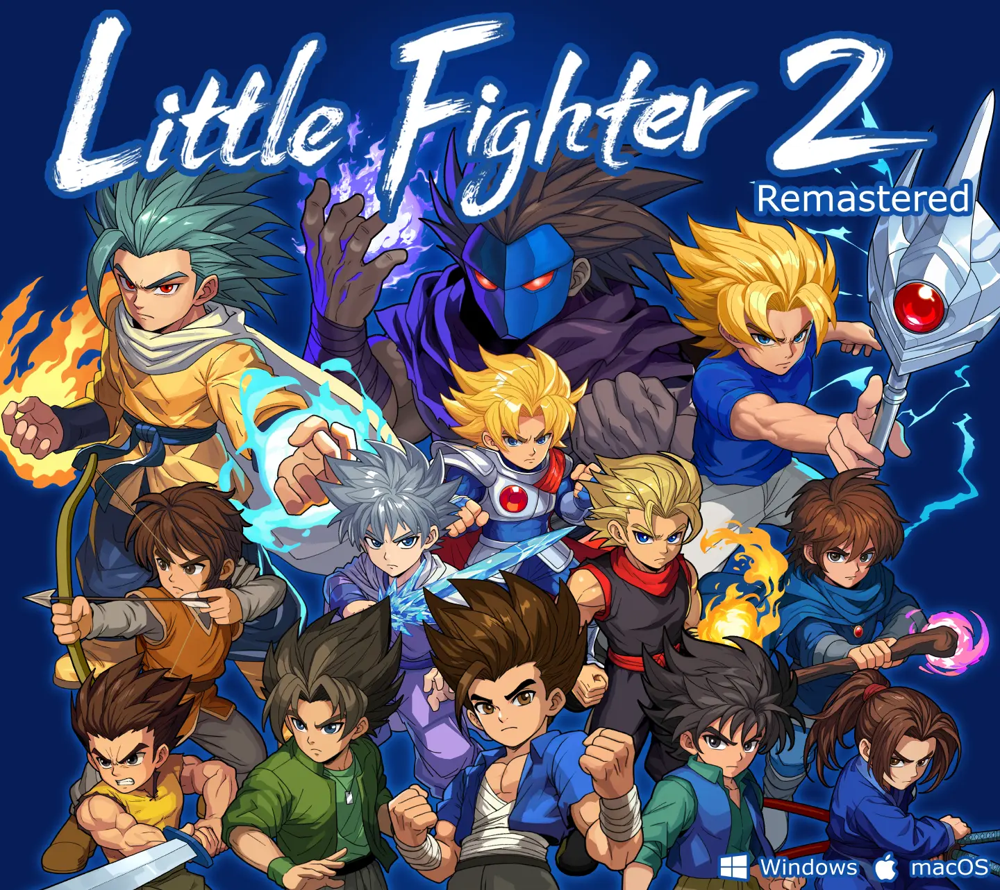
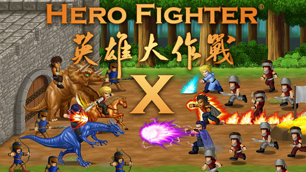
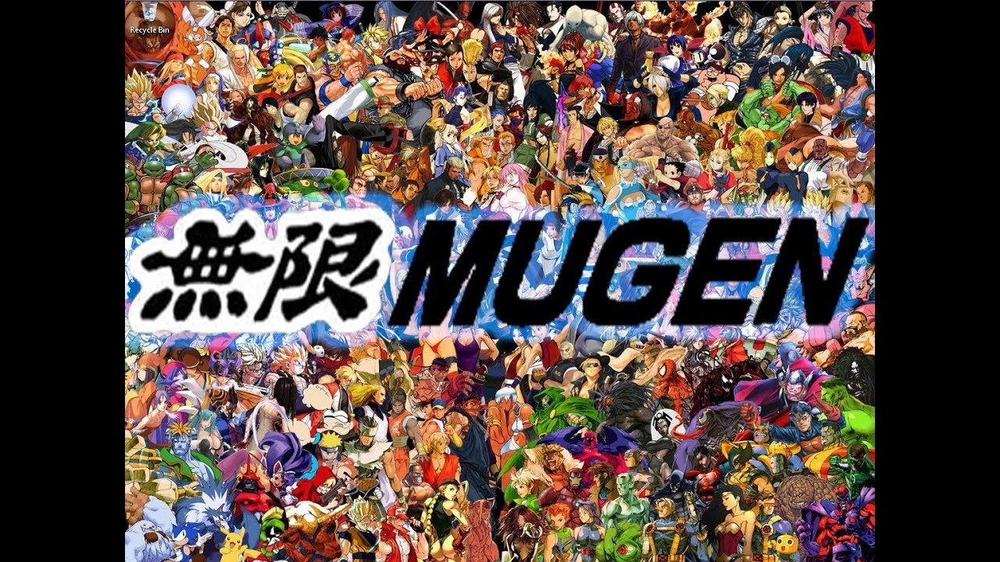
Fast brawler readability, team fights, simple controls, and special moves that create memorable chaos.
Large fights, ally pressure, clear attacks, and character actions that stay readable when the screen gets busy.
Character variety, match-up experimentation, and the feeling that every fighter can have a different rhythm.
Classic arcade brawlers like Final Fight and Streets of Rage also guide the 2.5D lane pressure, enemy waves, and stage pacing. Modern brawlers and action RPGs guide replayability, character identity, and loadout depth.
Combat in Divergency is defined by its speed, impact, and mechanical responsiveness. We want every strike, dash, and block to feel incredibly satisfying.
Fluid Traversal & Movement: Dash through lane pressure, cancel your attack animations to escape danger, and execute quick parries to turn the tide. Movement is not just a way to walk between fights—it is your primary survival tool, allowing for high-skill combat expressions.
Dynamic Physics & Hit-Stop: Every weapon impact features tailored visual hit-stop, camera shake, and screen-space particle effects that give combat a heavy, physical punch.
Encounter Pressure: You don't just fight passive targets. Enemy groups act in formations. Soldiers, shield bearers, ranged shooters, and brutal bosses force you to constantly reposition, break formations, and adapt your rhythm.
Each fighter has access to an expansive pool of over 10 unique active skills, but you cannot bring them all. Before setting foot in a stage, you must customize your combat deck, selecting only 4 active skills to equip for the mission ahead.
This structural limit changes how you play:
Attune for Crowd Control when heading into dense enemy waves.
Focus on High Mobility for stages with hazardous traversal and environmental traps.
Select Guard Breaks to shatter heavy front-line shield formations.
Pack Burst Damage when preparing for major boss fights.
The attunement system is designed to create tactical preparation without slowing down the action. You analyze the map, select your loadout, and immediately feel the weight of your choices in battle.
You are not fighting this war alone. Divergency features a seamless, real-time player-to-AI command wheel that lets you orchestrate your squad without stopping the brawler action.
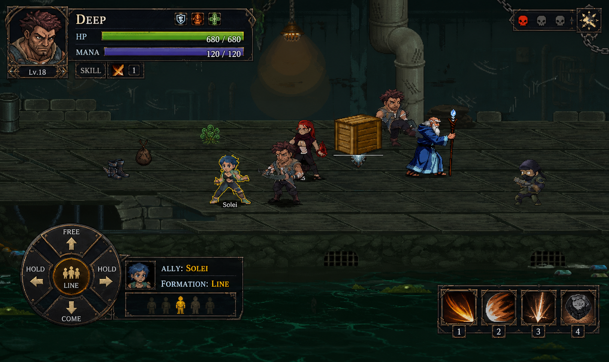
In-game ally command system
Quickly select a nearby ally and issue orders to coordinate attacks or protect your flanks:
Free: Release the squad back to independent AI behavior.
Come: Instantly regroup around the player's position.
Hold Left / Hold Right: Hold a specific flank to control lane pressure.
Line / Wedge / Circle: Shift the party's formation dynamically.
Synchronized Assist: Call a selected ally to trigger their signature support action (e.g., calling Block to drop a shield wall or Henry to throw smoke bombs).
While you brawl in real-time, the command system adds a satisfying layer of tactician control—pulling allies out of danger zones, locking down choke points, or calling in synchronized strikes exactly when a boss reveals a weak spot.
Divergency is not only arena combat. Stages include hidden routes, environmental details, puzzle moments, optional secrets, and quieter story beats between fights.
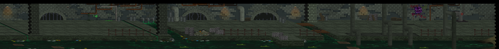
Marseille sewer route
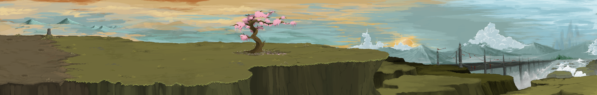
Sakuri bridge route
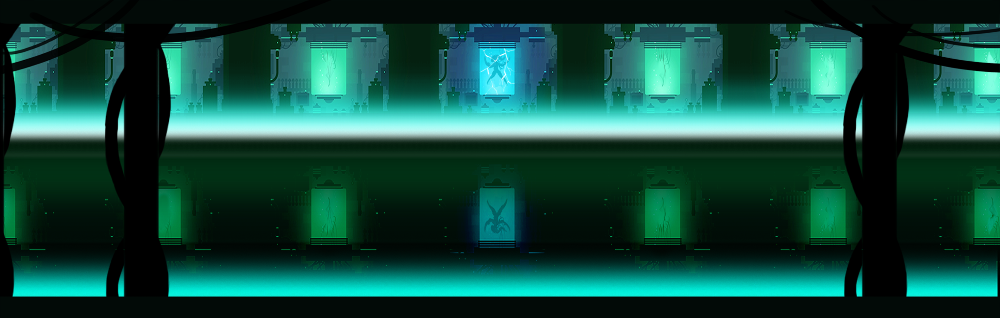
Submarine laboratory environment
Each chapter has its own combat identity. Marseille is built around prisons, gangs, undercity routes, industrial spaces, and a research submarine. Sakuri moves into sacred routes, hidden doors, identity, and corruption. Later chapters push into grave-cities, cursed mountain war zones, and the dreamlike final space called The Cradle.
"I've fought in enough wars to know that symbols don't bleed. We do."
Deep is a heavy melee fighter and former crusader who has survived too many wars. He hits hard, controls space, and carries the weight of a man who no longer wants to be used as a symbol.
Combat Style: Frontline Juggernaut / Crowd Control
Signature Weapon: Relic-Iron Greatsword
Movement Mechanic:[Developer Note: Replace this placeholder with your character details file data] (e.g., Heavy charge, ground slam cancels)
Squad Synergy: Absorbs frontline pressure, breaks shield formations, and peels enemies off vulnerable teammates.
"Knowing where the enemy will stand tomorrow is worth more than a thousand swords today."
Henry is a tactical veteran who works from the shadows. He reads the battlefield, gathers information, and supports the team when brute force is not enough.
Combat Style: Ranged Support / Battlefield Disruption
Signature Weapon: Silent Crossbow & Smoke Bombs
Movement Mechanic:[Developer Note: Replace this placeholder with your character details file data] (e.g., Tactical slide, smoke evasions)
Squad Synergy: Blinds enemies, slows down crowd movements, and provides cover so teammates can regroup.
"Every miracle has a price. Some choose to pay in steel; others, in blood."
Tulas is a blood and liquid mage. His abilities can create shields, platforms, filters, temporary paths, and dangerous offensive tools, but his power always carries a moral cost.
Combat Style: Area Denial / Platform Conjurer
Signature Weapon: Liquid Catalyst Core
Movement Mechanic:[Developer Note: Replace this placeholder with your character details file data] (e.g., Blood platform creation for lane elevation)
Squad Synergy: Creates defensive barriers and vertical paths, controlling the flow of the battlefield and shielding allies from harm.
"I stand. For you, for the team, until the armor cracks."
Block is a loyal ally and defensive force. Saving him is one of the first campaign objectives, and his role reinforces the game's focus on trust, party pressure, and commandable teamwork.
Combat Style: Pure Defensive Tank
Signature Weapon: Tower Aegis Shield
Movement Mechanic:[Developer Note: Replace this placeholder with your character details file data] (e.g., Stationary block parry, heavy shield bash)
Squad Synergy: Absorbs maximum damage, draws enemy aggro, and creates temporary invulnerability zones for the party.
Ghost begins as a nameless survivor pulled out of Jamerson's prison. The system cannot fully identify him, and that failure may be the reason the relic fragments cannot control him like everyone else.
From the hills, it still has blue water, bright streets, repaired ports, new hospitals, and military order. After years of Calamity, disease, abandoned roads, and broken borders, that image is powerful. People want to believe Marseille is proof that civilization can still hold.
But the farther you move from the clean districts, the more the truth shows through: crowded worker housing, quarantine blocks, debts tied to entry permits, missing refugees, private prisons, and soldiers watching places the city pretends do not exist.
Jamerson Obsworth did not begin as a monster. He was once an officer, a husband, and a father. His daughter Heniana was injured during a failed police rescue, infected by blood from a sick hostage, and placed in cryogenic sleep before the disease could finish killing her.
Jamerson could not accept a life where saving Heniana meant waiting beside a machine. In the old fortress-prison of Bastonne, he began with blood tests, medicine, and disease research. Then came surgery. Then body reconstruction. Then The Eye: a living fragment of a forgotten god that offered him knowledge no human science could reach.
The Eye gave Jamerson a bargain.
It would give him knowledge. He would give it a body.
The campaign begins with a rescue mission. Deep, Solei, Henry, and the team break into Bastonne to save Block, one of their closest allies, and recover evidence of Jamerson's experiments.
Jamerson expected someone to come. He changed prisoner rooms, had Block beaten before the rescue, and locked Bastonne down with gas, steel doors, drones, and emergency guards.
In the middle of that lockdown, a nameless prisoner wakes up when everyone else should be unconscious. He has no memory, no usable record, and no reason to survive the gas. When he makes enough noise to draw help, Henry opens the wrong cell and finds him instead of Block.
The team does not trust the Stranger. They also cannot ignore him. He can still breathe in Bastonne's gas, Jamerson's systems cannot fully read him, and he may be the only reason Block survives the escape with fewer injuries. After the prison break, the team gives him a temporary name: Ghost.
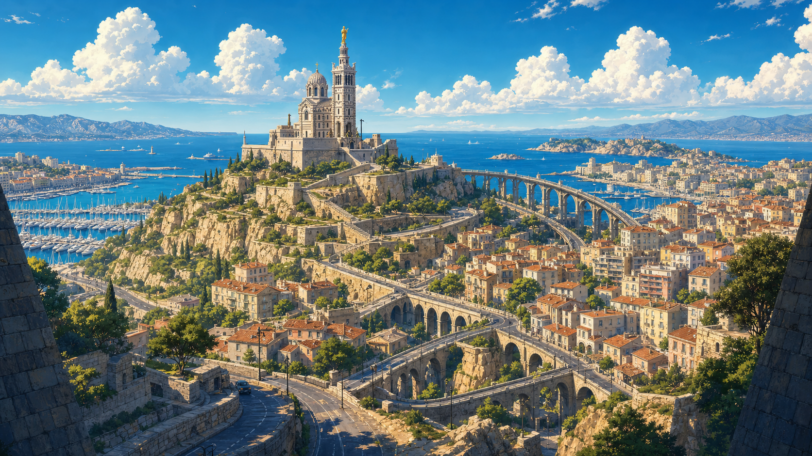
Marseille metropolis
After Bastonne, the plan is simple: hide the vehicle, reach Armorlite, treat Block's wounds, trade information, and leave Marseille before dawn.
Jamerson moves faster.
Armorlite is a small underworld bar run by Jacques, a quiet bartender who knows sewer routes, port schedules, checkpoint shifts, and which guards Jamerson has already bought. Before the team can recover, gangs hired through the secret police track them there. The first escape route burns in a street fight that spills from the bar into Marseille's back roads.
Henry changes the plan. The team goes below the city.
The sewers are not only sewers. They connect old maintenance tunnels, unfinished metro lines, abandoned shelters, and Laundel, a black-market station built by people Marseille pushed underground. Laundel has its own factions, traders, smugglers, rules, and rumors. The team can buy help and earn trust, or take what they need and make the route more dangerous later.
By the time they reach the port, sunset almost makes escape feel possible. The boat is there.
It is empty.
Marius Vane, Jamerson's right hand in the secret police, turns the harbor into a trap. Snipers, soldiers, containers, sewer creatures, and closing routes force the team into a battlefield where ally commands start to matter. After the fight, they learn the worst part: prisoners, evidence, and experiment data have already been moved offshore to a research submarine.
Running would let Jamerson erase everything.
So the escape becomes sabotage.
Inside the submarine laboratory, the team finds prisoners connected to machines, hybrid bodies in tanks, cell samples marked with Heniana's name, and failed artificial vessels built from the biological structure of the relic fragments. Jamerson is not only trying to cure a disease. He is trying to build a body that can survive what Heniana could not.
The first major boss is his perfect failure: not the final vessel The Eye wants, but close enough to prove that resurrection is no longer theory.
The submarine collapses. Jamerson appears to die behind glass, but The Eye warned him early enough. The body destroyed in the blast is a substitute. The real Jamerson escapes with blood samples, research data, and a route pointing east toward Sakuri.
By the end of Stage 1, the team understands what the submarine was proving. Jamerson is no longer only looking for a cure. Guided by The Eye, he is preparing a vessel that can survive the disease, hold Heniana, and give the relic fragment the body it wants.
The evidence points east, toward Sakuri and the next relic fragment. Deep wants to stop Jamerson before more people disappear. Henry wants the proof brought into the open. Solei refuses to let Heniana become the excuse for more victims.
Divergency uses pixel art to combine ruined industry, sacred landscapes, grotesque experiments, cursed wilderness, and hand-animated fighters. The world mixes traditional beauty with technological decay: Marseille's bright surface hides prisons below, Sakuri's calm paths hide manipulation, and later regions turn grief, memory, and violence into physical spaces.
Divergency is being built by TriLinkage, a small independent game studio based in Marseille, France. Kickstarter support lets us keep the full story campaign as the priority and pay for the production work that turns the current playable build into a finished PC-first release.
The base campaign is focused on the main game, not extra modes. Funding goes toward the work backers will actually feel when they play: combat polish, stage content, playable character refinement, enemies, bosses, UI, audio, QA, release preparation, and reward fulfillment.
This campaign is completion funding for the full story campaign foundation. It does not mean every stretch feature is guaranteed at launch. Extra modes stay separated as stretch goals so the main campaign remains protected.
#Funding Goal: $20,000 - Full Story Campaign Foundation
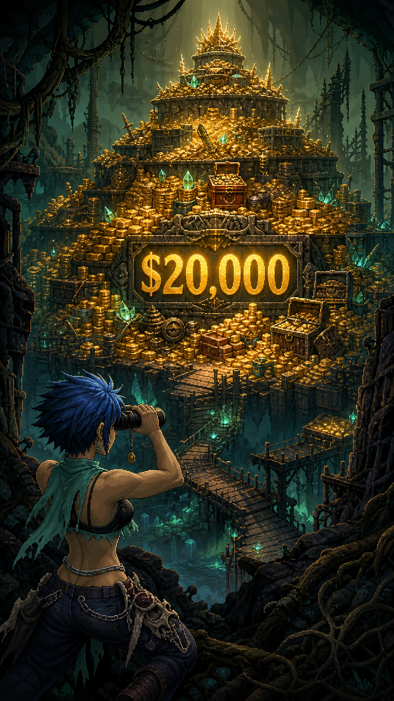
Solei scouting the $20,000 funding goal
The $20,000 base goal supports the production foundation for Divergency's full story campaign: the Marseille opening arc, remaining chapters, core combat and squad commands, boss work, UI, QA, release preparation, and digital game delivery for eligible tiers.
Budget breakdown:
Use of funds
Share
Purpose
Gameplay programming and production
45%
Combat polish, skill selection, squad commands, enemy logic, stage flow, tools, and release work
Pixel art, animation, backgrounds, VFX
25%
Characters, enemies, bosses, stage environments, effects, and campaign polish
Music and sound effects
10%
Combat impact, ambience, UI sound, and campaign music
QA, community, and launch materials
8%
Testing, feedback passes, store assets, backer updates, and launch preparation
Kickstarter/payment fees and contingency
7%
Platform fees, payment processing, and production buffer
EU physical reward reserve
5%
Poster/bracelet samples, packing material, and fulfillment preparation
Stretch goals expand the game after the core campaign is funded. If a stretch feature threatens the main story release, we will prioritize the base campaign first and update backers clearly.
Goal
Unlock
What it adds
$20,000
Full Story Campaign Foundation
Main campaign production, core combat, real-time squad commands, boss fights, QA, PC release, and digital delivery.
$25,000
The Arsenal: Extended Masteries
Expanded skill trees, more passive upgrades, weapon cosmetic variations, and deeper loadout deck-building.
$30,000
Whispers of the Dead: Lore & Secrets
Hidden side quests, character backstory events, secret rooms, and optional lore mini-bosses.
$35,000
Covenant of Two: Local Co-op
Local shared-screen co-op, custom team synergy commands, and online co-op matchmaking testing.
$45,000
Acoustic Awakening: Composer Collaboration
Live acoustic instrument recording for the soundtrack, advanced dynamic SFX package, and guest composer guest tracks.
$55,000
The Calamity's True Face: Expert Mode
Smart enemy AI behaviors, reworked group formations, advanced boss phases, and challenge rewards.
$65,000
Ascension: Survival & Boss Rush
Permadeath challenge rules, limited resource survival run, and a dedicated Boss Rush mode.
$80,000
The Infinity Tower
Endless scaling wave-based challenge mode with unique elite enemy groupings, custom rules, and progression badges.
$100,000
The Architect: Custom Stage Editor
In-game stage-building tools to create custom combat arenas, set enemy wave layouts, and share stages with the community.
This is a 24-month production plan from the end of the Kickstarter campaign, with physical reward shipping planned after the digital release window.
Window
Milestone
Month 0-1
Campaign wrap, backer survey preparation, production planning, reward validation
Month 1-3
Combat polish pass, clean gameplay capture, UI direction lock, production tools
Month 4-6
Stage 1 vertical slice: Bastonne, Marseille route flow, enemies, and first boss structure
Month 7-10
Stage 1 content build: Armorlite, Laundel, port ambush, submarine laboratory, and major experiment boss
Month 11-14
Stage 2 Sakuri and Stage 3 Calvaria content pass, relic mechanics, bosses, and story events
Month 15-18
Stage 4 Akam Meskul and Stage 5 The Cradle content pass, final systems, and campaign arc lock
Month 19-21
Full campaign alpha/beta: balancing, bug fixing, boss tuning, and backer feedback
Month 22-24
Polish: UI, audio, VFX, accessibility checks, localization pass, PC release candidate, digital rewards
Month 24-26
EU physical reward production and shipping window for poster/bracelet tiers
Dates may shift if testing shows that a feature needs more work. If that happens, backers will receive clear updates explaining what changed, what is being fixed, and how it affects delivery.
Campaign currency is shown in USD in this draft. Physical rewards are EU-only at launch to keep fulfillment manageable.
Backer rewards should feel like a fair thank-you, not like random merchandise or a hidden store page. The reward ladder for Divergency is built around five kinds of supporter value:
Recognition: names in the digital supporter wall, credits, and backer thanks.
Digital gifts: wallpapers, avatar icons, a small lore dossier, soundtrack, and mini artbook.
Game access: the full PC digital key, an early-backer key tier, and beta access for feedback-focused backers.
Collector objects: one poster and one bracelet, both tied to the world of Divergency and limited to EU shipping.
Creative participation: limited higher tiers where backers can leave their mark, name NPCs, or help shape custom visual elements and enemy concepts.
The rewards avoid pay-to-win items, exclusive combat power, or exclusive playable characters. Backers can receive access, recognition, development participation, and collector gifts, but the final game should remain fair for players who discover Divergency after Kickstarter.
Pledge
Reward
Supporter value
Estimated delivery
$5
Signal Supporter
Campaign updates, one backer wallpaper, and name on the digital supporter wall
Month 6 + Month 24
$15
Field Dossier Pack
Wallpapers, avatar/icon pack, printable mini lore dossier, and supporter wall name
Month 6
$20
Early Recruit, limited quantity
Full PC digital game key at a lower early-backer price, plus Field Dossier Pack
Month 24
$25
Full Game Digital Key
Full PC digital game key, Field Dossier Pack, and supporter wall name
Month 24
$40
Digital Deluxe Pack
Game key, soundtrack, mini artbook, wallpapers, avatar/icon pack, and mini lore dossier
Month 24
$55
Duo Fighter Pack
Two PC digital game keys, plus the Digital Deluxe Pack for the main backer
Month 24
$70
Beta Fighter
Digital Deluxe Pack, beta access, private feedback form, and beta tester credit listing
Month 19-24
$100
Marseille Poster Pack, EU only
Beta Fighter digital rewards plus one A3 Marseille/Divergency poster
Month 24-26
$120
Prisoner's Scratchings, limited
Beta Fighter digital rewards plus write an approved short message/graffiti on a Bastonne prison cell wall
Month 24
$140
Beacon Of Hope Bracelet, EU only
Beta Fighter digital rewards plus A3 poster and bracelet inspired by an in-world resistance symbol
Month 24-26
$175
Laundel Resident, limited
Beta Fighter digital rewards plus name a minor non-interactive background NPC in Laundel undercity
Month 24
$250
Design Council, limited
Digital Deluxe Pack, beta access, credit listing, and one scoped feedback session
Month 10-24
$350
Vanguard Weapon Artisan, limited
Beta Fighter digital rewards plus collaborate to design a custom weapon skin cosmetic or passive skill badge icon
Month 24
$500
Marseille Citizen, limited
Digital Deluxe Pack, beta access, credit listing, and collaborate to create a custom NPC + short questline
Month 24
$800
Calamity Elite Creator, limited
Digital Deluxe Pack, beta access, credit listing, and collaborate to design a unique corrupted elite enemy or miniboss
The $5 and $15 tiers give low-risk symbolic gifts to people who mainly want to help. They should not require heavy production work, but they still give supporters something with Divergency identity.
The $20 early-backer key gives the first supporters a clear reason to pledge early without lowering the normal game-key value for the whole campaign. The $25 tier remains the standard digital copy. The $55 duo pack is useful for friends, families, streamers, and players who want to gift a copy.
The $40 and $70 tiers are the strongest digital-value tiers. They reward serious supporters with music, art, lore, beta access, and a feedback path while keeping fulfillment mostly digital.
The physical tiers ($100 and $140) are priced above the digital tiers because they add manufacturing, packing, shipping, damaged-package support, and address management. They should be treated as collector gifts, not as the core reason to back the campaign.
The creative backing tiers allow supporters to leave their mark on the game in a tiered, logical format that matches the world's dark fantasy identity:
At $120 (Prisoner's Scratchings) and $175 (Laundel Resident), backers gain small, immersive storytelling opportunities (graffiti on cell walls, naming a background refugee or merchant) that add flavor to the game without requiring design meetings or complex asset creation.
At $350 (Vanguard Weapon Artisan), $500 (Marseille Citizen), and $800 (Calamity Elite Creator), backers collaborate directly with the development team on visual assets, NPC narratives, or combat variants. These tiers are strictly capped to ensure they do not cause scope creep or development delays.
Add-ons can increase pledge value without creating too many reward tiers.
Add-on
Suggested price
Notes
Extra PC digital key
$20-25
Best low-risk add-on because it has no shipping cost
Soundtrack + mini artbook
$15
Useful for backers who choose the standard game key but later want the deluxe digital pack
A3 poster, EU only
$25 plus shipping
Keep to one poster size and one print vendor if possible
Beacon bracelet, EU only
$35 plus shipping
Only launch after a sample photo and unit cost are confirmed
Final credits name upgrade
$10
Optional upgrade for standard digital tiers; use one approved name or alias
Final quantities should be locked before launch. Recommended limits: Early Recruit around 200-300 backers, Prisoner's Scratchings around 50 slots, Laundel Resident around 20 slots, Design Council around 10 backers, Vanguard Weapon Artisan around 10 backers, Marseille Citizen around 5 backers, and Calamity Elite Creator around 3 backers unless the team is certain it can absorb more design work.
Prepare visible sample images before launch for the wallpaper pack, lore dossier, poster, and bracelet concept.
Do not promise more than one poster size, one bracelet design, or multiple physical variants unless production quotes are already confirmed.
Keep all supporter names subject to approval, character limits, and a final survey deadline.
Lock digital reward file formats before launch: JPG/PNG wallpapers, PDF dossier/artbook, MP3/WAV soundtrack, and Steam or platform key delivery where available.
Reserve 5-10% extra physical items for damaged parcels, lost mail, and replacement handling.
Treat beta access as feedback participation, not as a guaranteed polished early version of the final game.
All in-game text, names, visual assets, and gameplay designs submitted by backers are subject to developer approval, editing, and revision to maintain appropriate tone, balance, and quality.
Name an NPC who appears in the background of Laundel (the undercity station).
The NPC will have a basic idle animation and may be a trader, refugee, or mercenary, but will not have custom dialogue trees or impact the main questline.
No copyrighted or licensed characters, hate speech, explicit sexual content, real-world political targeting, or content that breaks immersion or Divergency's dark fantasy tone.
The development team keeps final approval on all names, designs, texts, dialogue lines, and mechanics.
If a submission does not meet guidelines, the backer will be asked to submit a revised proposal within a designated time window.
Physical rewards are limited to EU shipping for the campaign launch.
Planned shipping approach:
Ship-from region: France/EU.
Marseille Poster Pack estimated shipping: EUR 8-15 depending on EU destination.
Beacon Of Hope Bracelet pack estimated shipping: EUR 10-18 depending on EU destination.
Final country-by-country shipping prices should be entered before launch or confirmed through Kickstarter Pledge Manager before fulfillment.
Backer addresses and reward preferences will be collected through Kickstarter surveys or Pledge Manager.
Digital rewards will be delivered through Kickstarter digital rewards, game keys, or secure download links.
We are choosing EU-only physical rewards because posters and bracelets add packing, customs, replacements, and address-management work. Digital rewards remain available more broadly.
Combat-heavy games need iteration. Animation timing, hitboxes, enemy behavior, UI clarity, and difficulty balance can all take longer than expected. To reduce risk, the base goal focuses on the main story campaign first.
The full world of Divergency has room for more modes, side content, and playable variations than a small team should promise all at once. Stretch goals are separated from the base campaign so the core release stays protected.
Online co-op and PvP are harder to deliver than single-player or local features. These are stretch-goal features and will be tested before being locked for launch. If stability requires more time, we will tell backers instead of hiding the problem.
The current release plan is PC-first. Any additional platform can require technical checks, store page review, certification, or extra porting work. Additional platforms will be considered after the base experience is stable.
Posters and bracelets require production, packing, address collection, shipping, and replacement handling. To keep that manageable, physical rewards are EU-only at launch, with shipping estimates shown before backers pledge.
Divergency is for players who remember the joy of side-scrolling action, the tension of mastering a fighter, and the satisfaction of leading a small party through dangerous spaces.
Your support helps us finish the full story campaign, sharpen the combat, complete the world beyond Marseille, and bring Divergency's dark fantasy brawler to release.
Back Divergency and help us build a new 2D action game with skill loadouts, ally commands, handcrafted stages, and a story about refusing to sacrifice people for someone else's miracle.
Quick narrative read
Story Short Summary
Condensed causal story pass covering Jamerson, Bastonne, Marseille, each later stage, the final ritual, and epilogue themes.
Read
25 min
Sections
12
Tables
7
Visual Slots
Browse all images found in imgs/. Edit IMAGE_SLOTS to pin priority images first.
Tài liệu này là bản đọc nhanh của tuyến truyện chính trong Divergency_Complete_Story_VI.md. Trọng tâm là mạch nhân quả: vì sao nhóm đi từ Bastonne đến Marseille, vì sao kế hoạch trốn thất bại, và vì sao từng Stage sau đó nối tự nhiên vào Stage kế tiếp.
Thế giới đã trải qua nhiều đợt Đại Họa, một căn bệnh/lời nguyền bắt nguồn từ những mảnh thân thể còn sống của một Thần Sơ Sinh bị con người giết và phân tách từ thời cổ đại. Những mảnh đó không chết. Chúng vẫn nhìn, nghe, gọi, đập và tìm đường trở về với nhau.
Jamerson Obsworth, một cựu sĩ quan của Marseille, mất gần như tất cả sau khi con gái Heniana mắc bệnh và phải ngủ đông. Ông tìm được Con Mắt, một mảnh của Thần Sơ Sinh, rồi tin rằng mình có thể cứu con bằng cách dùng tù nhân, người tị nạn và người bệnh làm vật liệu thí nghiệm. Jamerson không nghĩ mình là quái vật. Ông tin mọi tội ác đều có thể được biện minh nếu nó đưa Heniana trở lại.
Đội của Deep, Henry, Solei, Tulas và Block bị kéo vào bí mật này khi Block bị Jamerson bắt. Trong Bastonne, họ cứu Block và gặp một tù nhân vô danh về sau được gọi là Ghost/Stranger, người có khả năng kháng lại một phần ảnh hưởng của các mảnh thần. Từ đây, câu chuyện không còn là một cuộc trốn chạy khỏi Marseille, mà thành hành trình ngăn con người biến đau khổ thành lý do để hi sinh người khác.
Marseille là một đô thị tự trị giàu có, được bảo vệ nghiêm ngặt và tự quảng bá như thành trì cuối cùng của trật tự. Bên dưới vẻ sáng bóng đó là nhà tù, thí nghiệm, người mất tích và một bộ máy dùng nỗi sợ để vận hành thành phố.
Game mở bằng đội Deep chuẩn bị giải cứu Block, đồng minh thân thiết đã bị Jamerson bắt trong lúc điều tra. Người chơi có thể bắt đầu bằng Solei tại căn cứ để học chiến đấu và phối hợp đội, rồi chuyển sang nhiệm vụ Bastonne.
Kế hoạch Bastonne vỡ trận khi Jamerson kích hoạt lockdown, khí mê tràn hành lang và tù nhân bị đổi phòng. Trong hỗn loạn, Stranger tỉnh dậy dù lẽ ra phải bất tỉnh. Anh nghe lời nhờ của Block, có thể gây tiếng động để đội Deep tìm đến, rồi có thể giúp Block thoát khỏi khí mê hoặc bỏ qua để tự chạy. Block vẫn được cứu theo canon, nhưng lựa chọn của Stranger ảnh hưởng thương tích của Block và mức độ tin tưởng của đội.
Sau Bastonne, Stranger không còn là một tù nhân bình thường. Đội gọi anh là Ghost, vừa vì anh gần như vô danh, vừa vì hệ thống của Jamerson không nhận diện được anh.
Sau khi cứu Block, cả nhóm không định lao vào phòng nghiên cứu. Họ định cắt đuôi, giấu xe, nghỉ tạm ở Armorlite, rồi rời Marseille trước bình minh. Nhưng Jamerson đã phản ứng nhanh hơn. Cảnh sát mật treo thưởng trong thế giới ngầm, các băng nhóm canh lối ra, và garage an toàn bị lần ra.
Ở Armorlite, Jacques giúp Henry kiểm tra đường thoát. Nhưng băng đua xe và tay chân của thế giới ngầm tấn công quán. Sau trận, nhóm hiểu rằng đi đường mặt đất sẽ bị bắt hoặc bị bán đứng. Henry chuyển sang phương án B: đi xuống cống ngầm.
Cống dưới Marseille không chỉ là đường nước thải. Nó là tầng ruột của thành phố: đường bảo trì cũ, metro bỏ dở, chợ đen và nơi người nhập cư bị đẩy xuống sống. Nhóm đi qua Laundel, một thành phố ngầm có luật riêng, phe phái riêng và những người vừa sợ Jamerson vừa phải sống nhờ hệ thống của ông.
Từ Laundel, nhóm tìm được đường ra bến cảng. Tại đây có một khoảng lặng: mọi người nói về khả năng rời Marseille, bắt đầu lại ở phía đông, và thoát khỏi danh phận tội phạm. Nhưng chiếc thuyền hẹn trước trống rỗng. Cảnh sát mật phục kích. Boss là Marius Vane, cánh tay phải của Jamerson trong bộ máy mật, người xem tù nhân, người bệnh và dân nhập cư như chi phí vận hành.
Sau trận, nhóm tra hỏi lính cuối cùng và biết một đồng minh của Henry đã bị đưa xuống một tàu ngầm nghiên cứu ngoài khơi. Thuyền của cảnh sát mật có autopilot đến đó. Từ đây, họ không còn chỉ trốn nữa: nếu bỏ đi, bằng chứng và những người bị bắt sẽ chìm xuống biển.
Trong tàu ngầm, nhóm thấy sự thật về Jamerson: tù nhân bị nối vào máy móc, cơ thể lai, mẫu tế bào mang ký hiệu Heniana, và các thí nghiệm dùng cấu trúc sinh học của Thần Sơ Sinh để tạo vật chứa mới. Boss là SheMal, một thất bại hoàn hảo: không còn là người bình thường, nhưng cũng không phải quái vật vô tri.
Tàu ngầm sụp đổ. Nhóm tưởng Jamerson chết, nhưng ông đã thoát bằng thân xác thế mạng, mang dữ liệu và dấu vết dẫn tới Sakuri. Kết thúc Stage 1, nhóm có bằng chứng về Heniana và hiểu rằng đứa trẻ nằm giữa tội ác của Jamerson vẫn còn sống hoặc ít nhất còn được giữ trong trạng thái mong manh. Họ rời Marseille để truy đuổi ông.
Nhóm đến một bán đảo phía đông, nơi Cái Tai được thờ như quyền năng của thánh nữ Sakuri. Cái Tai nghe được tiếng nói, ý nghĩ, âm mưu và cả tiếng bệnh trong máu. Jamerson tin nó có thể nghe ra tần số của căn bệnh trong Heniana.
Ở làng chài, nhóm gặp Heni, một bé gái có khuôn mặt giống Heniana. Cha nuôi của cô là điệp viên của Jamerson, đã âm thầm ghi chép sức khỏe và gửi mẫu máu về Marseille. Heni không biết mình là thí nghiệm nhân bản. Cô chỉ biết mình hay mơ thấy phòng trắng và một người cha chưa từng gặp.
Trên đường lên thủ phủ, Solei gặp những người có liên hệ với dòng máu của mẹ mình, nhưng họ không chấp nhận cô như người trở về. Stage này là gương của Solei: cô phải hiểu rằng mình không cần một nơi duy nhất công nhận mới có quyền tồn tại.
Sakuri không phải kẻ ác bẩm sinh. Cô là một đứa trẻ bị bịt mắt, nhốt trong cung điện, bị ép dùng Cái Tai để phục vụ gia tộc và lãnh chúa. Khi quyền năng làm cô nghe quá nhiều lời nói dối, cầu cứu và âm mưu, cô muốn phá hủy thế giới để được im lặng.
Nhóm đánh bại Sakuri. Jamerson xuất hiện qua đường ngầm, lấy dữ liệu từ Cái Tai và mang Heniana rời đi. Cái Tai vẫn để lại lời gọi dẫn cả nhóm đến Calvaria, nơi Cái Lưỡi đang nằm trong tay một giáo hội thờ cái chết.
Heni quyết định đi cùng nhóm. Cô không muốn bị Jamerson lấy lại, cũng không muốn sống như mẫu thử. Solei gọi cô là em mà không đặt điều kiện.
Calvaria là thành phố mộ, nơi người sống trả tiền để nghe người chết nói. Giáo hội Hơi Thở Cuối nắm giữ Cái Lưỡi, mảnh thần có thể giả giọng người chết, dịch ngôn ngữ cổ và biến lời nói thành mệnh lệnh.
Ban đầu, giáo hội dùng Cái Lưỡi để an ủi người mất thân. Nhưng an ủi dần thành dịch vụ, dịch vụ thành quyền lực, quyền lực thành nhà tù. Người giàu mua lời tha thứ. Người nghèo bán xương, bán tên, bán cả nỗi đau để được nghe một câu cuối cùng.
Stage này nên là nơi đào sâu nhất vào Deep và Henry. Cái Lưỡi không chỉ giả giọng người chết; nó nói thẳng vào tim gan ruột của người nghe. Nó nhắc Deep về những cuộc chiến xưa, những đồng đội đã chết, những bức tượng anh hùng xây bằng xác người, và câu hỏi liệu đời anh còn ý nghĩa gì nếu anh không còn làm biểu tượng. Với Henry, nó moi lại các quyết định bẩn, những người anh không cứu được, sự mệt mỏi vì cứ phải làm người tỉnh táo sau mỗi thảm họa, và nỗi sợ rằng anh chỉ đang tiếp tục chiến đấu vì không biết sống kiểu khác.
Calvaria vì vậy không chỉ là stage về cái chết, mà là stage về sự kiệt sức sau chiến tranh. Deep phải đối diện việc sức mạnh của mình từng bị người khác dùng để hợp thức hóa bạo lực. Henry phải đối diện việc lòng trách nhiệm có thể trở thành một dạng tự trừng phạt. Cái Lưỡi thắng nếu nó khiến họ tin rằng người chết có quyền ra lệnh cho người sống tiếp tục đổ máu.
Jamerson đến trước nhóm và bắt Cái Lưỡi nói bằng giọng Heniana. Khi giọng ấy hỏi liệu Heniana tỉnh dậy có còn nhận ra cha không, Jamerson vượt qua ranh giới cuối cùng: ông không còn chỉ muốn cứu con gái, mà muốn sở hữu một phiên bản không thể từ chối mình.
Boss Stage 3 là Dàn Hợp Xướng, một cơ thể xương khổng lồ ghép từ giọng nói, hài cốt và lời cầu nguyện. Nó thử từng nhân vật bằng giọng người chết: Henry bị kéo về tội lỗi cũ, Deep bị gọi lại làm biểu tượng chiến tranh, Solei bị ép chọn một căn tính duy nhất, Heni bị buộc biến mất để trả chỗ cho Heniana, và Ghost bị gọi bằng một cái tên cũ chưa chắc còn thuộc về anh.
Với Ghost, Stage 3 chỉ nên mở thêm một khe hở, chưa giải thích hết. Cái Lưỡi có thể gọi một tên cũ, nhắc đến một phòng trắng, một mã hồ sơ bị xóa, hoặc một câu nói mà Ghost chưa từng kể với ai. Người chơi hiểu rằng Ghost có quá khứ thật, nhưng chưa biết đó là quá khứ của nạn nhân, vật thí nghiệm, hay một thứ gì phức tạp hơn.
Sau chiến thắng, nhóm hiểu sự thật lớn hơn: Thần Sơ Sinh có thể không chủ động nguyền rủa thế giới. Các mảnh thân thể bị giữ lại quá lâu đang phát ra một tiếng gọi méo mó. Con Mắt nhìn, Cái Tai nghe, Cái Lưỡi gọi, Trái Tim đập. Khi những tín hiệu đó chạm vào con người, chúng thành bệnh, ảo giác, cuồng tín và ham muốn hồi sinh.
Nhóm nhận ra không thể chỉ phá từng mảnh, cũng không thể hồi sinh thần. Họ phải tìm nơi tiếng gọi bắt đầu: Dây Rốn. Nhưng trước đó, họ phải đi qua Akam Meskul, nơi Trái Tim đang đập.
Akam Meskul là vùng núi bị nguyền, nơi nghi lễ giết Thần Sơ Sinh từng diễn ra. Xác thánh long Akam Meskul, từng chở anh hùng Aramut vào vùng cấm, giờ trở thành đường hầm cho con người đi sâu vào lời nguyền.
Ở đây có hai phe chính. Con Cháu Chiếc Nôi tin thế giới đã giết thần của họ nên phải bị thanh tẩy. Tàn Dư Sáu Vương Quốc tin họ có thể dùng khoa học để hồi sinh thần rồi đẩy nó ra khỏi thế giới. Một phe biến phục thù thành thánh chiến. Phe kia biến sinh tồn thành thí nghiệm và bạo lực có tổ chức.
Stage này vẫn có tiếng vọng cho Deep và Solei, nhưng trọng tâm cảm xúc nên chuyển nhiều hơn sang Tulas và Block.
Với Tulas, Akam Meskul không cần phải là quê hương hay tín ngưỡng của anh. Nó liên quan gián tiếp qua cách cả vùng đất này ám ảnh bởi máu, huyết thống, độc tố và cơ thể sống. Năng lực điều khiển máu/chất lỏng của Tulas trở nên vừa hữu ích vừa đáng sợ: anh có thể khóa vết thương, kéo máu độc ra khỏi người bị nhiễm, dựng khiên từ chất lỏng ô nhiễm, mở đường qua vùng khí độc bằng màng lọc tạm, hoặc dùng máu trên chiến trường làm điểm neo cứu người. Nhưng mỗi lần làm vậy, anh càng chạm vào ranh giới giữa cứu chữa và xâm phạm thân thể. Stage 4 hỏi Tulas rõ hơn: một sức mạnh khiến người khác sợ có thể được dùng để bảo vệ họ mà không biến anh thành thứ họ ghê tởm hay không.
Với Block, Akam Meskul là nơi những bộ lạc và phe phái nói rất nhiều về anh hùng, sức mạnh, cơ thể, tốc độ, huyết thống và chiến công. Block không nhanh nhất, không hào nhoáng nhất, cũng không phải kiểu anh hùng được kể trong bài ca. Nhưng ở Stage này, anh nhận ra giá trị của mình: đứng vững khi người khác cần đường rút, giữ cầu cho dân chạy, che khiên cho người bị thương, vác người qua vùng độc, hoặc chặn một cánh cửa đủ lâu để cả nhóm sống sót. Sự trưởng thành của Block không phải là trở thành biểu tượng, mà là hiểu rằng sức mạnh có thể là một nơi trú tạm cho người khác.
Deep vẫn nhận ra truyền thuyết anh hùng Aramut đã bị cắt sửa để che thất bại của các vua. Solei vẫn thấy cả hai phe đều muốn dùng máu của cô để chứng minh điều gì đó. Nhưng hai ý này nên làm nền cho Tulas và Block: một người đối diện câu hỏi về máu, một người đối diện câu hỏi về cơ thể và che chở.
Trái Tim của Thần Sơ Sinh bị gắn vào một cỗ máy chiến tranh: Titan Trái Tim. Nó không phải pin năng lượng. Nó khuếch đại cảm xúc: thù hận thành bạo động, sợ hãi thành diệt trừ, tình yêu của Jamerson thành quyền sở hữu.
Jamerson đến đúng lúc hai phe giao chiến. Ông dùng dữ liệu từ Con Mắt, Cái Tai và Cái Lưỡi để làm Trái Tim đập theo nhịp Heniana. Trận Titan nên buộc đội chia việc rõ: Tulas cứu người và kiểm soát máu độc giữa chiến trường, Block giữ tuyến rút lui và bảo vệ dân thường, Deep phá hủy loa tuyên truyền, Henry ra lệnh không truy sát người đầu hàng, Solei cứu trẻ bị hai phe đánh dấu.
Sau trận Titan, Jamerson lấy được Trái Tim và bỏ lại hàng trăm người đang chết để tiếp tục đưa Heniana vào vùng cấm. Cú đánh này khiến Tulas và Block nhìn thấy mặt trái của "cứu một người bằng mọi giá": một người dùng cơ thể kẻ khác làm nguyên liệu, người còn lại dùng sức mạnh của mình để giữ những cơ thể ấy còn sống.
Mảnh Cái Lưỡi còn lại nhắc nhóm: người chết có thể gọi, nhưng người sống phải được chọn có đáp lại hay không. Con đường cuối cùng mở ra qua xương sống Akam Meskul, dẫn đến The Cradle.
The Cradle là nơi nằm giữa hiện thực và giấc mơ, nơi Dây Rốn của Thần Sơ Sinh vẫn nối với thứ gì đó ngoài thế giới. Ký ức của các Stage trước xuất hiện chồng lên nhau: Armorlite, Laundel, làng chài, Calvaria, xác rồng, phòng ngủ đông của Heniana.
The Cradle không chỉ là địa điểm cuối. Nó là bài kiểm tra cuối của toàn bộ hành trình. Mỗi vùng ký ức ép nhóm quay lại một cám dỗ cũ: Marseille hỏi họ có bỏ người khác để tự thoát không, Sakuri hỏi họ có dùng một đứa trẻ làm công cụ không, Calvaria hỏi họ có để người chết ra lệnh cho người sống không, Akam Meskul hỏi họ có biến lịch sử và máu thành lý do giết người không.
Tại đây, các phe kéo đến cùng lúc. Con Cháu Chiếc Nôi muốn hồi sinh thần để thanh tẩy nhân loại. Tàn Dư Sáu Vương Quốc muốn hồi sinh thần để đẩy nó về nơi cũ. Jamerson muốn dùng thần để cứu Heniana. Ba lực này chính là ba lựa chọn sai đã được gieo từ trước: phá hủy bằng thù hận, dùng thần như công cụ sinh tồn, hoặc biến một đứa trẻ thành cái cớ cho phép màu.
Đến đây, tuyến bí ẩn của Ghost mới rõ hơn. Những mảnh ký ức rải từ Bastonne, Calvaria và Akam Meskul ghép lại: anh từng là một thí nghiệm thất bại, một người không phù hợp làm vật chứa và không dễ bị điều khiển. Vẫn có thể để mở một phần câu hỏi ai đã xóa hồ sơ của anh, ai là người đầu tiên thử nghiệm trên anh, và vì sao anh sống sót. Điều chắc chắn là anh không phải người được chọn. Anh là người sống sót từ một lỗi sai, và có quyền chọn mình là ai.
Heni yếu đi khi đến gần Dây Rốn vì cơ thể cô cộng hưởng với Heniana. Nhưng điều đó không biến cô thành chìa khóa vô tri. Càng nghe thấy giấc mơ của Heniana, Heni càng hiểu mình không phải phần thay thế cho ai. Cô có quyền sợ, quyền từ chối, và quyền tự chọn hành động cuối cùng của mình.
Jamerson đặt buồng ngủ đông của Heniana vào Dây Rốn. Con Mắt, Cái Tai, Cái Lưỡi và Trái Tim cùng hướng về cô bé. Nhưng sự thật lộ ra: nếu nghi lễ thành công, Heniana có thể tỉnh dậy trong cơ thể thần, nhưng ký ức, ý chí và nhân tính của cô sẽ bị Thần Sơ Sinh nhấn chìm. Jamerson không cứu con. Ông đang dùng hình ảnh con làm cửa cho một thứ khác bước vào.
Trong trận cuối, Jamerson trở thành vật chứa của các mảnh thần. Khi Heniana tỉnh lại trong vài phút ngắn, cô không hiểu hết chiến tranh hay lời nguyền, nhưng cô thấy Heni, thấy những người lạ đang chảy máu vì mình, và thấy cha mình đã biến nỗi sợ mất con thành quyền sở hữu. Cô nói rằng nếu phải sống bằng cách làm mọi người khác ngủ mãi, cô không muốn. Câu nói đó làm Jamerson vỡ ra. Nhưng Con Mắt chiếm lấy phần ham muốn còn lại trong ông, biến ông thành The Father-Eye.
Ghost cắt liên kết giữa các mảnh thần và cơ thể Jamerson. Nhóm không chọn phá hủy các mảnh, cũng không hồi sinh Thần Sơ Sinh. Canon chọn cách thứ ba: trả các mảnh về qua Dây Rốn, tức là không sở hữu, không giết lại, không biến thần thành công cụ, mà tháo nút lời gọi đã bị con người bóp méo quá lâu.
Đoạn cuối là một nghi lễ ngược. Ghost cắt Con Mắt vì anh là lỗi sai hệ thống không đọc được. Solei gọi Heni bằng tên riêng, không phải bản sao. Henry ra lệnh cuối cùng: không ai được chết để trả phí cho phép màu. Deep giữ đường rút thay vì đứng làm biểu tượng chiến thắng. Tulas dùng máu để cứu người, không mở khóa nghi lễ. Block giữ cổng cho người sống rời đi. Heni và Heniana cùng chạm vào mạch sáng, nhưng không ai thay thế ai.
Các mảnh thần tan ra, The Cradle ngừng mơ. Jamerson dùng phần sức cuối giữ Con Mắt không bám vào Heniana. Đó là hành động đúng đầu tiên của ông sau rất nhiều tội ác, nhưng không xóa những gì ông đã làm. Không ai trong nhóm gọi ông là anh hùng. Ông chết như một người cha thất bại, cuối cùng đã dừng ra lệnh.
Đại Họa không biến mất ngay, nhưng thế giới bắt đầu nhẹ đi: sông bớt đen, cơn sốt đến chậm hơn, trẻ sinh ra ít mang vết bệnh hơn. Marseille mất bí mật lớn nhất của Jamerson và phải đối diện với bằng chứng về Bastonne. Laundel không thành thiên đường, nhưng người dưới thành phố có thêm một câu chuyện để kể.
Sakuri trở thành cảnh báo về việc biến trẻ em thành thánh nhân. Calvaria mất quyền giả giọng người chết, buộc người sống tự nói lời tạm biệt. Akam Meskul vẫn nguy hiểm, nhưng hai phe không còn bảo vật để biến chiến tranh thành định mệnh.
Heniana còn sống hay không được để mở theo hướng bittersweet: cô có thể thở một mình trong thời gian ngắn, được Heni nắm tay, và được nghe lần đầu không phải tiếng máy móc. Heni không thay thế Heniana. Heni sống tiếp như một con người riêng, mang khuôn mặt giống Heniana nhưng không còn bị định nghĩa bởi khuôn mặt đó.
Ghost rời The Cradle cùng đồng đội. Khi Henry hỏi anh có muốn tìm lại tên cũ không, Ghost đáp rằng nếu ngày nào đó cần, anh sẽ tìm. Hôm nay, anh đã có người gọi.
Divergency không nói rằng đánh bại boss cuối sẽ xóa sạch đau khổ. Câu chuyện nói điều khó hơn: có những mất mát không thể đảo ngược, và chính việc chấp nhận điều đó mới ngăn con người biến tình yêu, niềm tin, an ủi, lịch sử hoặc sinh tồn thành giấy phép để hi sinh người khác.
Nhóm nhân vật chính thắng vì họ từ chối suy nghĩ như kẻ thù: không biến Heniana thành lý do, không biến Heni thành bản sao, không biến Ghost thành người được chọn, không biến người chết thành mệnh lệnh cho người sống, và không biến bất kỳ ai thành vật liệu cho một phép màu.
#Hệ thống tên gọi và ý nghĩa (Name & Meaning Tables)
Dưới đây là bảng tra cứu chi tiết tên gọi của các nhân vật, môi trường, màn chơi (Stage) và các thực thể quan trọng trong Divergency, kèm theo ý nghĩa biểu tượng và động lực sáng tạo đằng sau mỗi cái tên.
#1. Nhân vật chơi được (Playable Characters / Players)
Tên Nhân Vật
Ý Nghĩa Chữ Viết & Biểu Tượng
Vai Trò & Động Lực Sáng Tạo
Deep
"Sâu thẳm" / "Trầm lặng"
Phản ánh nội tâm sâu sắc, sự chịu đựng và quá khứ đầy vết thương chiến tranh. Anh muốn chôn vùi danh vọng anh hùng cũ để sống một cuộc đời bình dị, bảo vệ Solei.
Solei
Gốc từ "Soleil" (tiếng Pháp nghĩa là Mặt Trời)
Tượng trưng cho ánh sáng mặt trời rực rỡ, nhiệt huyết tuổi trẻ và hy vọng ấm áp chiếu rọi vào cuộc đời u tối của Deep. Cô tìm kiếm căn tính độc lập của mình.
Henry
Gốc Đức cổ (Heimeric - "Người bảo hộ gia quyến")
Thể hiện vai trò là người dẫn dắt, lập kế hoạch, giữ sự tỉnh táo và gánh vác trách nhiệm bảo vệ sự an toàn cho cả nhóm.
Đại diện cho sự thanh lọc và cứu chữa. Năng lực điều khiển chất lỏng/máu của anh vừa hữu ích vừa đáng sợ, đặt ra câu hỏi về ranh giới giữa cứu người và cấm thuật.
Block
"Khối chắn" / "Tấm khiên"
Đúng như tên gọi, anh là người cản hậu kiên cường, tấm khiên bảo vệ đồng đội bằng cơ thể vững chãi, tượng trưng cho lòng tin vững chắc trong đội.
Ghost / Sarrasin
Ghost: Bóng ma vô hình<br>Sarrasin: Kiên cường như lúa mạch đen
Ghost là biệt danh do đội đặt vì hệ thống không nhận diện được anh. Tên thật của anh là Sarrasin (loại lúa mạch đen hoang dã, có thể sinh trưởng kiên cường ở những vùng đất sỏi đá khắc nghiệt nhất) – tượng trưng cho việc anh là "lỗi sai hệ thống" sống sót qua các thí nghiệm tàn bạo nhất của Jamerson.
Phản diện chính của câu chuyện. Ông sẵn sàng chiếm đoạt mạng sống của người khác để hồi sinh con gái mình, bám víu vào tình cha con ích kỷ đến mức mù quáng.
Heniana
Kết hợp từ Hana (đóa hoa) và Hen (cô độc)
Con gái của Jamerson, đóa hoa cô độc bị giam cầm trong buồng ngủ đông, nguồn cơn gián tiếp dẫn đến mọi thí nghiệm tàn độc của cha mình.
Heni
Bản thể rút gọn từ tên Heniana
Cô bé nhân bản từ Heniana ở làng chài. Cái tên thể hiện sự độc lập: cô không phải là bản sao hay công cụ thay thế cho bất kỳ ai mà là một con người tự do riêng biệt.
Jacques
"Kẻ nâng đỡ" / "Người dẫn đường"
Bartender đứng tuổi ở quán bar Armorlite, người âm thầm chỉ lối và hỗ trợ nhóm đi qua cống ngầm Marseille khi bị dồn vào ngõ cụt.
Marius Vane
Marius: Chiến tranh lạnh lùng / Vane: Chong chóng đón gió
Cảnh sát mật của Marseille. Hắn xem con người như những con số chi phí vận hành, kẻ cơ hội phục vụ cho bất kỳ kẻ mạnh nào để duy trì trật tự bề ngoài.
SheMal
Ghép từ She (cô ấy) và Mal (bệnh dịch / ác quỷ)
Trùm của Stage 1, một vật thí nghiệm thất bại hoàn hảo bị biến đổi cơ thể, đại diện cho nỗi đau đớn và tiếng thét vô vọng của những nạn nhân dưới tay Jamerson.
Sakuri / Sakura
"Hoa anh đào" mong manh trước gió
Thánh nữ của bán đảo phía đông. Cái tên tượng trưng cho số phận mong manh bị giam cầm trong cung điện, phải lắng nghe những tiếng thì thầm dối trá của thế gian.
Aramut
"Vực thẳm" / "Sự hy sinh quên mình"
Người anh hùng huyền thoại cổ đại đã hy sinh bản thân để tiêu diệt và phân tách Thần Sơ Sinh đầu tiên, bảo vệ nhân loại.
The Father-Eye
"Cha-Mắt" (Sự kết hợp quái dị)
Trùm cuối do Jamerson biến thành khi bị Con Mắt nuốt chửng hoàn toàn. Thể hiện sự biến dạng kinh hoàng khi tình yêu thương bị biến thành sự chiếm đoạt vô độ.
---
#3. Khu vực & Môi trường (Environments & Locations)
Tên Môi Trường
Ý Nghĩa Chữ Viết & Biểu Tượng
Vai Trò & Động Lực Sáng Tạo
Armorlite
"Giáp nhẹ" / "Đá lửa ẩn mình"
Quán bar/Safehouse của Jacques giữa Marseille. Nơi ẩn náu tạm thời giúp nhóm nghỉ ngơi, vá víu vết thương trước khi đối mặt với cuộc truy đuổi của cảnh sát mật.
Laundel
Kết hợp từ Launder (rửa trôi) và Dell (thung lũng)
Chợ ngầm trong ga metro bỏ dở dưới lòng đất Marseille. Nơi nước thải thành phố và những mảnh đời nhập cư bị gạt bỏ cùng trôi về và nương tựa vào nhau.
Mizero Honor
Mizero (Hy vọng trong tiếng Rwanda) & Honor (Danh dự)
Tên của chiếc tàu ngầm nghiên cứu ngoài khơi. Ban đầu được Jamerson đặt với hy vọng cứu sống con gái một cách danh dự, nhưng cuối cùng lại biến thành một phòng thí nghiệm đen tối dưới đáy biển sâu.
Naminoura
"Sóng vỗ bờ" trong tiếng Nhật
Làng chài hoang tàn ở bán đảo Sakuri, nơi đón nhận những tiếng rì rầm của sóng biển mang theo tiếng gọi tiềm thức của Cái Tai.
Gekkoukan
"Nguyệt Quang Điện" (Cung điện trăng sáng)
Cung điện nội địa nơi Sakuri bị giam cầm. Tượng trưng cho vẻ đẹp lạnh lẽo, cô độc, hoàn toàn biệt lập với nỗi đau của người dân bên ngoài.
Vespera Crypt
"Hầm mộ hoàng hôn"
Nơi giấu Cái Lưỡi ở Calvaria. Tượng trưng cho sự im lặng vĩnh hằng của cái chết, nơi hoàng hôn buông xuống mọi cuộc đối thoại của thế giới người sống.
Kardias Peak
"Đỉnh Trái Tim" (Gốc từ Kardia - tiếng Hy Lạp cổ)
Đỉnh núi cao nhất ở Akam Meskul, nơi Trái Tim của Thần Sơ Sinh đập những nhịp phẫn nộ, khuếch đại lòng thù hận của hai phe chiến tranh.
Aletheia Nexus
"Tâm điểm của sự thật trần trụi"
Trung tâm của Stage 5 (The Cradle). Nơi ảo ảnh biến mất, bắt buộc các nhân vật phải đối mặt với sự thật trần trụi và đưa ra quyết định cuối cùng về việc trả lại các mảnh thần.
Nhà tù kiên cố nơi mở đầu trò chơi. Nơi các nhân vật gặp gỡ Ghost và thực hiện cuộc giải cứu Block đầy kịch tính, khơi nguồn hành trình.
Stage 1: Marseille
Siêu đô thị cảng tự trị thối rữa
Đại diện cho ảo tưởng về một trật tự văn minh hoàn hảo được xây dựng bằng sự bóc lột âm thầm đối với người nghèo và tù nhân.
Stage 2: Sakuri
Mảnh đất lắng nghe
Vùng đất của Cái Tai, tượng trưng cho mối nguy hại khi biến một đứa trẻ thành thánh nhân và sự lan truyền độc hại của những lời dối trá.
Stage 3: Calvaria
Đồi sọ của người chết (Skull)
Thành phố mộ nơi giấu Cái Lưỡi. Tượng trưng cho sự mệt mỏi sau chiến tranh và việc biến nỗi đau mất mát thành công cụ trục lợi tâm linh.
Stage 4: Akam Meskul
Huyết mạch của rồng cổ
Vùng núi bị nguyền chứa Trái Tim. Tượng trưng cho việc con người biến lịch sử phục thù và sinh tồn thành cái cớ để phát động các cuộc thánh chiến tàn khốc.
Stage 5: The Cradle
Chiếc nôi khởi nguyên
Nơi nằm giữa hiện thực và giấc mơ. Tượng trưng cho sự quay về điểm khởi đầu, nơi con người phải chấp nhận buông bỏ quyền lực phép màu để thế giới hồi sinh tự nhiên.
Narrative bible
Complete Story
Full Divergency story structure with premise, themes, central cast, five major stages, ending, and gameplay notes.
Read
88 min
Sections
14
Tables
0
Visual Slots
Browse all images found in imgs/. Edit IMAGE_SLOTS to pin priority images first.
Bản này viết lại cốt truyện tổng thể của Divergency theo hướng liền mạch hơn, có đủ 5 Stage lớn, động lực nhân vật, đường dẫn giữa các địa điểm, và một cái kết để lại dư âm. Tài liệu tập trung vào câu chuyện, chủ đề, và logic hành trình; level script chi tiết, thoại từng câu, và cân bằng gameplay có thể tách ra thành tài liệu riêng.
Thế giới đã đi qua nhiều đợt Đại Họa: một căn bệnh lạ đi kèm những lời đồn về một lời nguyền bắt nguồn từ vùng Viễn Đông. Nó không hủy diệt tất cả trong một lần, nhưng để lại quá nhiều vùng bất ổn: thị trấn mất người, tuyến đường bị bỏ hoang, biên giới đóng mở thất thường, và những nơi không còn ai muốn nhắc tên. Giữa bức tranh rạn nứt đó, Marseille Autonomous Metropolis, thường được gọi ngắn là Marseille, nổi lên như một siêu đô thị tự trị giàu có và được canh phòng nghiêm ngặt.
Marseille không phải thành trì cuối cùng của văn minh, nhưng nó muốn mọi người tin như vậy. Nó có quân đội, cảnh sát, tiền tệ, nhà máy, nông trại nhân tạo, nhiên liệu, nhà tù, và một bộ máy hành chính gần như không cần bất kỳ quốc gia nào bên ngoài. Trên bề mặt, thành phố vẫn sáng, vẫn đông, vẫn vận hành như một cỗ máy hoàn hảo. Nhưng càng nhìn xuống vùng ven, càng thấy có điều gì đó đang âm thầm bào mòn nó: của cải dồn về trung tâm, người nhập cư bị coi như vật liệu lao động, các vụ mất tích bị xếp vào hồ sơ bệnh dịch, và một mạng lưới quyền lực ngầm đang dùng nỗi sợ để kiểm soát thành phố.
Ở phía dưới thành phố ấy, Jamerson Obsworth, một cựu sĩ quan từng được kính trọng, đang làm điều khủng khiếp nhất đời mình: biến tù nhân, người tị nạn, và chính lương tâm của mình thành vật liệu nghiên cứu để cứu con gái Heniana.
Nhưng Jamerson không chỉ dựa vào khoa học. Ông đang nắm giữ Con Mắt, một phần thân thể còn sống của một vị Thần Sơ Sinh từng bị giết và phân xác từ thời cổ đại. Con Mắt trao cho Jamerson tri thức để cứu con. Đổi lại, nó muốn một cơ thể mới.
Từ đó, câu chuyện của Divergency không còn là hành trình đánh bại một kẻ xấu đơn giản. Đây là hành trình đi qua những xã hội đang tự thuyết phục mình rằng tội ác của họ là cần thiết: một người cha vì con, một thánh nữ vì tự do, một giáo hội vì niềm an ủi, một dân tộc vì phục thù, một liên minh vì sự sống còn. Nhóm nhân vật chính phải tìm cách ngăn tất cả, nhưng không được để mình trở thành một dạng bạo lực khác.
Cứu một người bằng cách hủy hoại hàng nghìn người khác không phải là tình thương, mà là nỗi sợ mất mát được ngụy trang thành tình thương.
Niềm tin, khoa học, chính nghĩa, ký ức và tình thân đều có thể thành quái vật nếu con người dùng chúng để tự cho phép mình bỏ qua đau khổ của kẻ khác.
Người chết có thể được tưởng nhớ, nhưng không được biến thành mệnh lệnh bắt người sống tiếp tục đổ máu.
Quá khứ không thể hồi sinh nguyên vẹn. Điều còn lại có ý nghĩa là cách người sống chọn tiếp tục sau mất mát.
Sức mạnh không chỉ để đánh bại kẻ khác. Nó cũng có thể là cách giữ cửa, che chở, cứu người, và không biến nỗi sợ của người khác thành lý do để mình trở thành quái vật.
Divergency là sự tách đường: mỗi nhân vật đều đứng trước một lối rẽ giữa phục thù và bảo vệ, giữa cứu rỗi và kiểm soát, giữa bị đặt tên và tự chọn mình là ai.
Thứ được gọi là Thần Sơ Sinh không phải một vị thần theo nghĩa con người hiểu. Nó là một sinh thể sơ sinh đến từ bên ngoài thế giới, rơi vào thế gian trong một nghi lễ cổ đại. Những người đầu tiên tìm thấy nó vừa kính sợ vừa tôn thờ. Có người coi nó là đứa con của trời, có người coi nó là lời nguyền, có người coi nó là vũ khí.
Cuối cùng, con người giết nó khi nó vẫn là một cá thể chưa hoàn thiện. Thân xác bị cắt thành nhiều phần và phân tán khắp thế giới để nó không bao giờ có thể trở lại. Nhưng niềm tin đó sai. Mỗi bộ phận vẫn sống, vẫn mang một mảnh linh hồn của Thần Sơ Sinh, và vẫn muốn được trở về với nhau.
Năm mảnh có vai trò trong cốt truyện chính:
Con Mắt: thấy được ký ức, ham muốn, sợ hãi, và những thứ con người cố tình che giấu. Jamerson là người đang giữ nó.
Cái Tai: nghe được tiếng nói, âm thanh, ý nghĩ, và lời nói thầm kín từ rất xa. Sakuri bị biến thành thánh nữ vì có thể chịu đựng nó.
Cái Lưỡi: nói bằng giọng của người chết, dịch mọi ngôn ngữ, và biến niềm tin thành mệnh lệnh. Một giáo hội tử thần giữ nó.
Trái Tim: khuếch đại cảm xúc sống, lòng thù hận, tình thương, và ý chí tập thể. Nó nằm trong vùng núi bị nguyền, nơi hai phe người suýt diệt nhau vì "chính nghĩa" riêng.
Dây Rốn: đầu nối ban đầu giữa Thần Sơ Sinh và thứ nằm bên ngoài thế giới. Nếu dùng nó để hồi sinh Thần Sơ Sinh, thế giới hiện tại sẽ bị xóa sạch dần dần. Nếu trả các mảnh thần về qua Dây Rốn, lời nguyền có thể chấm dứt, nhưng mọi ảo tưởng về hồi sinh cũng kết thúc.
Ở một nơi xa xôi khác, Deep từng là biểu tượng chiến tranh, một người được đưa lên làm anh hùng khi các thành phố cần niềm tin. Nhưng mọi bức tượng đài đều được xây bằng xác người. Sau nhiều cuộc chiến, Deep mệt mỏi vì bị biến thành biểu tượng, không muốn tiếp tục sống như một huyền thoại lang thang nữa.
Deep
Khi nhận nuôi Solei, anh đưa cô đến Marseille để có một đời sống ít nhất trông giống bình thường: làm việc lặt vặt, sửa đồ, tránh chính quyền, đôi khi va vào băng nhóm địa phương nhưng không để rắc rối lớn tới gia đình nhỏ. Anh không giả vờ mình là dân thường hoàn toàn; anh chỉ cố để Solei lớn lên với nhiều thứ hơn là chiến trận, xung đột.
Hành trình của Deep không phải là đánh bại kẻ mạnh hơn. Đó là học cách dùng sức mạnh mà không để người khác dùng tên mình để hợp thức hóa chiến tranh.
Solei là cháu của Deep, mang dòng máu gốc Á từ mẹ. Ở Marseille, cô nhanh nhẹn, nhiệt huyết, nổi loạn theo kiểu tuổi trẻ, nhưng vẫn luôn có cảm giác lạc lõng.
Khi bước vào hành trình của câu chuyện, Solei dần trưởng thành hơn và bắt đầu hiểu rõ hơn về bản thân, về dòng máu của mình. Stage 2 là nơi cô đối diện những câu hỏi đã canh cánh từ lâu: mình thật sự thuộc về đâu, liệu có nơi nào chứa mình như một mái nhà hay không?
Qua hành trình, Solei không tìm thấy một "quê hương đúng nghĩa" để gắn mình vào. Cô tìm thấy một điều khác: mình có thể đứng giữa nhiều nền văn hóa mà không cần xin phép ai để được tồn tại.
Trước Marseille rất lâu, Henry, Deep và vài đồng đội từng được gọi là anh hùng ở một vùng đất xa. Họ đã cứu nơi đó khỏi một thế lực hắc ám, và cuộc chiến ấy thật sự kết thúc bằng chiến thắng. Nhưng chiến thắng không trả lại người đã chết, không xóa được những quyết định bẩn, và không cho Henry cảm giác mình có quyền nghỉ ngơi. Vì vậy khi Deep cố sống bình thường ở Marseille, Henry chọn con đường ẩn danh hơn: đi trong các mạng lưới tin tức, bảo vệ những ai tình cờ rơi vào tầm tay mình, và cố giữ phần "anh hùng" còn lại không biến thành quyền lực.
Tulas là một pháp sư trẻ và là bạn của Solei ở Marseille. Anh không giống kiểu pháp sư chỉ đứng sau lẩm nhẩm đọc chú. Năng lực của Tulas là điều khiển máu và chất lỏng: kéo dòng nước, làm đông chất lỏng thành hình, mở cánh mỏng để bay/ngã chậm, tạo khiên, tạo bệ đỡ, hoặc biến một vệt máu trên sàn thành lưỡi móc kéo kẻ địch.
Ở đời thường, Tulas giúp nhóm sống kín đáo hơn: lọc nước bẩn, che dấu vết máu, vá đường ống, giữ một quán nhỏ hoặc gara không bị băng nhóm ép quá sâu. Trong chiến đấu, anh là nhân vật phối hợp mạnh hơn là người gánh sát thương chính. Deep có thể bám vào khối chất lỏng của Tulas để lao lên không trung; Tạo khiên để che chở mọi người.
Điểm nguy hiểm của Tulas là năng lực của anh luôn chạm vào ranh giới thân thể. Điều khiển máu có thể cứu người, khóa vết thương, hoặc tạo đường sống, nhưng cũng rất dễ bị hiểu như cấm thuật. Câu hỏi cá nhân của Tulas là liệu một sức mạnh đáng sợ có thể được dùng mà không biến người dùng thành thứ người khác sợ nhất hay không.
Anh không có tên, bị bắt, bị tra tấn, bị tiêm thuốc, và lẽ ra phải bất tỉnh khi Jamerson ra lệnh gây mê toàn khu. Nhưng anh tỉnh lại.
Lý do bên ngoài: trong quá trình bị thử nghiệm, có thể anh được tiêm một chất đối kháng để kiểm tra khả năng chống bệnh, vô tình làm mất tác dụng của thuốc mê.
Lý do sâu xa: cơ thể của anh từng tiếp xúc với một lượng rất nhỏ dư chất từ Thần Sơ Sinh trong quá khứ. Điều này không biến anh thành "người được chọn", nhưng làm hệ thần kinh của anh lệch khỏi tần số mà các mảnh thần dùng để thôi miên con người. Anh là một lỗi sai của hệ thống, và chính lỗi sai đó cho anh cơ hội tự chọn mình là ai.
Sau khi thoát Bastonne, đồng đội gọi anh là Ghost vì anh gần như im lặng, xuất hiện như bóng ma trong những nơi lẽ ra không ai còn sống. Về sau, biệt danh này không còn mang nghĩa "kẻ vô danh" nữa. Nó trở thành lời nhắc rằng anh không cần quá khứ cho phép mới được sống tiếp.
Block là thành viên hoặc đồng minh thân thiết của đội Deep bị Jamerson bắt giữ trong một cuộc điều tra trước đó. Nhiệm vụ mở đầu của đội không chỉ là lấy bằng chứng ở Bastonne, mà còn là giải cứu Block.
Block cuối cùng được đội cứu, nhưng Stranger có thể ảnh hưởng trạng thái của anh. Nếu Stranger giúp Block khi nhà tù náo loạn, Block thoát khỏi khu khí mê với thương tích nhẹ hơn và là người đầu tiên nói rằng Stranger không bỏ mặc anh. Nếu Stranger không giúp, Solei vẫn cứu Block, nhưng đội phải đánh thêm để kéo anh ra, Block yếu hơn ở Stage 1, và sự nghi ngờ dành cho Stranger nặng hơn.
Về gameplay, Block là bằng chứng sống rằng COMMAND không chỉ là cơ chế điều khiển NPC mà là lòng tin trong đội. Sau khi trở lại nhóm, anh có thể giữ cửa, phá vách, giữ chân kẻ địch, hoặc bảo vệ đồng đội.
Jamerson không bắt đầu như một ác quỷ. Ông từng là sĩ quan, từng có gia đình, từng yêu vợ con. Sau tai nạn mất bàn tay phải, ông về thành phố, tham gia lực lượng trị an, rồi dần dần leo lên chính trị. Con gái Heniana bị đâm bằng con dao nhiễm bệnh trong một vụ cảnh sát giải cứu con tin thất bại. Bệnh viện chỉ có thể đưa cô bé vào trạng thái ngủ đông.
Từ ngày đó, Jamerson tin rằng thế giới đã cướp con gái ông. Và vì thế, ông cho mình quyền cướp lại bất cứ thứ gì từ thế giới.
Mỗi tội ác của Jamerson đều có một câu trả lời duy nhất: "Ta làm để cứu Heniana." Điều đáng sợ là câu trả lời đó không phải lời nói dối. Ông thật sự tin vậy.
Heniana là con gái thật của Jamerson, nằm trong buồng ngủ đông. Cô không phải "phần thưởng" cho ai chiến thắng, cũng không phải lý do để tha thứ cho Jamerson. Cô là một đứa trẻ bị đặt vào trung tâm mọi quyết định của người lớn mà không bao giờ được hỏi ý kiến.
Sang Stage 2, nhóm gặp một bé gái bán hàng rong trong làng chài, giống Heniana đến đáng sợ. Cô bé này là bản thể nhân bản từ tế bào của Heniana, được Jamerson tạo ra để theo dõi khả năng kháng bệnh trong môi trường thật. Điệp viên của Jamerson đóng vai cha cô bé, ghi chép từng cơn sốt, từng vết loét, từng lần cô bé cười.
Nhóm tạm gọi cô bé là Heni. Ban đầu đây chỉ là cách gọi để phân biệt với Heniana. Về sau, Heni tự giữ cái tên đó như một lời khẳng định: cô không phải bản sao của ai nữa.
Nhìn từ đồi cao, Marseille vẫn là thành phố cảng Địa Trung Hải quen thuộc của đầu thập niên 2000: nắng xanh, biển rộng, mái ngói đỏ, những con đường dốc men theo triền đá, cầu cạn nối các khu dân cư với bến cảng, và nhà thờ trên đỉnh đồi nhìn xuống cả vịnh. Sau các đợt Đại Họa, thành phố được sửa sang và quản lý chặt hơn: cảng sạch hơn, phố xá sáng hơn, bệnh viện và khu dân cư mới mọc lên, khiến người mới đến dễ tin rằng đây là một nơi có thể sống yên ổn. Nhưng càng rời những quảng trường, bến du thuyền và các khu phố sáng sủa, mặt sau của Marseille càng lộ ra: khu cách ly , kho hàng , nhiều bến cảng , ngõ ngách , khu ổ chuột chui bẩn thỉu , dân nhập cư , trẻ em lớn lên cạnh các nhà máy và những doanh trại luôn sáng đèn , và nhiều lúc nghe thấy tiếng hét , xì xào khó chịu.
Jamerson sinh ra trong một gia đình trung lưu có gốc lâu đời tại Marseille, sau đó kết hôn với một phụ nữ từ gia đình giàu có sa cơ. Cuộc hôn nhân ban đầu là thỏa thuận giữa hai gia đình, nhưng theo thời gian, Jamerson thật sự gắn bó với vợ và hai con: Jemerny và Heniana.
Khi Heniana 12 tuổi, cô và mẹ dừng chân tại một quán cà phê gần rìa quận trung tâm. Một vụ truy đuổi giữa cảnh sát và ba người tị nạn xảy ra. Một kẻ bị bệnh bắt Heniana làm con tin, đặt con dao đầy máu vào cổ cô bé. Cảnh sát bắn trượt phát đầu. Hai kẻ còn lại bị hạ, kẻ giữ Heniana hoảng loạn và đâm dao vào cô bé trước khi bị bắn chết.
Vết thương không sâu, nhưng máu trên dao mang căn bệnh từ phương Đông. Heniana rơi vào cơn nguy kịch. Bệnh viện đưa ra lựa chọn: để cô bé chết trong vài ngày, hoặc đưa vào ngủ đông cho đến khi y học có câu trả lời.
Gia đình Obsworth mua một buồng ngủ đông đặc biệt đặt trong dinh thự. Người mẹ gần như sống bên buồng đó. Bà ít nói chuyện với Jemerny, ít rời khỏi phòng, và mỗi khi máy móc phát ra tiếng cảnh báo, bà lại như vỡ từng mảng ký ức.
Sau một vụ khủng bố vào hệ thống năng lượng, dinh thự mất điện trong 10 giây. Máy phát dự phòng khởi động lại ngay, Heniana không sao. Nhưng khi Jamerson chạy đến, ông thấy vợ mình cào lên lớp kính và kim loại của buồng ngủ đông đến bật móng tay, máu dây thành vệt trên mặt kính trắng, miệng gọi tên con gái như người đã mất trí.
Từ khoảnh khắc đó, Jamerson không còn tìm cách sống với nỗi đau. Ông quyết định đánh bại nó.
Ở Bastonne, một pháo đài cũ ngoại ô, Jamerson và đồng minh biến nhà tù thành cơ sở nghiên cứu riêng. Ban đầu là thử nghiệm máu, thuốc, tế bào bệnh. Sau đó là giải phẫu. Sau nữa là tái tạo cơ thể. Nhưng khi Con Mắt rơi vào tay ông trong một chiến dịch chống khủng bố, mọi ranh giới cuối cùng biến mất.
Con Mắt làm tất cả người trong phòng phát điên hoặc chết. Jamerson là người sống sót duy nhất vì ham muốn của ông quá hẹp, quá sâu, quá đơn độc: cứu con gái. Con Mắt nhìn thấy điều đó và đưa ra giao kèo. Nó cho ông tri thức. Ông cho nó một cơ thể.
Jamerson cắt bỏ phần còn lại của cánh tay phải đã hư hỏng để nuôi Con Mắt bằng máu, thần kinh, và máy móc. Từ đó, bàn tay giả và găng tay không còn là để che giấu tai nạn nữa. Nó che giấu một thứ đang nhìn lại thế giới.
Phần chơi nên bắt đầu ở căn cứ tạm của đội Deep, không phải ngay trong phòng giam của Stranger. Trước nhiệm vụ, Deep yêu cầu Solei khởi động:
"Ta muốn cháu chứng minh cháu có thể tham gia nhiệm vụ giải cứu lần này."
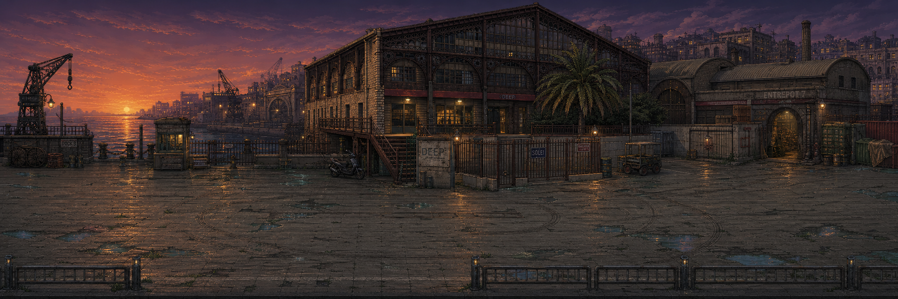
Bastonne
Đây là phần hướng dẫn tự nhiên. Người chơi điều khiển Solei để học di chuyển, né, đánh thường, combo, chưởng, phản đòn, cầm/nhặt/ném vật thể, và phối hợp cơ bản với đồng đội. Nếu Tulas có mặt trong đội từ đầu, anh có thể tạo bệ chất lỏng cho Solei nhảy qua vật cản, dựng khiên nước để chặn đạn tập, hoặc kéo một thùng kim loại đến vị trí cần ném vào công tắc. Qua lời thoại, người chơi biết Block là người của đội hoặc đồng minh thân thiết đã bị Jamerson bắt. Nhiệm vụ tới Bastonne vì vậy có hai mục tiêu: cứu Block và lấy bằng chứng về thí nghiệm của Jamerson.
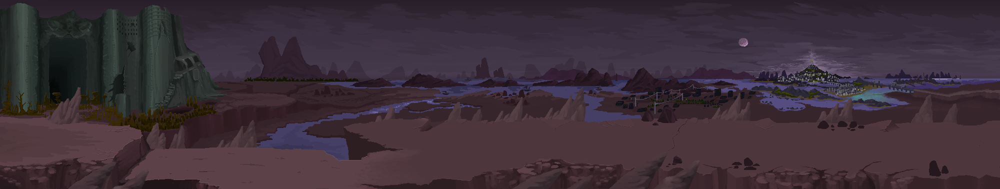
Bastonne
Henry, Deep, Solei và một nhóm nhỏ đột nhập Bastonne. Tulas có thể đi cùng để hỗ trợ, hoặc ở ngoài giữ tuyến rút lui, tùy quy mô đội hình mà thiết kế chọn. Trước đó, Henry chỉ mua được thông tin về dãy giam đặc biệt của Block, không mua được số phòng. Block biết điều này: nếu đêm giải cứu xảy ra và lính gác ngoài cửa gục xuống vì khí mê, anh phải gây tiếng động lớn để đội tìm đúng phòng.
Jamerson đoán được sẽ có người đến, nhưng không biết chính xác đêm nào. Hắn cho đổi phòng tù nhân mỗi ngày, rồi ra lệnh đánh Block trước ngày hành động để anh không còn sức đập cửa. Stranger bị lôi vào trận đòn chỉ vì cai ngục thấy hai người nói chuyện với nhau. Trước khi bị kéo về hai phòng biệt giam khác nhau, Block chỉ kịp thì thầm với Stranger rằng nếu thấy lính gác ngủ gục, hãy làm ồn thật lớn. Stranger không biết người này là ai, nhưng đó là lời nhờ vả đầu tiên trong Bastonne không giống mệnh lệnh.
Kế hoạch của đội vỡ trận khi nhà tù bị khóa khẩn cấp, khí mê tràn vào hành lang, cửa sắt tự động đóng, và hệ thống đọc mã số tù nhân qua loa.
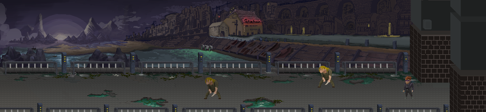
Outside_Marseille_city
Ở đây, góc nhìn chuyển sang Stranger. Anh tỉnh dậy trong phòng biệt giam của mình sau vài giờ bất tỉnh. Mùi máu khô vẫn nghẹn ở sống mũi, hơi thở bị kéo qua cổ họng đau rát, và ngoài khe cửa có khói trắng đặc tràn qua hành lang. Đây không phải lý do duy nhất anh kháng khí mê, nhưng nó là chi tiết đầu tiên người chơi hiểu được: cơ thể Stranger đã bị tra tấn và thí nghiệm đến mức phản ứng khác người thường.
Trong phòng có vài vật thể nhỏ để tương tác: đèn treo thấp, hai cốc sứ, một bàn kim loại nhẹ, giường sắt, và bình vệ sinh đêm. Người chơi phải đánh, nhặt hoặc ném chúng để tạo đủ tiếng động. Đánh vào giường có thể làm bật mảnh kim loại dùng như vũ khí tạm; ném vỡ bình vệ sinh có thể rơi ra một Stimpack cũ được tự động đưa vào phím tắt đầu tiên. Khi thanh máu hiện lên lần đầu, người chơi hiểu đây không còn là cảnh cắt: Stranger đang tự giành một cơ hội sống.
Loa thông báo đọc mã số tù nhân, cửa sắt tự động khóa lại, khí trắng tràn vào hành lang. Nhưng Stranger vẫn thở được. Anh không nhớ tên mình, chỉ nhớ những đoạn ánh sáng trắng, mùi sắt, và một giọng nói hỏi: "Nếu không ai gọi tên ngươi, ngươi có còn là người không?"
Tiếng động kéo Henry đến phá khóa. Cánh cửa mở ra, nhưng người đứng trước mặt ông không phải Block mà là một tù nhân lạ vẫn còn tỉnh. Hành lang vang lên tiếng giày dồn dập. Henry vội hỏi Stranger có biết ai tên Block không. Stranger có thể chỉ về phòng bên cạnh, hoặc im lặng chạy theo đội.
Trong lúc tìm đường thoát, Stranger có thể nhìn thấy Block bị kẹt sau một cửa thủy lực hoặc trong một buồng đang bị bơm khí. Lựa chọn lúc này rất đơn giản nhưng nặng tay: giúp Block trong cơn hỗn loạn, hay để đội tự tìm anh trong lúc bị bao vây.
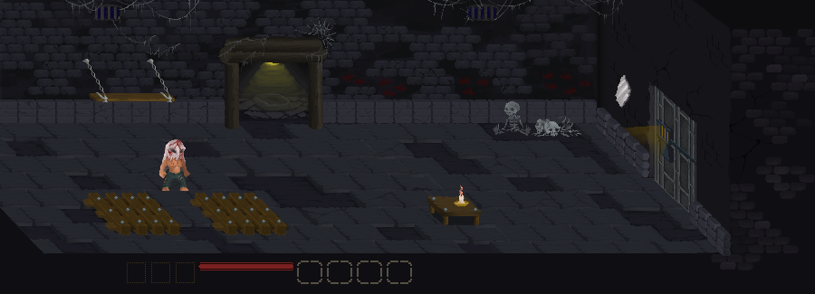
Stranger_prison
Nếu Stranger giúp Block, anh mở khóa cố định, làm chậm khí, hoặc phá một chốt cửa đủ để Block sống sót lâu hơn. Khi Solei và đội tới nơi, Block vẫn cần được kéo ra, nhưng thương tích nhẹ hơn. Block nhớ rằng Stranger đã không bỏ mặc mình.
Nếu Stranger không giúp Block, Solei và đội vẫn cứu được Block, nhưng phải đánh thêm một trận trong khu khí mê. Block bị thương nặng hơn, Stage 1 có thể bắt đầu với máu tối đa thấp hơn hoặc một bất lợi tạm thời. Henry và Solei cũng có lý do nghi Stranger hơn.
Stranger gặp đội Deep trong lúc cả hai bên đều tìm lối thoát. Henry để ý Stranger không bị thuốc mê ảnh hưởng, không bị máy đo sinh học nhận diện như tù nhân thông thường, và có phản xạ kỳ lạ trước các thiết bị của Jamerson. Henry không tin Stranger, nhưng anh cần Stranger.
Cả nhóm đụng đơn vị khóa khẩn cấp của Bastonne: khiên lớn, súng điện, drone khóa mục tiêu và một quản ngục trung thành với nhà Obsworth. Sau khi chiến thắng, cả nhóm thoát khỏi Bastonne, nhưng Jamerson đã biết có một người sống sót ngoài dữ liệu. Con Mắt trong cánh tay ông mở ra và thì thầm: "Kẻ không có tên có thể đi qua những cánh cửa mà người có tên không đi được."
Stage 1 dùng một số trạng thái nhỏ để nối truyện với gameplay, không tạo nhánh chính tuyến khổng lồ. BlockHelped ghi việc Ghost/Stranger có giúp Block trong Bastonne hay không. BlockInjuryState quyết định Block ổn định, bị thương, hay cần bảo vệ thêm ở đầu Stage 1. Heat là mức truy đuổi đô thị. LaundelTrust là lòng tin của chợ ngầm. GrogerClues ghi số dấu vết về GROGER. SubmarinePowerRoute ghi việc nhóm giữ điện ổn định hay phá máy phát để vào tuyến tàu ngầm nguy hiểm hơn.
Sau Bastonne, cả nhóm cắt đuôi xe truy đuổi bằng cách giấu xe trong một gara đã chuẩn bị trước ở rìa khu công nghiệp cũ (hoặc quay về cơ sở nhỏ của đội Deep lúc đầu). Nơi này nằm trên tuyến đường phụ nối các kho hàng cảng với những khu phố hẹp kiểu Noailles/Capucins: đủ gần trung tâm để có người qua lại, đủ tối để biến mất nếu biết đúng cửa sau. Henry kiểm tra radio, Deep nhìn lại vết thương của Block, và Solei cố hiểu vì sao họ phải giữ Ghost ở lại dù chưa thể tin anh hoàn toàn.
Từ gara, Henry dẫn cả nhóm đi bộ qua lối sau đến Armorlite để tìm hiểu thông tin. Armorlite là một quán rượu nhỏ trong mạng lưới các điểm nghỉ của thế giới ngầm: đèn tím thấp, nhạc jazz cũ, quầy gỗ hẹp, một bộ sofa sát tường cho người bị thương, và Jacques, bartender đứng tuổi có đôi mắt xanh gần như phát sáng trong bóng tối. Jacques ít nói nhưng nhớ mọi tuyến cống, bến cảng, cửa kiểm soát và tên người gác nào đã bị Jamerson mua. Vì vậy Henry tin ông hơn nhiều người có quân hàm.
Tại đây, nhóm bàn kế hoạch ra bến cảng: nghỉ chưa đến hai giờ, dùng xe đổi biển số ở gara B, men theo tuyến kho hàng xuống cảng, rồi lên phà trước bình minh để rời Marseille. Block bị thương nên nếu được chơi, máu tối đa của anh chỉ còn 75% khi BlockInjuryState chưa ổn định. Jacques đưa Stimpack và cảnh báo rằng tất cả trạm kiểm soát đang tìm "một tù nhân không ngủ".
Solei vẫn bực vì cả nhóm phải kéo Ghost theo trong khi anh đang bị truy nã. Deep không kết luận, nhưng đặt câu hỏi đúng hơn: nếu Ghost không có gì đặc biệt, tại sao Jamerson lại tìm kiếm, nhốt anh, rồi vẫn không có hồ sơ nào khớp với anh? Nếu BlockHelped đúng, Block là người đầu tiên cắt ngang sự nghi ngờ: người lạ này có cơ hội chạy một mình nhưng vẫn quay lại. Nếu không, không khí ở Armorlite lạnh hơn; không ai kết án Ghost/Stranger, nhưng cũng chưa ai đứng ra bảo vệ anh rõ ràng.
Nếu lòng tin giữa Ghost và đội không được cải thiện, điều đó có thể thành một biến gameplay nhỏ: khi Ghost nhặt vật phẩm, anh có khả năng giấu bớt, làm rơi, hoặc giảm hiệu suất thu nhặt của cả nhóm.
Bạo lực ở Armorlite không phải ngẫu nhiên. Băng đua xe, băng thuốc phiện và các nhóm giang hồ đường phố đã có thù với đội Deep từ trước vì nhóm từng phá một tuyến vận chuyển người, thuốc và xăng của chúng. Sau Bastonne, cảnh sát mật treo thưởng trong thế giới ngầm và ra lệnh cho chúng canh các lối ra thành phố. Một nhóm đánh hơi được gara cũ, lần đến Armorlite, rồi bước vào quán như thể đến thu nợ Jacques.
Trận chiến bắt đầu khi tay chân của chúng đập cửa, dọa Jacques, rồi dùng chai rượu, ghế gỗ và bàn bi-da làm vũ khí. Nhân vật do người chơi điều khiển có thể kịp xin lỗi Jacques trước khi ném chiếc cốc hoặc chai đang cầm thẳng vào kẻ đầu tiên. Ba tên bị văng ra phố; một tên gục, hai tên còn nửa máu. Từ đây, trận đánh kéo ra con phố hẹp và khu cảng dịch vụ phía sau quán. Kẻ địch chạy xe máy từ ngoài màn hình vào, có mũi tên cảnh báo hướng lao, tăng tốc từ chậm đến nhanh, và có thể bị đánh ngã bằng đòn nhảy, vũ khí ném, hoặc phản đòn đúng nhịp.
marsile_background_driver
Boss là thủ lĩnh băng đua xe, cưỡi một chiếc xe máy lớn. Pha đầu dùng những cú lao ngang, quay xe, vạch lửa và hai đàn em chở người cầm vũ khí sau lưng. Khi bị đánh ngã, hắn chỉ nằm mở một cửa sổ sát thương ngắn rồi lại leo lên xe. Dưới 50% máu, hắn rút thanh kiếm gia truyền của băng, không còn dễ bị hất khỏi xe, gọi đàn em chạy cắt màn hình, và tạo đường lửa bằng mũi kiếm kéo trên mặt đường. Khi phải đi bộ, hắn dùng chém dọc, chém ngang, chém hất để chống lặp đòn nhảy đánh, rồi lao nhanh áp sát.
Cuối màn, cả nhóm phát hiện gara an toàn đã bị lộ. Henry chuyển sang phương án B: đi xuống cống ngầm.
Đường cống dưới Marseille không chỉ dẫn nước thải. Nó là tầng ruột của thành phố, nơi những dự án metro, đường hầm bảo trì và kênh vận chuyển bị bỏ dở trở thành nhà cửa, chợ đen, kho hàng, và trạm trung chuyển người nhập cư. Đoạn đầu hẹp, lát gạch và tối; khoảng một phần ba lối đi bị nước che, làm nhân vật chậm lại nhưng cũng khiến quái dưới nước dễ bị choáng nặng nếu bị đánh trúng khi còn đang bơi.
Sau đoạn bảo trì chỉ đủ rộng cho hai người đi ngang, không gian mở ra thành Laundel, một thành phố ngầm dựng trong ga metro đầu tiên chưa từng hoàn thành. Biểu tượng của nó là sư tử đuôi cá: nửa của Marseille trên mặt đất, nửa của những người bị đẩy xuống nước bẩn. Nền thấp là đường ray cũ; nền cao là bến ga, kiosk, quầy thuốc, quầy vũ khí, tiệm đồ ăn và những phòng ngủ dựng bằng tôn. Ở đây có ba lực lượng chính:
Áo Đen: bán vũ khí cận chiến, thuốc tăng sức, và làm việc ngầm cho người của Jamerson.
Xanh Dương: bán hồi máu, vũ khí tầm xa, và che chở nhiều người nhập cư.
Áo Ghi: buôn tin, đưa đường, đổi token, không đủ mạnh để giữ chợ nhưng đủ lâu đời để biết mọi cửa bí mật.
Người chơi có thể mua bằng Token hoặc phá cửa hàng để lấy nhiều đồ hơn. Nhưng lựa chọn này không chỉ là kinh tế. Nếu mua và tôn trọng luật chợ, nhóm được dẫn đường, có thể mở vật phẩm độc quyền, điểm kỹ năng, hoặc vũ khí hiếm từ người tin mình. Nếu phá, nhóm có lợi tức thì nhưng LaundelTrust giảm, cửa hàng xung quanh gọi thêm quân, dân khóa cửa, và về sau nhóm bị đưa vào tuyến đường nguy hiểm hơn. Kẻ địch cũng có thể chạy vào cửa hàng để mua hiệu ứng tăng sức, buộc người chơi quyết định đánh chúng trước hay giữ vị trí.
Áo Đen đến "mời" nhóm gặp thủ lĩnh ngay khi họ bước vào Laundel, nhưng số người được cử đi quá đông cho một lời mời. Cuộc nói chuyện chuyển thành đánh nhau ở rìa chợ, rơi ra những Token đầu tiên và dạy luật mua/bán. Sau đó một chủ cửa hàng Xanh Dương gọi nhóm lại, bán vật phẩm hồi máu hoặc vũ khí tầm xa, và giải thích luật không rút vũ khí trong khu chợ nếu không muốn biến cả màn thành vùng giao chiến.
Nếu người chơi giữ quan hệ tốt và nói chuyện đủ, Áo Ghi kể về graffiti hình quái vật trong cống: GROGER, một thứ ăn thịt người được cả hai phe dùng làm câu chuyện dọa trẻ con. GrogerClues tăng khi người chơi tìm thấy các hình vẽ nằm ở ngõ phụ, phòng ẩn hoặc sau kiosk cũ. Nếu tìm đủ dấu vết và hỏi ông già trong chòi nhỏ trước cửa cống cuối, người chơi có thể mở boss ẩn GROGER. Nếu LaundelTrust thấp vì cướp cửa hàng, GROGER không còn là một cuộc điều tra tự nguyện nữa, mà có thể thành cái bẫy người khác chỉ cho nhóm để lấy lòng chính quyền.
Ở tầng 0 của Laundel, quán bar giải trí biến thành đấu trường. Boss phụ thuộc vào quan hệ với các phe. Nếu giữ lời hứa với Xanh Dương, cả nhóm đánh thủ lĩnh Áo Đen. Nếu phản bội họ, người nhập cư sợ hãi chính quyền sẽ dẫn nhóm vào bẫy, và GROGER có thể trở thành hình phạt.
Kết thúc màn, phe còn tin nhóm chỉ cho họ một đường hầm ra bến cảng. Henry nhận ra một điều đáng lo: Jamerson không chỉ có cảnh sát. Ông có mắt ở cả chợ đen, cống ngầm, và những nơi thành phố giả vờ không nhìn thấy.
Cống chính dẫn ra biển rộng hơn, nước sâu hơn, và quái vật nhiều hơn. Nó là tuyến gom của nhiều đường nhỏ, nên càng đi sâu thì phần nền khô càng ít, dòng chảy càng mạnh, và những bóng dưới nước càng khó đọc. Quái xuất hiện khi còn đang bơi sẽ không tấn công ngay; nếu người chơi chủ động đánh lúc chúng còn dưới nước, chúng nhận sát thương lớn và bị choáng lâu hơn, nhưng nếu để chúng nhảy lên bờ thì chúng mất bất lợi đó và bắt đầu phối hợp theo đàn.
Một số con đầu đàn có thể tăng sức cho đàn nhỏ; khi bị hạ, đàn nhỏ bị chậm và dễ choáng. Những phòng ẩn cho thấy Marseille đã từng có những đợt sơ tán thất bại: vali mốc meo, giấy tờ nhập thành, đồ chơi trẻ em, bản đồ cũ ghi những lối đi đã bị bít kín, và vài căn phòng trú chân của người từng cố vào Laundel mà không bao giờ đến nơi. Ở một số phòng, tàn dư Áo Đen hoặc người tuyệt vọng có thể phục kích nhóm; phần còn lại là quái cống và các dấu vết GROGER.
Sau khi ra khỏi cống, người chơi có một đoạn đi bộ khoảng 30 giây không giao chiến. Hoàng hôn trải dài trên bến cảng. Nhạc nhẹ hơn. Cả nhóm nói về việc nếu thoát được Marseille, họ có thể đến phía đông lánh nạn, sống một thời gian không bị gọi là tội phạm. Solei đùa nửa câu, Deep nói rằng tự do không phải một nơi trên bản đồ, Henry im lặng lâu hơn bình thường, còn Ghost chỉ nhìn mặt trời.
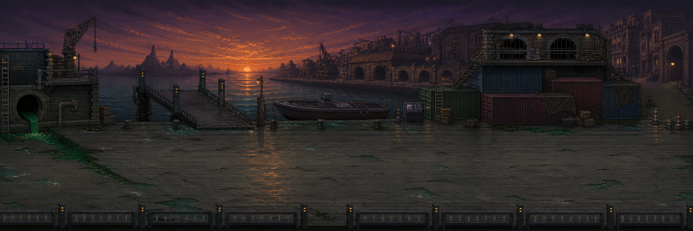
Harbor_Sunset_Battle_Map
Tại điểm hẹn, chiếc thuyền trống rỗng. Khi cả nhóm đi đến giữa màn, cảnh sát mật phục kích. Bến cảng mở rộng thành một chiến trường nhiều điểm: cầu nâng, container, bảng điều khiển thuyền, lính bắn tỉa trên cao, và quái cống còn đuổi theo từ phía sau. Đây là nơi COMMAND bắt đầu có cảm giác gần một trận chiến thuật thời gian thực thu nhỏ: Block giữ tuyến cầu, Deep phá khóa container hoặc giáp máy, Henry đánh dấu lính bắn tỉa/thủ lĩnh đàn, Solei chạy cắt mục tiêu yếu, hoặc nhảy xuống nước phá vòng vây đằng sau. Người chơi vẫn đánh trực tiếp, nhưng phải chia việc để không bị bao vây.
Có lính bắn tỉa với tia ngắm laser, buộc người chơi di chuyển liên tục và không đứng yên dồn combo quá lâu. Lính cận chiến dùng dao và súng ngắn; mỗi lần chuyển sang bắn đều có tín hiệu hình ảnh và âm thanh trước khi rút súng. Heat càng cao từ Armorlite/Laundel thì viện binh ở bến cảng càng đến sớm.
Boss là Marius Vane, cánh tay phải của Jamerson trong bộ máy mật. Marius không tin vào Thần Sơ Sinh, cũng không yêu mến Jamerson. Gã chỉ phục vụ vì Marseille cần những kẻ như Jamerson để giữ thành phố không vỡ tung. Với Marius, người nhập cư, tù nhân, và những kẻ bị bệnh đều là chi phí vận hành.
Sau trận chiến, nhóm tra hỏi tên lính cuối cùng. Họ biết một đồng minh của Henry đã bị bắt đưa xuống cơ sở bí mật ngoài khơi: một tàu ngầm nghiên cứu. Chiếc thuyền của cảnh sát mật có chế độ tự lái đến đó. Kế hoạch trốn khỏi Marseille bị thay bằng một quyết định khác: nếu bỏ đi bây giờ, những bằng chứng và người bị bắt sẽ chìm xuống biển.
Tàu ngầm nằm dưới một vùng nước đen gần bến cảng, được ngụy trang như trạm đo áp lực. Bên trong là phòng thí nghiệm nổi, nơi Jamerson đưa những thí nghiệm quá nguy hiểm ra khỏi đất liền.
Người chơi thấy những bình chứa cơ thể lai, tù nhân bị nối vào máy móc, và những mẫu tế bào mang ký hiệu Heniana. Jamerson không chỉ tìm thuốc. Ông đang thử ghép cấu trúc sinh học của Thần Sơ Sinh vào cơ thể con người để tạo ra một bình chứa có thể sống sót qua căn bệnh.
Tuyến tàu ngầm có hai cách tiến. Cách thường là dùng ba trạm điều khiển nằm ở phòng trưởng lính gác, kho dữ liệu thí nghiệm và phòng kiểm soát áp suất để mở lò phản ứng trung tâm. Cách khó là phá hai máy phát phụ. Khi máy phát bị phá, một phần tàu chuyển sang ánh sáng đỏ khẩn cấp; lính gác ở những khu mất điện bị vật thí nghiệm thất bại giết sạch, còn quái được tăng tốc độ và sát thương vì chúng sợ ánh sáng thường nhưng điên loạn trong bóng tối. SubmarinePowerRoute không đổi kết thúc chính, nhưng đổi độ khó, vật phẩm rơi, bằng chứng còn lại và giọng kể về cái giá của hành động phá hoại.
shemale_chamber
Địa hình tàu ngầm cũng trở thành vũ khí. Nhiều phòng có đường ống khí và vách kim loại cong; kẻ địch bị đánh bay mạnh vào tường có thể bật lại như một vật thể va chạm, gây sát thương cho mục tiêu đầu tiên va phải. Hiệu ứng này chỉ xảy ra theo nhịp giới hạn để tránh biến đấu trường thành hỗn loạn, nhưng đủ để người chơi chủ động dùng Deep/Block hoặc vật ném mạnh trong không gian hẹp.
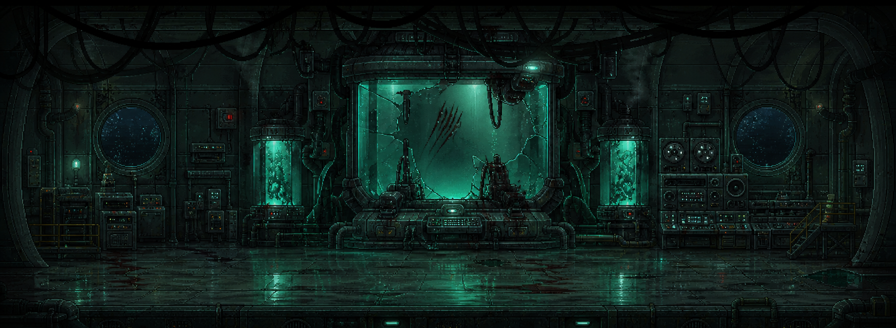
shemale_chamber_AI
Boss chính là SheMal, một "thất bại hoàn hảo". SheMal từng là một tù nhân nữ vô danh, bị sử dụng làm nền cho cơ thể nhân tạo. Cô không phải thần, không phải người theo nghĩa cũ, nhưng cũng không phải quái vật vô tri. Trong những khoảnh khắc ngắn, cô lặp lại những câu của Heniana mà Jamerson bắt máy móc phát bên cạnh buồng ngủ đông: "Cha ơi, đừng đóng cửa."
SheMal chiến đấu thiên về cận chiến hơn là một quái vật đứng xa phóng ảo giác. Cô cao và nặng ngang Deep, di chuyển như một võ sĩ bị ép vào cơ thể sai, hai tay mọc móng vuốt dài đủ để cào rách kim loại mỏng. Những lúc Con Mắt chưa chiếm trọn, cô đánh bằng bản năng: áp sát, khóa tay, đập vào tường, phản đòn khi người chơi tham combo. Khi Con Mắt mở ra, các ảo ảnh Heniana/Jamerson mới trộn vào nhịp đánh, khiến người chơi khó biết cú chém nào là thật.
SheMal liên kết trực tiếp với Con Mắt. Trên cơ thể cô có dấu vết của một nghi thức phương Đông: bản đồ đến bán đảo Sakuri, ký hiệu Cái Tai, và ghi chú về khả năng "nghe tiếng bệnh trong dòng máu của Heniana khi cô đang ngủ đông".
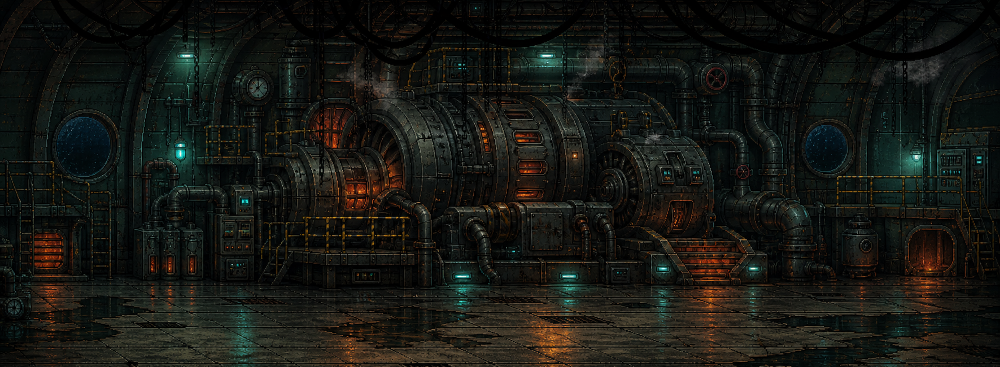
submarine_backup_generator_b_engine_heat_room
Nếu SubmarinePowerRoute = Sabotage, tàu ngầm chuyển sang tuyến khó hơn. Quái và SheMal nguy hiểm hơn, nhưng rơi vật phẩm và kỹ năng có phẩm chất cao hơn. Về mặt truyện, điều này thể hiện nhóm chọn phá hủy hạ tầng để ngăn thí nghiệm, chấp nhận tự đẩy mình vào nguy cơ lớn hơn.
Khi tàu ngầm sắp nổ, Jamerson nói qua loa:
"Các ngươi phá hủy thứ duy nhất có thể cứu con bé. Các ngươi gọi ta là quái vật, nhưng ta ít nhất còn biết mình đang chiến đấu vì ai."
Cả nhóm thấy bóng Jamerson sau lớp kính trước khi vụ nổ nuốt phòng điều khiển. Họ tin ông đã chết.
Nhưng Con Mắt đã cảnh báo Jamerson sớm hơn vài giây. Thứ bị thiêu trong phòng là một thân xác thế mạng được nuôi từ mô thí nghiệm. Jamerson thật sự thoát bằng ống phóng khẩn cấp, mang theo máu SheMal và bản đồ đến Sakuri. Khi biển bốc cháy phía sau, ông ôm hộp dữ liệu vào ngực và thì thầm với Con Mắt: "Nếu Con Mắt không đủ, ta sẽ tìm Cái Tai."
Kết thúc Stage 1, nhóm tìm thấy ảnh chân dung Heniana, hồ sơ ngủ đông, và bằng chứng rằng có một đứa trẻ vô tội đang nằm giữa mọi tội ác của Jamerson. Deep muốn truy đuổi Jamerson. Henry muốn đưa bằng chứng ra ngoài. Solei nói nếu Heniana còn sống, cô bé không đáng bị bỏ lại trong tay cha mình.
Họ lên đường về phía đông.
#Stage 2 - Sakuri: nơi niềm tin nghe thấy mọi lời nói dối
Nhóm cập bến một làng chài nghèo trên bán đảo phía đông. Nơi này từng giàu nhờ buôn lậu và đưa người di cư đến Marseille, nhưng bệnh dịch làm dòng người cạn dần. Bến cảng hoang phế, nhà gỗ mục, thuyền nằm im như xương cá.
Làng thuộc quyền một lãnh chúa cực giàu ở thủ phủ nội địa. Quyền lực vùng này nằm trong tay nhiều gia tộc, nhưng tất cả đều phải cúi đầu trước Thánh Nữ Sakuri, người duy nhất có thể sử dụng Cái Tai mà không chết hoặc phát điên.
Cái Tai nghe được tâm tư, âm mưu, tiếng động từ xa, và cả những âm thanh từ thời viễn cổ. Người dân tin Sakuri là thánh nhân, còn Sakuri thì bị nhốt từ nhỏ dưới tầng hầm sâu nhất của cung điện, bị ép ghé tai vào đất để "nghe tiếng của thần".
Sakuri không sinh ra để làm hại người khác. Cô là một đứa trẻ bị biến thành công cụ, rồi lớn lên trong tiếng nói dối của người lớn và tiếng cầu cứu không bao giờ dứt. Càng về sau, cơ thể cô càng lệch khỏi con người bình thường: Cái Tai bắt cô nghe nhịp máu, mùi bệnh, lời thề trong huyết thống, và những dòng máu bị trộn lẫn quanh Heniana/Heni. Vì vậy Sakuri có những cơn khát máu giống một lời nguyền ma cà rồng hơn là thói tàn bạo. Cô không luôn kiểm soát được mình.
Solei bắt đầu nghe những ngôn ngữ, phong tục, và bài hát mẹ cô từng hát. Nhưng thay vì thấy mình trở về nhà, cô thấy một xã hội cũng biết chia tầng, loại trừ, và dùng dòng máu để quyết định ai được sống sang hơn.
#Note khai thác sau: Sakura điềm đạm và người tiền nhiệm hóa điên
Nếu đổi Sakura theo concept mới điềm đạm hơn, có thể tách hình ảnh Sakuri/Sakura hiện tại thành hai lớp nhân vật thay vì dồn toàn bộ vào một boss. Sakura hiện tại vẫn là người đang giữ Cái Tai, nhưng cô chịu đựng nó bằng sự tĩnh lặng, kỷ luật và khả năng lắng nghe rất sâu. Cô không còn là trung tâm của một trận đánh máu lửa. Khi nhóm gặp cô, nhịp chơi nên nghiêng về đối thoại, đọc cảm xúc, phá hiểu lầm, né những đợt cộng hưởng âm thanh, hoặc giúp cô tạm khóa bớt tiếng nói trong đầu.
Phần animation Sakura đang có, với chất sexy, dữ dội, khát máu và ma cà rồng, có thể chuyển sang chị em của Sakura hoặc người tiền nhiệm từng giữ Cái Tai trước cô. Người này là bằng chứng sống cho việc không ai thật sự chịu nổi Cái Tai quá lâu: nghe quá nhiều lời nói dối, âm mưu, tiếng bệnh, lời cầu cứu và ký ức cổ đại đến mức phát điên. Các gia tộc có thể đã giấu sự tồn tại của người tiền nhiệm, gọi đó là "thánh nữ thất bại", rồi nhốt hoặc yểm cô dưới đền ngầm để bảo vệ hình tượng Sakura hiện tại.
Nếu dùng hướng này, boss chính của Stage 2 nên là người tiền nhiệm/chị em hóa điên, không phải Sakura hiện tại. Trận đánh vẫn giữ được năng lượng hung bạo, áp sát, móng vuốt, khát máu và motif ma cà rồng, nhưng ý nghĩa đổi thành: người chơi không đánh bại "Sakura", mà đánh bại một tương lai mà Sakura có thể trở thành nếu tiếp tục bị dùng như công cụ. Điều này làm Sakura hiện tại dễ đồng cảm hơn với Solei: cả hai đều bị dòng máu, quê hương và kỳ vọng của người khác định nghĩa, nhưng vẫn muốn tự chọn mình là ai.
Sau trận, Sakura có thể nói chuyện với Solei thay vì gục xuống như một boss bị hạ. Cô nghe được nỗi lạc lõng của Solei mà không phán xét, còn Solei lần đầu thấy một người ở Sakuri không cố hỏi cô thuộc về phe nào. Đây có thể là mấu chốt cảm xúc của Stage 2: Solei không tìm được một quê hương hoàn hảo, nhưng gặp một người hiểu cảm giác bị biến thành biểu tượng cho thứ mình không chọn.
Trong làng, nhóm gặp một bé gái bán thuốc, bán cá khô, và những vật nhỏ cho người đi đường. Mặt cô bé giống Heniana đến mức Ghost nhận ra trước cả khi Henry lấy ảnh đối chiếu.
Người dân gọi cô bé là Heni. Cha cô, một người đàn ông hiền lành, thật ra là điệp viên của Jamerson. Ông ghi chép sức khỏe của Heni mỗi ngày, gửi mẫu máu qua các thương nhân, và cho cô sống giữa bệnh dịch để xem cơ thể nhân bản chịu đựng được đến đâu.
Heni không biết mình là thí nghiệm. Cô chỉ biết mình hay mơ thấy một căn phòng trắng, một người phụ nữ khóc sau lớp kính, và một người cha mà cô chưa từng gặp.
Màn này cho người chơi thấy mặt người của bệnh dịch: trẻ em bán đồ để mua thuốc cho cha mẹ, ngư dân mất việc, người bệnh bị buộc phải ở lại ngoài rìa làng để không làm xấu mặt cảng.
Nhóm đưa Heni ra khỏi làng sau khi điệp viên bị lộ. Trên đường, họ đi qua các trại cách ly, nơi người bệnh bị đánh dấu bằng dây vải và phân loại theo "giá trị lao động". Những người còn làm việc được bị đưa vào kho, người quá yếu bị bỏ lại gần đền thiêng.
Họ phát hiện lý do Heniana được đưa đến Sakuri: Jamerson tin Cái Tai có thể "nghe" âm thanh của căn bệnh trong máu Heniana và tìm ra tần số để vô hiệu hóa nó. Cái Tai cũng là mảnh tiếp theo mà Con Mắt muốn. Với Jamerson, hai mục tiêu này đã nhập làm một.
Solei gặp những người từ dòng tộc mẹ mình, nhưng họ không đón cô bằng vòng tay mở rộng. Họ nghi cô là người Marseille, là người ngoài, là bằng chứng của một thế hệ bỏ xứ đi. Solei tức giận, nhưng cũng bắt đầu hiểu cảm giác bị đặt nhãn không bao giờ chỉ thuộc về riêng mình.
Để tiếp cận thủ phủ mà không bị phát hiện bởi lực lượng tuần tra ở cổng chính, nhóm phải lựa chọn con đường vòng đầy hiểm trở xuyên qua địa hình tự nhiên của bán đảo. Hành trình leo núi mở ra những cảnh sắc thiên nhiên phương Đông vừa hùng vĩ vừa u tịch: những dãy núi trập trùng ẩn hiện trong sương sớm, các rặng sakura cổ thụ rụng cánh hoa hồng nhạt xuống dòng nước xiết, và những lối đi men theo vách đá dựng đứng. Phía xa là một thác nước trắng xóa đổ thẳng xuống vực sâu. Mép đá ẩm ướt trơn trượt cùng những cây cầu dây cũ kỹ bắc qua sông khiến mỗi trận chiến đều mang tính sinh tử, nơi kẻ địch có thể đẩy ngã nhân vật xuống vực sâu trong chớp mắt.
Tại cây cầu đá dẫn qua dòng sông xiết ngay sát chân thác nước lớn, nhóm đối mặt với Ryozan.
Ban đầu, Ryozan không xuất hiện dưới dạng một chiến binh. Thứ trườn dưới mặt nước cuồn cuộn giống như một thực thể bóng tối khổng lồ có hình dáng của một con nòng nọc đen, đại diện cho lời thề bảo hộ đã bị bẻ cong thành một lời nguyền giam giữ. Nó điên cuồng tấn công bất cứ ai bước lên cầu. Để đánh bại nó, người chơi phải tìm cách phá hủy ba cột yểm phong ấn nằm ở các mỏm đá xung quanh dòng thác.
Khi các cột yểm dưới cầu bị phá, hình dạng thật của Ryozan được giải phóng: một vị tướng quân uy nghiêm trong bộ giáp đỏ rực, tay cầm đại đao chắn ngang giữa tiếng thác gầm. Ryozan không phải là kẻ phản diện phục tùng Sakuri. Trong quá khứ, ông từng được giao trọng trách bảo vệ cô từ khi còn nhỏ. Khác với những kẻ cầm quyền xem cô như một công cụ tiên tri, Ryozan nhìn thấy ở Sakuri một đứa trẻ đáng thương bị giam lỏng. Khi ông cố gắng lên kế hoạch đưa cô trốn thoát khỏi cung điện để chấm dứt sự hành hạ của Cái Tai, các gia tộc đã hãm hại ông, vu khống ông tội mưu phản.
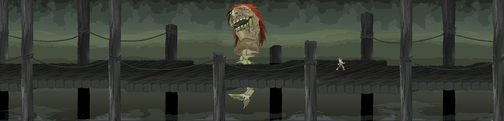
bridge_2_r_4
Đau đớn hơn, Sakuri – khi đó đang quay cuồng trong những tiếng nói hỗn loạn của Cái Tai – chỉ nghe thấy những mảnh ký ức vụn vặt bị bóp méo, khiến cô tin rằng Ryozan muốn phản bội mình. Ryozan bị hành quyết, còn lời thề trung thành của ông bị các pháp sư yểm vào cây cầu đá, biến linh hồn ông thành kẻ canh giữ chiếc lồng giam cầm Sakuri mãi mãi.
Sau trận đấu, nếu người chơi chọn cách phá giải phong ấn (purify) thay vì tiêu diệt Ryozan một cách tàn nhẫn, vong hồn vị tướng quân sẽ để lại một mảnh ký ức dịu êm: ngày nhỏ Sakuri từng hỏi ông bầu trời ngoài cung điện có âm thanh thế nào. Ryozan đã trả lời rằng: "Trên đỉnh núi tuyết, khi vạn vật chìm vào im lặng, cháu có thể nghe thấy cả tiếng thở của chính mình." Ký ức này chính là chiếc chìa khóa cảm xúc quan trọng để người chơi xoa dịu tâm trí Sakuri trong trận chiến cuối cùng ở Stage 2.
bridge 4 complete
Sau khi vượt qua cây cầu đá, con đường dẫn nhóm vào một rừng tre bạt ngàn trải dài trên sườn núi dốc.
bambooforest2bambooforest3
Tại đây, gió thổi mạnh làm những thân tre va vào nhau vang lên âm thanh xào xạc như những tiếng thì thầm cấm kỵ. Rừng tre này là nơi cư ngụ của một bộ tộc thổ dân lâu đời với các phong tục cổ xưa và những chiếc mặt nạ gỗ truyền thống đầy bí ẩn. Nhóm của Deep phải trải qua một trận chiến du kích khốc liệt giữa những hàng tre dày đặc, tận dụng địa hình để ẩn nấp và đối phó với những đòn tấn công bất ngờ từ các chiến binh bộ tộc ẩn mình trong bóng lá.
Thủ phủ đối lập hoàn toàn với làng chài. Chợ trung tâm đầy lụa, gia vị, vàng, rượu, và những món ăn xa xỉ. Lãnh chúa béo phì, thích tiệc tùng, tin hoàn toàn vào những gì Sakuri "nghe" được. Mỗi gia tộc cúng tiền cho đền thờ dưới cung điện để đổi lại lời tiên tri có lợi cho mình.
Nhóm nghe câu chuyện chính thức về Tướng Ryozan: một mãnh tướng từng đề xuất cải cách quân đội, giảm phụ thuộc vào thần linh, rồi âm mưu cướp quyền lãnh chúa. Nhưng sau những gì xảy ra ở cây cầu, câu chuyện đó không còn sạch sẽ. Bản ghi trong cung cho thấy Ryozan từng xin giảm thời lượng Sakuri phải nghe Cái Tai, từng yêu cầu không dùng cô để moi bí mật gia tộc, và từng bị coi là nguy hiểm vì ông có đủ quân để bảo vệ cô khỏi chính cung điện.
Ryozan bị xử chém đầu thay vì treo cổ. Lời tuyên án nói đó là ý của Sakuri, nhưng hồ sơ cũ cho thấy các gia tộc đã ép cô xác nhận một lời tiên tri trong lúc cô mất kiểm soát. Sau đó, xác, đầu, và áo giáp đỏ của Ryozan bị đưa xuống hầm để yểm vào tuyến phòng thủ quanh núi. Sakuri không hẳn muốn ông chết; cô chỉ không còn phân biệt được ai đang cứu mình và ai đang dùng mình.
Trong chợ, Heni nhìn thấy trẻ em nhà giàu chơi với búp bê có mặt giống mình. Đó là hàng lưu niệm được làm theo "đứa trẻ ngủ đông mà thành phố phương tây gửi đến xin thần chữa". Heni lần đầu hiểu mình không phải chỉ là một bé gái nghèo. Cô là một bản sao bị bán thành biểu tượng.
J_room_sakuri
Trong cung điện, nhóm gặp DeceptiveDoorPuzzle: một dãy cửa được sơn bằng những màu tưởng như rất rõ ràng với người bình thường, nhưng thật ra màu là mồi nhử. Đáp án đúng phải chọn theo cách một người mù màu hoặc người nhìn lệch màu phân biệt: độ sáng, biểu tượng phụ, vân gỗ, vết mòn dưới ngưỡng cửa, và thứ tự họa tiết. Cung điện dùng puzzle này để loại người ngoài và người hầu "không đủ huyết thống", nhưng chính logic đó cũng cho Solei một cách nhìn khác để phá khóa.
Cả nhóm đột nhập cung điện, vượt qua những cạm bẫy cửa lừa và đi xuống ngôi đền cổ nằm sâu dưới lòng đất bằng một hệ thống thang máy cũ kỹ cùng những bậc thang đá rêu phong. Càng xuống sâu, âm thanh xung quanh càng biến dạng kỳ dị dưới tác động từ sức mạnh của Cái Tai: người chơi sẽ nghe thấy tiếng sóng biển rì rào vọng lại từ khoảng không vô định, tiếng thì thầm rùng rợn của những vong hồn đã khuất trong hầm mộ, và cả tiếng ý nghĩ của các đồng đội bị lặp lại vang vọng bên tai như những lời chế giễu.
Tuy nhiên, đền ngầm không phải là điểm kết thúc, mà là một lối đi ẩn giấu dẫn xuyên qua lòng núi. Khi đi hết hành lang sâu nhất của đền thờ, một cánh cổng đá mở ra phía sau dẫn thẳng tới chân của ngọn núi thiêng được bao bọc bởi kết giới cổ xưa. Nơi đây mở ra một thế giới biệt lập, huyền ảo và tách biệt hoàn toàn với thế giới bên ngoài.
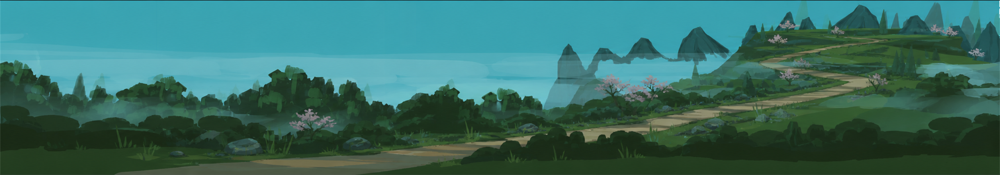
start_moutain
Hành trình leo núi bắt đầu từ đây. Ở những sườn núi thấp dưới chân ngọn núi, cảnh sắc tràn ngập vẻ thanh bình với cỏ cây tươi xanh và hoa anh đào nở rộ tựa chốn bồng lai. Nhưng càng lên cao, màu sắc xanh lục bảo lại càng chuyển dần sang sắc lam đậm cô tịch và lạnh lẽo; không gian huyền ảo ban đầu giờ bao trùm một màu sắc huyền bí, âm u.
Nhóm phải liên tục leo lên đỉnh núi thiêng cao vút – nơi Sakuri ngự trị – bằng cách vượt qua các chướng ngại vật địa hình hiểm trở và những chiếc cổng Torii cổ kính, đổ nát chắn ngang các lối đi hẹp.
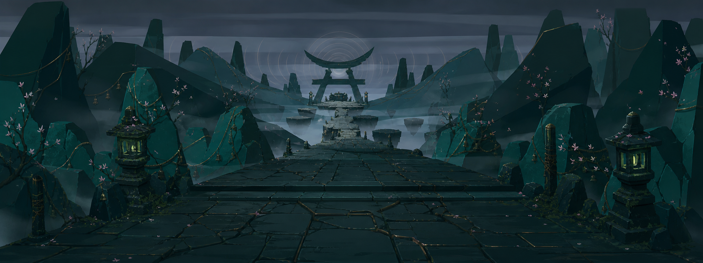
gateplatform
Điểm đến cuối cùng là một thánh địa nằm chênh vênh giữa đỉnh núi tuyết. Tại đây, những cành sakura khẳng khiu mọc xuyên qua các khe đá nứt nẻ, các mảng đất lơ lửng giữa không trung quanh miệng vực sâu thẳm dưới tác động của một nguồn năng lượng vô hình, và gió mang theo tiếng chuông ngân vọng từ mọi hướng tạo nên bầu không khí vừa thiêng liêng vừa áp bách.
sakuri final_conceptsakuri final_1_phase_3
Sakuri ngồi cô độc trong một điện thờ đá lớn mở toang ra bốn phía giữa đỉnh núi, đôi mắt bịt bằng dải vải trắng truyền thống. Cô không mù, nhưng đôi mắt bị niêm phong từ nhỏ để cô tập trung mọi giác quan và "nhìn" thế giới bằng đôi tai. Mảnh bảo vật Cái Tai được đặt trên chiếc khung vàng tinh xảo ngay phía sau cô, kết nối trực tiếp với mặt đất và hệ thần kinh của cô qua các sợi kim loại mỏng mảnh như dây thần kinh.
Sakuri không ác vì sinh ra đã ác. Cô chỉ là một đứa trẻ tội nghiệp bị tước đoạt tuổi thơ, bị biến thành công cụ chính trị cho các gia tộc. Hàng ngày, cô phải nghe mọi lời dối trá, mưu đồ ám hại và tiếng khóc than oán hận từ khắp nơi truyền về. Sự cộng hưởng liên tục của những âm thanh tiêu cực ấy đã đẩy tâm trí cô đến bờ vực điên loạn. Khi không thể chịu đựng thêm nữa, Sakuri quyết định phá hủy tất cả để thế giới xung quanh cô được trả lại sự im lặng tuyệt đối.
Trận chiến với boss Sakuri diễn ra theo ba trục chính:
Tấn công sóng âm và ảo giác: Sakuri phát ra các đợt sóng âm gây choáng và tạo ra các ảo ảnh âm thanh đánh lừa hướng tấn công của người chơi. Nhờ Cái Tai, cô có khả năng đoán trước hướng di chuyển và các đòn đánh trực diện.
Trạng thái cuồng loạn (Frenzy Phase): Cơn khát máu bộc phát khiến Sakuri tháo dải băng bịt mắt, lao vào tấn công áp sát chớp nhoáng bằng móng vuốt sắc nhọn, dây kim loại mảnh và những nhịp tấn công tàn bạo mang phong cách của một "ma cà rồng". Đây là lúc sát thương của cô cực kỳ lớn nhưng bù lại cô cũng dễ bị sơ hở nhất.
Dư âm lời thề Ryozan: Đây là cơ chế giải quyết cuộc chiến giàu cảm xúc. Nếu ở cây cầu đá, người chơi đã chọn phá yểm để giải phóng cho tướng quân Ryozan, ký ức thiêng liêng giữa ông và cô bé Sakuri ngày xưa sẽ hiện về dưới dạng một khúc ca thanh bình. Giai điệu yên ả này sẽ làm dịu đi những tiếng thì thầm điên loạn trong đầu Sakuri, khiến cô dao động và mở ra cơ hội để người chơi nói chuyện, làm gián đoạn nhịp tấn công hoặc vô hiệu hóa các ảo ảnh của cô. Ngược lại, nếu Ryozan bị tiêu diệt trước đó, bộ giáp đỏ của ông chỉ còn là một cỗ máy chiến đấu rỗng tuếch bị Cái Tai điều khiển để tấn công phụ trợ cho Sakuri một cách lạnh lùng.
Trong trận, Sakuri phơi bày nỗi sợ của từng người. Henry sợ mình sẽ lặp lại tội ác của những kẻ anh từng chống. Deep sợ mình chỉ là vũ khí cũ được đặt tên "anh hùng". Solei sợ không nơi nào chấp nhận mình. Ghost gần như không có tiếng nói nội tâm để Sakuri nghe, chỉ có một khoảng trống làm cô sợ hãi.
Khi bị đánh bại, Sakuri không xin tha, không phải vì kiêu ngạo mà vì cô không còn biết phải xin ai. Cô cười vì lần đầu tiên quanh mình im lặng. Trước khi chết hoặc rơi vào trạng thái vô thức, cô nói: "Mắt đã thấy. Tai đã nghe. Lưỡi sẽ nói điều các ngươi không muốn tin."
Jamerson xuất hiện qua một kênh ngầm đã chuẩn bị trước, cướp dữ liệu từ Cái Tai và mang Heniana rời khỏi đền. Ông không cần cướp trọn Cái Tai nữa; Con Mắt đã học đủ từ nó để lần theo mảnh tiếp theo. Trước khi biến mất, dư âm của Cái Tai còn để lại một chuỗi âm thanh rất lạ: tiếng chuông tang, tiếng mũi khắc cào tên lên xương, và một giọng nói không thuộc về người sống.
Henry ghép những manh mối đó với tuyến vận chuyển xác người ở biên giới phía tây và nhận ra Jamerson đang hướng đến Calvaria, thành phố mộ. Kết thúc Stage 2, Heni quyết định đi cùng nhóm. Cô không muốn bị Jamerson lấy lại, cũng không muốn tiếp tục sống như mẫu thử nghiệm. Solei là người đầu tiên gọi cô là "em" mà không thêm bất cứ điều kiện nào.
#Stage 3 - Calvaria: xương, mộ, tôn giáo, và cái chết bị rao bán
Calvaria là một thành phố mộ xây quanh những hầm xương không thấy đáy. Từ xa xưa, người dân mang xác người thân đến đây để được đặt tên trong Sổ Thở Cuối, tin rằng một cái tên được ghi đúng cách sẽ giúp linh hồn không tan vào bóng tối. Khi Đại Họa lan rộng, Calvaria trở thành nơi hành hương của cả thế giới. Ai cũng muốn nghe lại giọng người đã mất một lần cuối, dù chỉ để được tha thứ, được trách móc, hoặc được nói lời tạm biệt quá muộn.
Giáo hội Hơi Thở Cuối nắm giữ Cái Lưỡi. Nó có thể nói bằng giọng người chết, đọc ngôn ngữ đã thất truyền, và biến câu nói thành mệnh lệnh nếu người nghe đủ yếu lòng. Ban đầu, giáo hội dùng nó để an ủi những gia đình vừa mất thân nhân. Về sau, sự an ủi thành dịch vụ, dịch vụ thành quyền lực, quyền lực thành nhà tù. Calvaria vẫn mở cổng cho người hành hương, nhưng mọi con đường vào thành phố đều buộc người sống trả phí cho người chết.
Ở Calvaria, cái chết cũng có giá. Người giàu mua quan tài bằng bạc, mua lễ cầu siêu riêng, mua "lời nhắn từ người chết". Người nghèo bán xương của người thân làm thánh tích, bán tên trong sổ, hoặc làm phu mộ cho đến ngày chính họ rơi xuống hầm. Vì vậy Stage 3 không mở ra bằng một trận đánh lớn, mà bằng cảm giác bị kéo chậm vào một nơi ai cũng đang đau khổ và ai cũng học cách kiếm lợi từ đau khổ đó.
Đây là giai đoạn Cái Lưỡi đào sâu nhất vào Deep và Henry. Nó không chỉ nói bằng giọng người chết; nó đánh thẳng vào ruột gan người nghe, dùng một phần sự thật để buộc họ quỳ xuống. Với Deep, Calvaria kéo lại những cuộc chiến xưa, những đồng đội đã chết, và nỗi mệt mỏi của một người từng bị biến thành biểu tượng. Với Henry, nó moi lại các quyết định bẩn, những người anh không cứu được, và nỗi sợ rằng anh tiếp tục chiến đấu không phải vì còn hy vọng, mà vì anh không biết cách nghỉ ngơi.
Vì vậy mạch Stage 3 đi từ yên tĩnh đến ngột ngạt: con đường hoang vắng ngoài biên giới, khu rừng bị giáo hội dùng làm bãi săn, pháo đài chắn lối vào, hầm ngầm dưới thành phố, dòng sông oán hận, rồi cuối cùng mới tới con đường hành hương và trung tâm Calvaria. Mỗi act nhỏ đẩy nhóm đến gần Cái Lưỡi hơn, nhưng cũng buộc họ bước sâu hơn vào câu hỏi của vùng đất này: người chết có được tưởng nhớ, hay đang bị biến thành công cụ để điều khiển người sống?
Nhóm rời vùng núi của Sakuri mà gần như không có thời gian hồi sức. Jamerson đã đi trước bằng tuyến xe tang và thương nhân xương, còn các cổng chính vào Calvaria đều nằm dưới quyền Giáo hội Hơi Thở Cuối. Henry không thể đưa cả nhóm đi theo một đoàn hành hương chính thức vì Heni quá dễ bị nhận ra, nên họ chọn con đường cũ dành cho dân tị nạn: Con đường đơn độc.
Con đường đất cằn cỗi bị bao phủ bởi sương mù xám lạnh và những hàng cây trơ trụi lá. Rải rác hai bên đường là xe ngựa đổ nát, bảng tên mộ bị cạo sạch, và những vòng đá dựng vội cho người chết không đủ tiền vào Calvaria. Đây là đoạn giảm nhịp sau Stage 2, nhưng không hề nhẹ: cả nhóm lần đầu đi cùng Heni như một thành viên thật sự, trong khi phía trước là nơi có thể bắt cô nói bằng giọng của một người khác.
Henry bước chậm hơn vì vết thương cũ ở chân nhức lên trong gió lạnh. Deep luôn giữ tay gần chuôi kiếm, nhưng sự im lặng của anh không còn giống cảnh giác đơn thuần; nó giống một người đang nghe lại tiếng bước chân của những đồng đội đã mất. Ghost đi phía sau cùng, cảm nhận một dao động mơ hồ từ Calvaria vọng lại. Đó không phải âm thanh vật lý, mà là áp lực của Cái Lưỡi đang thử gọi từng cái tên trong đầu họ.
Cuối con đường, nhóm bắt gặp một đoàn linh hồn lang thang lướt qua các mộ đá như đang tìm cổng vào thành phố. Một người hành hương già cảnh báo rằng ai không có dấu ghi tên của giáo hội sẽ bị "thợ gặt" săn trong rừng. Cảnh báo này đẩy nhóm sang lựa chọn đầu tiên của Stage 3: đi thẳng vào quốc lộ của Calvaria và để giáo hội nhận diện Heni, hoặc rẽ vào Rừng Đồ Tể để tránh các trạm kiểm soát.
Henry đề xuất rẽ vào Rừng Đồ Tể vì đây là khoảng trống duy nhất trên bản đồ tuần tra của giáo hội. Nhưng "khoảng trống" không có nghĩa là an toàn. Khu rừng là một vùng đầm lầy hóa đá u ám, nơi những thân cây gai khổng lồ mọc đan chéo nhau như xương sườn gãy, còn mặt đất phủ đầy hài cốt của những người từng nghĩ mình có thể vào Calvaria mà không trả phí.
Nơi đây là lãnh địa săn bắn của các Slayer thuộc Giáo hội. Họ đeo mặt nạ sắt hình đầu lâu, cầm lưỡi hái lớn và di chuyển lặng lẽ như những cái bóng để hành hình bất cứ ai không có giấy thông hành. Cả nhóm phải tận dụng địa hình gai góc để lẩn trốn, cắt đứt các bẫy chông xương, và đối phó với những đợt phục kích chớp nhoáng. Tulas lần đầu phải sử dụng năng lực của mình để hóa lỏng chất độc chảy ra từ rễ cây hóa đá, tạo rào chắn tạm thời hoặc ăn mòn giáp sắt của kẻ địch.
Ở cuối rừng, nhóm phát hiện các Slayer không chỉ canh biên giới. Họ đang gom xác những kẻ bị giết để chuyển về thành phố như "vật liệu thánh". Dấu xe chở xác trùng với tuyến Jamerson đã đi, dẫn cả nhóm đến bức tường phòng thủ thật sự của Calvaria: Pháo đài Linh hồn.
Vượt qua cánh rừng, nhóm không tìm thấy lối thoát mà đụng thẳng vào một bức tường đá khổng lồ bắc ngang hẻm núi sâu: Pháo đài Linh hồn. Đây là tiền đồn quân sự kiên cố nhất bảo vệ Calvaria từ bên ngoài, đồng thời là nơi giáo hội xử lý những linh hồn không đủ "sạch" để đưa vào nghi lễ chính.
Pháo đài được vận hành bởi các Bình chứa Linh hồn (Spirit Batteries): những chiếc lồng kim loại giam giữ hàng trăm linh hồn oán hận của bệnh nhân, kẻ phản loạn, dân nghèo không trả nổi phí tang lễ, và cả những người bị Slayer giết trong rừng. Năng lượng từ tiếng thét của họ được chuyển hóa thành lá chắn ánh sáng xanh lam bao bọc toàn bộ pháo đài và kích hoạt các khẩu pháo linh hồn tầm xa.
Cả nhóm phải thực hiện một chiến dịch tấn công trực diện đầy nguy hiểm. Henry điều phối chỉ dẫn Block giương khiên sắt bảo vệ nhóm trước những đợt đạn pháo oán khí, trong khi Deep dùng đao nặng đập vỡ các cổng phụ. Solei leo lên các tháp gác cao để tìm cách ngắt kết nối các đường truyền năng lượng. Tại đây, nhóm phải đối mặt với lựa chọn đạo đức lớn: phá hủy trực tiếp các bình linh hồn để ép hệ thống lá chắn sụp đổ nhanh chóng (làm tiêu tán các linh hồn vĩnh viễn), hay dùng Ghost và Tulas để từ từ giải thoát họ một cách an toàn nhưng phải đối đầu với các đợt lính gác đông đảo hơn.
Dù lựa chọn thế nào, pháo đài sụp một phần cũng khiến cổng chính của Calvaria báo động. Nhóm không thể tiếp tục đi trên mặt đất. Một linh hồn được giải thoát, hoặc một tù nhân còn sống trong pháo đài, chỉ cho họ ký hiệu của một lối mộ đạo cũ nằm dưới chân tường thành.
#3-4. Lối đi bí mật dưới lòng đất (Under Secret Passage)
Under Secret Passage_new
Khi cổng chính đã báo động, cả nhóm buộc phải đi theo lối mộ đạo vừa được chỉ cho. Đây là Lối đi bí mật dưới lòng đất, một hệ thống đường hầm chằng chịt do trộm mộ, phu xương, và các giáo sĩ đào tẩu tạo ra từ nhiều thế kỷ trước để luồn vào Calvaria mà không bị ghi tên trong sổ.
Không gian bên dưới cực kỳ chật hẹp, tối tăm và chứa đầy những cạm bẫy cổ xưa: các phiến đá sập, phòng ngập khí gas độc và những cơ quan bánh răng cần sức mạnh lớn để vận hành. Sự phối hợp nhóm được đẩy lên tối đa: Block phải gồng mình nâng những cánh cổng đá nặng hàng tấn để Solei lách qua mở cơ quan, Tulas điều khiển dòng nước ngầm làm nguội các luồng khí nóng tỏa ra từ lò đốt rác của Giáo hội, và Ghost dùng khả năng kháng nhận diện lỗi của mình để đi qua các bẫy quét năng lượng mà không kích hoạt chúng.
Ở giữa đường hầm, nhóm tìm thấy dấu vết Jamerson đã đi qua trước: một giáo sĩ bị ép mở khóa, vài mảnh thiết bị của Con Mắt, và mẫu máu đông của Heniana rơi trên nền đá. Nhưng đường hầm không dẫn thẳng vào giáo đường như họ hy vọng. Khi hệ thống cũ bị kích hoạt lại, sàn đá vỡ ra và kéo cả nhóm rơi xuống dòng nước đen bên dưới.
Lối đi ngầm vỡ ra trên một hang động khổng lồ, nơi Sông Oán Hận chảy cuồn cuộn dưới lòng đất. Dòng sông là một vũng lầy đen ngòm, ăn mòn da thịt, tích tụ nước thải độc hại từ các tuyến thành phố, dịch bệnh của Calvaria, và oán khí của những người bị chôn cất sai cách. Đây không phải đường vào thành phố; đây là thứ Calvaria cố giấu dưới nền đá của mình.
Cả nhóm phải đứng trên một chiếc bè gỗ lớn ghép vội và trôi tự do dọc theo dòng nước xiết. Họ phải liên tục chiến đấu để bảo vệ chiếc bè khỏi sự tấn công của lũ quái vật xương kéo từ lòng sông và những linh hồn bay lượn phun độc từ trần hang. Deep phải liên tục đập tan các tảng đá nhọn trôi nổi trên sông trước khi chúng đâm sầm vào bè, trong khi Tulas tập trung kiểm soát dòng nước đen để giữ cho bè thăng bằng và Henry bắn hạ các xạ thủ xương từ hai bên bờ đá.
Dòng sông cuốn nhóm qua những cửa xả bên dưới khu hành hương. Khi thoát được lên bờ, họ không còn ở ngoài Calvaria nữa, nhưng cũng chưa vào trung tâm. Trước mặt họ là con đường mà mọi người hành hương đều phải đi: nơi người sống xếp hàng để xin người chết nói chuyện.
Sau khi thoát khỏi Sông Oán Hận, nhóm phải hòa vào dòng người hành hương thay vì tiếp tục đánh thẳng. Đây là lần đầu Stage 3 cho người chơi nhìn Calvaria từ phía người dân: những đoàn người ôm tro cốt, bó xương, di ảnh, búp bê giữ tóc người đã mất, và những lá thư chưa kịp gửi. Không ai ở đây nghĩ mình đang bước vào một cái bẫy. Họ chỉ muốn đau ít hơn.
Nhóm đến Calvaria để tìm Cái Lưỡi, nhưng mỗi người bước trên đường hành hương với một lý do riêng. Henry muốn biết liệu những giọng nói trong quá khứ có thật là người chết hay chỉ là ký ức bị lợi dụng. Deep thấy dấu vết của những đội viễn chinh cũ. Heni nghe tin giáo hội có thể "cho người chết nói", nên âm thầm tự hỏi nếu mình nói bằng giọng Heniana, mình có còn là mình không.
Trên đường, người chơi gặp dân hành hương, kẻ trộm mộ, lính đánh thuê của giáo hội, và những người ghi tên chuyên thu phí từ từng cái chết. Đây là giai đoạn kể về mặt trái của niềm an ủi: khi đau khổ quá lớn, con người sẵn sàng trả bất cứ giá nào để nghe một lời nói dối dịu dàng. Dòng người này dẫn nhóm vào nơi Calvaria lộ bộ mặt thật rõ nhất: chợ xương và hầm mộ sống.
Calvaria không chỉ có mộ. Nó là một hệ sinh thái. Xương được rửa, phân loại, khắc tên, bán làm bùa hộ, vật liệu xây dựng, hoặc linh kiện cho những cơ thể cầu nguyện. Giáo hội tạo ra những chiến binh xương bằng cách gắn mảnh ý chí của Cái Lưỡi vào hài cốt.
Ghost bắt đầu nghe những đoạn tên cũ của mình. Cái Lưỡi có thể biết, hoặc chỉ đang đoán theo nỗi sợ. Khi nó gọi một cái tên, Ghost suýt quay lại. Nhưng Heni hỏi: "Nếu cái tên đó thuộc về người đã chết, anh có bắt buộc phải làm người đó nữa không?"
Đại giáo đường là nơi người giàu ngồi trên ghế nhung, nghe "người chết" nói lời tha thứ. Bên dưới, hàng nghìn người nghèo dập đầu xin một câu trả lời miễn phí.
Lãnh đạo giáo hội, Mẹ Bề Trên Voro, không phải kẻ lừa đảo tầm thường. Bà từng mất con trong Đại Họa và thật sự tin Cái Lưỡi là món quà cuối cùng cho nhân loại. Nhưng để giữ món quà đó, bà cho phép giáo hội bóp méo lời người chết, thao túng gia tộc, bán sự tha thứ, và kêu gọi chiến tranh bằng giọng của tổ tiên.
Jamerson đến Calvaria trước nhóm. Ông yêu cầu Cái Lưỡi nói bằng giọng Heniana. Cái Lưỡi làm được. Trong phòng tối, Jamerson nghe con gái gọi: "Cha ơi."
Nhưng Cái Lưỡi không chỉ lặp lại giọng. Nó nói tiếp bằng điều Jamerson sợ nhất: "Nếu con tỉnh dậy, con có còn nhận ra cha không?"
Jamerson đập vỡ bàn thờ, giết những giáo sĩ cản đường, và quyết định rằng nếu ký ức của Heniana có thể phản đối ông, ông sẽ tạo ra một cơ thể mới không còn đau đớn, không còn sợ hãi, không còn quyền từ chối tình yêu của cha.
Đây là điểm Jamerson vượt qua ranh giới cuối cùng: từ cứu con gái sang sở hữu một hình ảnh của con gái.
Boss cuối Stage 3 là một hợp xướng xương khổng lồ được gọi là Dàn Hợp Xướng, gồm những hài cốt, giọng nói, và lời cầu nguyện bị giáo hội khâu lại thành một "thánh thân". Cái Lưỡi nằm trong miệng của nó. Nó không chỉ nhại âm thanh; nó chọn những giọng từng có quyền làm người sống nghe lời, rồi biến chúng thành mệnh lệnh.
Với Henry, nó dùng giọng mẹ anh và những người anh từng không cứu được. Họ không mắng anh là hèn. Họ nói điều tàn nhẫn hơn: nếu Henry dừng lại, cái chết của họ sẽ vô nghĩa; nếu anh không giết tiếp, anh đã phản bội họ. Trong pha này, COMMAND của Henry có thể bị nhiễu, biến lệnh bảo vệ thành lệnh truy sát nếu người chơi không phá các chuông xương quanh đấu trường. Henry vượt qua khi hiểu rằng người chết có thể được tưởng nhớ, nhưng không được dùng làm giấy phép để giết thêm người.
Với Deep, Dàn Hợp Xướng dùng giọng những đồng đội cũ và những bài ca về các anh hùng trong quá khứ. Họ gọi anh bằng danh hiệu cũ, bảo anh cầm cờ, đứng trước quân lính, và trở lại làm biểu tượng để người khác tiếp tục chiến tranh. Điều làm Deep đau không phải vì đó hoàn toàn là lời nói dối, mà vì nó đúng một phần: đã có lúc anh để người khác dùng tên mình như một thứ vũ khí. Deep không kết luận rằng mọi anh hùng đều giả dối. Anh chấp nhận điều khó hơn: ngay cả những người từng cứu thế giới cũng có thể sai, có thể bị quyền lực viết lại, và ký ức về họ không được phép trở thành mệnh lệnh.
Với Solei, Cái Lưỡi dùng giọng người thân phía mẹ. Khi mềm, họ gọi cô là máu của quê nhà. Khi lạnh, họ gọi cô là đứa trẻ Marseille, là kẻ trở về chỉ khi cần một nơi trú. Nó ép Solei chọn một bên để được coi là "thật". Solei phá vòng này khi từ chối để huyết thống quyết định căn nhà của mình: cô có thể mang nhiều nguồn gốc mà không cần biến một phần của mình thành tội lỗi.
Với Heni, nó dùng giọng Heniana. Có lúc giọng ấy xin được cứu. Có lúc nó bảo Heni trả lại khuôn mặt, trả lại cơ thể, trả lại cuộc đời mà Jamerson đã đánh cắp để tạo ra cô. Đây là lời nói dối nguy hiểm nhất, vì Heni không biết Heniana thật sự sẽ nghĩ gì nếu tỉnh dậy. Heni không cố chứng minh mình "thật hơn" Heniana. Cô chỉ nói rằng nếu Heniana còn sống, cô sẽ giúp Heniana sống như một con người, nhưng cô sẽ không biến mất để làm vật liệu cho kế hoạch của người lớn.
Cuối cùng, Cái Lưỡi gọi Ghost bằng một cái tên cũ mà ngay cả anh cũng không chắc còn thuộc về mình. Nó nhắc đến một phòng trắng, một mã hồ sơ bị xóa, và một câu hỏi anh từng nghe trước khi mất ký ức. Đoạn này chưa giải thích hết Ghost là ai; nó chỉ mở một khe hở để người chơi biết quá khứ của anh có thật, và có người từng cố tình chôn nó đi. Ghost không phủ nhận quá khứ. Anh chỉ từ chối để một cái tên chưa được hiểu rõ trói mình lại. Anh chọn cái tên đồng đội đã gọi trong hiện tại: Ghost.
Chiến thắng không đến từ việc bắt Dàn Hợp Xướng im lặng hoàn toàn, mà từ việc phá từng lời nói dối đang buộc người sống phải phục tùng người chết. Sau trận này, cả nhóm hiểu rõ hơn luật của Cái Lưỡi: nó không tạo ra nỗi đau từ hư không; nó lấy một phần sự thật, đặt nó vào cái miệng sai, rồi bắt con người quỳ xuống trước nó.
Khi Dàn Hợp Xướng sụp đổ, phần lõi của Cái Lưỡi lộ ra trong một khối xương đen như than. Jamerson đã chờ đúng khoảnh khắc đó. Con Mắt trong tay ông mở ra, kéo phần lõi sống nhất về phía mình trước khi nhóm kịp phá hủy hoàn toàn. Ông không lấy được tất cả. Một mảnh nhỏ bị cháy văng khỏi lõi, mất gần hết quyền năng nhưng vẫn còn giữ ký ức cuối cùng của Cái Lưỡi.
"Nó không nguyền rủa các ngươi. Nó đang gọi mẹ. Tiếng gọi của nó quá lớn đối với thế giới này, nên các ngươi gọi đó là Đại Họa."
Mảnh cháy không nói như một nhà tiên tri. Nó nói như một vết thương nhớ lại khoảnh khắc bị cắt khỏi cơ thể. Từ những câu rời rạc của nó, Henry ghép được một điều đáng sợ: Thần Sơ Sinh không chủ động nguyền rủa thế giới theo cách con người vẫn kể. Các mảnh thân thể của nó bị giữ lại quá lâu, mỗi mảnh tiếp tục phát ra một phần của tiếng gọi cũ. Con Mắt nhìn, Cái Tai nghe, Cái Lưỡi gọi, Trái Tim đập. Khi những tín hiệu đó chạm vào con người, chúng biến thành bệnh, ảo giác, cuồng tín, và ham muốn hồi sinh.
Vì vậy mục tiêu của nhóm thay đổi. Nếu chỉ phá hủy từng mảnh thần, tiếng gọi sẽ bị xé nhỏ hơn, yếu đi ở chỗ này nhưng méo mó ở chỗ khác. Nếu gom các mảnh lại để hồi sinh Thần Sơ Sinh, thế giới có thể bị nuốt bởi một sinh thể không thuộc về nó. Cách duy nhất còn lại là tìm nơi tiếng gọi bắt đầu: Dây Rốn, đầu nối giữa Thần Sơ Sinh và thứ đang lắng nghe ngoài thế giới.
Nhưng mảnh Cái Lưỡi không chỉ thẳng đến Dây Rốn. Nó chỉ nhớ một nhịp kế tiếp: Trái Tim đang đập ở vùng núi Akam Meskul. Muốn tìm nguồn đầu tiên, nhóm phải đi qua trái tim chiến tranh đó trước.
#Stage 4 - Akam Meskul: bộ tộc ẩn, rồng chết, titan, và trái tim chiến tranh
Akam Meskul là vùng đất bị nguyền nằm giữa những dãy núi nham nhở như răng quái vật. Nơi đây từng là trung tâm của nghi lễ giết Thần Sơ Sinh. Sau nghi lễ, lời nguyền lan ra, khí độc và ảo giác khiến sinh vật bình thường phát điên hoặc chết. Những thứ mà các mảnh thần từng chạm vào trong hàng nghìn năm bắt đầu hiện thực hóa trong giấc mơ của vùng đất: công trình lạ, quái vật lạ, ký ức của thành phố đã mất, và những con đường không nên tồn tại.
Nhiều thế kỷ trước, liên minh sáu vương quốc gửi anh hùng Aramut cưỡi thánh long Akam Meskul vào vùng núi để chấm dứt lời nguyền. Chiến dịch thất bại. Aramut và rồng hy sinh để tàn quân rút lui. Xác thánh long đâm xuyên một ngọn núi. Sau nhiều năm, lục phủ ngũ tạng phân hủy, nhưng da và xương cứng lại thành một đường hầm không bị lời nguyền ăn mòn.
Về sau, con người dùng chính xác rồng làm lối đi vào sâu vùng đất cấm.
Ở Akam Meskul có hai phe lớn:
Con Cháu Chiếc Nôi: hậu duệ của dân tộc bản địa từng tôn thờ Thần Sơ Sinh. Họ tin thế giới đã giết thần của họ, nên thế giới phải bị thanh tẩy. Họ bắt cóc những người có chút huyết thống phù hợp, ép cải đạo, và gửi bảo vật đi khắp nơi để lời nguyền diệt dần nhân loại khác.
Tàn Dư Sáu Vương Quốc: hậu duệ của liên minh thất bại. Họ tạo môi trường nhân tạo để sống trong lời nguyền, nghiên cứu bảo vật, và tuyên bố muốn hồi sinh Thần Sơ Sinh để đẩy nó về không gian gốc. Nhưng để làm điều đó, họ cũng bắt cóc, thử nghiệm, và sát hại người thuộc phe kia.
Không phe nào hoàn toàn vô tội. Một phe dùng tôn giáo để biến phục thù thành thánh chiến. Phe kia dùng khoa học và sinh tồn để biến bạo lực thành nghĩa vụ.
Màn đầu của Stage 4 bắt đầu ở ngoài cửa hang xác rồng. Kẻ địch gồm:
Người bị bắt cải đạo, trang bị hỗn tạp từ các vùng đất cũ, là lớp yếu nhất.
Zealot, lớn lên từ thế hệ trẻ bị bắt và dạy giáo lý cực đoan.
Demon tamer, gọi quái vật cấp thấp; nếu bị hạ khi quái còn sống, quái có thể quay sang tấn công kẻ địch.
Malaestro, chỉ huy zealot, có khả năng ra lệnh tất cả kẻ địch tập trung vào một nhân vật trong thời gian ngắn.
Boss cuối màn là Crusader Band, một đội tiên phong của Con Cháu Chiếc Nôi. Họ bắt người để thử xem ai sống sót được trong lời nguyền, rồi biến người sống sót thành bằng chứng rằng "thần đã chọn".
Người chơi đi vào trong xác rồng. Đây là một màn choáng ngợp: xương sườn như cột đền, da rồng đóng cứng thành tường, những khoang nội tạng rỗng biến thành hang động. Thỉnh thoảng, lời nguyền chiếu lại những ký ức cũ: Aramut cưỡi rồng bay qua bầu trời, quân đội sáu vương quốc tranh cãi, và khoảnh khắc thánh long quay đầu giữ chân thứ không ai thấy rõ.
Deep nhận ra những bài ca về Aramut mà anh từng nghe đã bị cắt bỏ phần quan trọng: Aramut không chết vì vinh quang. Ông chết vì các vua không chịu rút lui sớm, không chịu thừa nhận kế hoạch sai, và cần một biểu tượng để che đi thất bại.
Đây là tấm gương soi lại Deep. Nếu anh tiếp tục để người khác dùng mình làm biểu tượng, anh sẽ chỉ lặp lại lịch sử.
Stage 4-3 playable map - Glass City and Ritual Caveblood_lari_bos
Tàn Dư Sáu Vương Quốc sống trong một thành phố kín bằng kim loại và kính, nơi không khí được lọc liên tục. Họ lịch sự, có học thức, và nói năng như những người văn minh. Nhưng dưới tầng hầm là những phòng thử nghiệm với tù nhân Con Cháu Chiếc Nôi, mẫu máu, và trẻ em được kiểm tra khả năng chịu lời nguyền.
Con Cháu Chiếc Nôi sống ngoài vùng độc theo cách người khác không hiểu, có những bài hát, hình xăm, và nghi lễ bảo vệ họ trước ảo giác. Nhưng họ cũng dạy trẻ em rằng tất cả người ngoài đều là hậu duệ của kẻ giết thần, và một ngày nào đó phải quỳ gối hoặc biến mất.
Solei là người thấy rõ sự nguy hiểm của "dòng máu". Cả hai phe đều muốn biết máu của cô thuộc về đâu. Solei từ chối. Cô nói mình không phải câu trả lời cho lịch sử của họ.
Từ đây, trọng tâm cảm xúc của Stage 4 chuyển nhiều hơn sang Tulas và Block.
Với Tulas, Akam Meskul không cần phải là quê hương hay tín ngưỡng trực tiếp của anh. Nó liên quan đến anh qua máu, huyết thống, độc tố và cơ thể sống. Trong vùng này, năng lực điều khiển máu/chất lỏng của Tulas vừa hữu ích vừa đáng sợ: anh có thể khóa vết thương, kéo máu độc ra khỏi người bị nhiễm, dựng màng lọc tạm qua khí độc, tạo khiên từ chất lỏng ô nhiễm, hoặc dùng vệt máu trên chiến trường làm điểm neo kéo người bị thương về. Nhưng mỗi lần làm vậy, anh phải chạm vào ranh giới giữa cứu chữa và xâm phạm thân thể. Câu hỏi của Tulas trở nên rõ hơn: một sức mạnh khiến người khác sợ có thể được dùng để bảo vệ họ mà không biến anh thành thứ họ ghê tởm hay không.
Với Block, Akam Meskul là nơi các bộ lạc và phe phái nói rất nhiều về anh hùng, sức mạnh, thân thể, tốc độ, huyết thống và chiến công. Block không nhanh nhất, không hào nhoáng nhất, và không giống kiểu anh hùng được hát trong sử thi. Nhưng chính ở đây anh thấy mình có ích theo cách bền hơn: giữ cầu cho dân chạy, che khiên cho người bị thương, vác người qua vùng độc, giữ cửa đủ lâu để cả nhóm thoát, hoặc đứng yên giữa hỗn loạn để người khác có chỗ bám. Sự trưởng thành của Block không phải là trở thành biểu tượng chiến tranh, mà là hiểu rằng sức mạnh có thể là một nơi trú tạm cho người khác.
Trái Tim của Thần Sơ Sinh được Tàn Dư Sáu Vương Quốc gắn vào một cỗ máy khổng lồ, vừa giống titan, vừa giống quan tài chiến tranh. Họ tin nếu có Trái Tim, họ có thể tạo ra lực đẩy đủ mạnh để đẩy Thần Sơ Sinh về ngoài thế giới.
Nhưng Trái Tim không phải pin năng lượng. Nó khuếch đại tất cả cảm xúc xung quanh. Thù hận của Con Cháu Chiếc Nôi thành bạo động. Nỗi sợ của Tàn Dư Sáu Vương Quốc thành chính sách diệt trừ. Lòng yêu con của Jamerson thành quyền sở hữu.
Jamerson đến đây cùng lúc hai phe giao chiến. Con Mắt, Cái Tai, và Cái Lưỡi mà ông đã hấp thu đủ thông tin để ông hiểu cách làm Trái Tim đập theo nhịp Heniana. Trong khoảnh khắc, cả vùng núi nghe một nhịp tim nhỏ trong buồng ngủ đông.
Jamerson khóc. Rồi ông ra lệnh kích hoạt.
Boss của Stage 4 là Titan Trái Tim, một cỗ máy chiến tranh nối với xác rồng và Trái Tim thần. Trong trận, người chơi vừa đánh boss vừa ngăn hai phe giết dân thường. Deep phá hủy các loa tuyên truyền thay vì truy sát lính rút lui. Solei cứu những đứa trẻ bị cả hai phe đánh dấu. Henry buộc phải ra lệnh không giết những kẻ đã đầu hàng, dù điều đó làm trận chiến khó hơn. Tulas phải dùng năng lực máu/chất lỏng để khóa vết thương, lọc độc, mở đường qua vùng nhiễm và kéo người còn sống khỏi chiến trường. Block giữ tuyến rút lui, che chắn, vác người bị thương, và chứng minh rằng sức mạnh không chỉ để đánh bại ai đó mà còn để giữ người khác còn đứng được.
Sau khi Titan sụp đổ, Trái Tim rơi vào tay Jamerson trong một màn đánh đổi tàn khốc: ông bỏ lại hàng trăm người đang chết, chỉ để mang buồng ngủ đông của Heniana tiếp tục đi sâu vào vùng cấm. Cú đánh này chạm mạnh vào Tulas và Block: Jamerson dùng cơ thể người khác làm nguyên liệu để cứu một người, còn họ phải dùng chính những năng lực bị xem là thô bạo nhất để giữ càng nhiều cơ thể sống càng tốt.
Trước khi biến mất, ông nói với Ghost: "Nếu ngươi từng có một cái tên, ngươi sẽ hiểu. Ta chỉ cần một người gọi ta là cha thêm một lần nữa."
Mảnh Cái Lưỡi trong tay nhóm trả lời: "Người chết có thể gọi. Người sống phải được chọn có gọi hay không."
Con đường cuối cùng mở ra qua xương sống của Akam Meskul, dẫn đến tế đàn đầu tiên.
#Stage 5 - The Cradle: Dây Rốn và cái kết của lời gọi
The Cradle không giống một ngôi đền. Nó là một vùng đất nằm giữa hiện thực và giấc mơ. Đồ vật từ khắp thế giới xuất hiện ở đây như bị kéo ra từ ký ức của các mảnh thần: một góc quán bar Armorlite, một chợ nhỏ ở Laundel, chiếc ghế của làng chài, những cột xương Calvaria, cánh rồng Akam Meskul, và phòng ngủ đông trắng của Heniana.
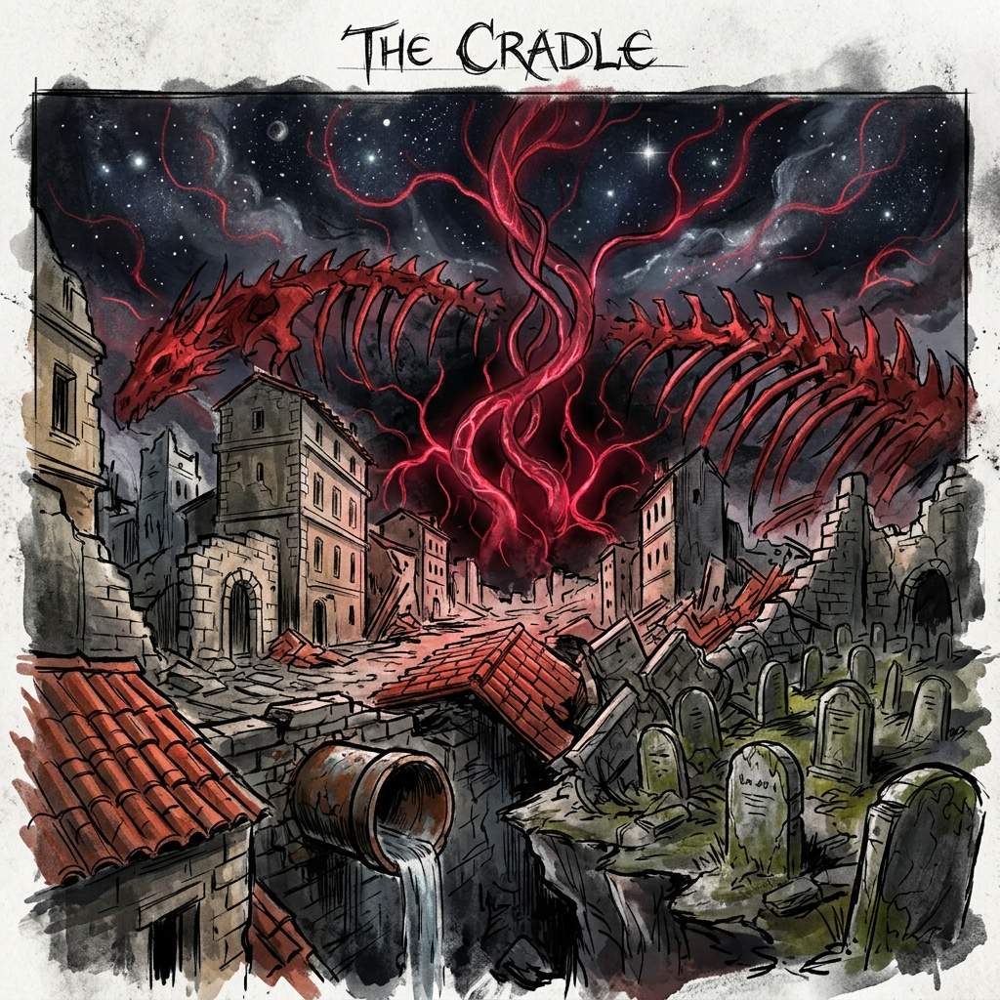
Cradle Landscape
Những mảnh ký ức này không chỉ là hình ảnh. Chúng thử lại các lựa chọn của cả hành trình. Marseille dựng lại một lối thoát riêng cho nhóm, nhưng phía sau là tiếng tù nhân trong Bastonne bị bỏ lại. Sakuri trả lại sự im lặng nếu nhóm chịu để một đứa trẻ làm vật tế. Calvaria mở những cánh cửa bằng giọng người chết. Akam Meskul cho thấy một chiến thắng rực rỡ nếu nhóm chấp nhận để hai phe tự tàn sát. The Cradle không hỏi nhóm có đủ mạnh để thắng không. Nó hỏi họ có lặp lại cách nghĩ của những kẻ họ đã đánh bại không.
Không khí có độc, nhưng nhóm sống sót vì đã tiếp xúc với nhiều mảnh thần và có thiết bị lọc của Tàn Dư. Heni yếu đi nhanh. Cô càng gần Dây Rốn, cô càng nghe thấy Heniana mơ. Điều này không biến Heni thành chìa khóa vô tri. Ngược lại, lần đầu tiên cô hiểu rõ nỗi sợ lớn nhất của mình: nếu cô có thể mở đường đến Heniana, mọi người sẽ lại muốn dùng cô như phần thay thế cho một người khác.
Ghost cũng bắt đầu thấy những mảnh quá khứ. Những hình ảnh rải rác từ Bastonne, Calvaria và Akam Meskul ghép lại thành một khả năng: anh từng là một đứa trẻ trong một đợt thử nghiệm cũ hơn của Jamerson hoặc của những kẻ đi trước Jamerson. Tên anh đã bị xóa khỏi hồ sơ vì anh "thất bại": không thích hợp làm vật chứa, không dễ điều khiển, không phản ứng đúng với thôi miên. Vẫn còn những khoảng trống về ai đã xóa hồ sơ, ai đã để anh sống, và vì sao anh bị bỏ lại. Nhưng chính sự thất bại đó cứu anh.
Anh không phải vị cứu tinh do số mệnh chọn. Anh là người sống sót từ một lỗi sai, và anh có quyền biến lỗi sai đó thành lựa chọn.
Thân thế của Ghost & Nhịp tim cộng hưởng: Tại đây, Ghost bắt đầu trải qua những cơn đau co thắt lồng ngực dữ dội. Nhịp tim của anh đồng bộ kỳ lạ với nhịp đập từ lõi Dây Rốn. Những hình ảnh chập chờn từ quá khứ hiện về rõ nét: Ghost không chỉ đơn thuần là một tù nhân hay một lỗi sai ngẫu nhiên của hệ thống. Anh chính là Prototype Zero (Mẫu Thử Không) – tiêu bản phôi thai nhân tạo đầu tiên được cấy tế bào của Thần Sơ Sinh trong các nghiên cứu sơ khởi của Jamerson nhiều năm trước. Do không thể tích hợp trọn vẹn sức mạnh thần tính và bị coi là "thất bại", ký ức của anh bị xóa sạch và anh bị vứt bỏ vào khu giam giữ Bastonne. Nhưng chính sự "thất bại" này – việc giữ lại phần lớn nhân tính và cấu trúc sinh học không hoàn thiện – đã giúp Ghost sở hữu khả năng kháng nhận diện sinh học và kháng lại sự thôi miên của các mảnh thần. Khi tiến sâu vào The Cradle, nhịp tim cộng hưởng này vừa là một lời nguyền rút cạn sinh lực anh, vừa là chiếc chìa khóa sinh học duy nhất giúp Ghost nhìn thấu các cơ quan bảo vệ của Dây Rốn.
Phòng Gương Ký Ức (Memory Mirror Chamber): Trong hành trình xuyên qua Vùng Mơ, nhóm bước vào một không gian biệt lập nơi ý thức của Heni chạm vào tâm trí ngủ đông của Heniana. Không phải qua các báo cáo y học lạnh lùng, mà qua một gương nước phản chiếu tâm linh. Heniana thật sự kẹt trong nỗi cô đơn vô tận của buồng ngủ đông, liên tục nghe thấy những âm thanh méo mó từ người cha và thế giới bên ngoài. Heni nhận ra Heniana không hề oán giận sự tồn tại của cô. Cả hai cô bé, một người là bản gốc đau đớn, một người là bản nhân bản bị săn đuổi, đã tìm thấy sự đồng điệu sâu sắc. Họ từ chối làm những vật tế câm lặng cho tham vọng của người lớn, quyết định sẽ cùng đứng lên khẳng định quyền tự quyết của bản thân.
Con Cháu Chiếc Nôi và Tàn Dư Sáu Vương Quốc cùng kéo đến tế đàn. Một phe muốn hồi sinh thần để thanh tẩy nhân loại. Phe kia muốn hồi sinh thần để tống khứ nó khỏi thế giới. Jamerson muốn dùng thần để cứu Heniana. Mỗi bên đều có lý do nghe đủ mạnh nếu chỉ nghe từ phía họ.
Ba thế lực này cũng là ba kết thúc sai đã được gieo từ trước. Con Cháu Chiếc Nôi chọn phục thù và gọi nó là thanh tẩy. Tàn Dư Sáu Vương Quốc chọn kiểm soát và gọi nó là sinh tồn. Jamerson chọn sở hữu và gọi nó là tình yêu. Nếu nhóm chỉ đánh bại một phe rồi dùng Dây Rốn theo cách của phe khác, họ vẫn chưa thoát khỏi vòng lặp cũ.
Người chơi không chọn phe nào làm chân lý cuối. Mục tiêu của nhóm là mở lối đến Dây Rốn, bảo vệ những người không muốn chiến đấu, và ngăn cả ba phe biến thế giới thành vật tế.
Henry cuối cùng nói với Ghost: "Lệnh duy nhất của tôi cho cậu là đừng để bất kỳ ai nói rằng cái chết của người khác là cái giá phải trả."
Ở trung tâm The Cradle, Dây Rốn của Thần Sơ Sinh vẫn còn sống. Nó không phải một sợi dây đơn giản mà là một mạng mạch máu khổng lồ nối vào khoảng tối trên bầu trời, nơi có thứ gì đó ngoài thế giới đang lắng nghe. Thực chất, Dây Rốn hoạt động như một Ăng-ten Vũ Trụ (Cosmic Antenna). Khi Thần Sơ Sinh bị con người cắt xẻ trong quá khứ, tiếng khóc đau đớn của nó liên tục phát ra ngoài vũ trụ qua chiếc ăng-ten này, thu hút các thực thể vĩ đại khác tìm đến Trái Đất và gây ra các đợt Đại Họa. Nếu cố tình tiêu diệt các mảnh thần bằng bạo lực một lần nữa, chiếc ăng-ten sẽ phát tín hiệu khẩn cấp cực đại, kéo theo sự hủy diệt hoàn toàn của hành tinh. Cách duy nhất để chấm dứt lời nguyền là thực hiện một Nghi lễ Ngược (Inverse Ritual) – hoạt động như một bài ca ru (Cosmic Lullaby) xoa dịu tiếng khóc của thần và ngắt kết nối Dây Rốn một cách an hòa.
Jamerson đặt buồng ngủ đông của Heniana vào vòng mạch. Con Mắt mở trong cánh tay ông. Cái Tai nghe nhịp máu con gái. Cái Lưỡi nói bằng giọng Heniana. Trái Tim đập theo mong muốn của ông. Mọi thứ ông cần đều ở đó.
Nhưng sự thật lộ ra: nếu nghi lễ thành công, Heniana sẽ tỉnh dậy trong một cơ thể thần, nhưng ký ức, ý chí, và nhân tính của cô sẽ bị nhấn chìm bởi Thần Sơ Sinh đang tìm đường trở lại. Jamerson sẽ không cứu con gái. Ông sẽ dùng hình ảnh con gái làm cửa vào cho một thứ khác.
Jamerson không chấp nhận. Ông gọi nhóm là kẻ sát nhân, gọi thế giới là vô ơn, gọi tất cả tù nhân đã chết là cái giá phải trả. Trận boss cuối bắt đầu với Jamerson trong bộ giáp gắn các mảnh thần, vừa là người cha, vừa là tế tư, vừa là vật chứa sắp vỡ.
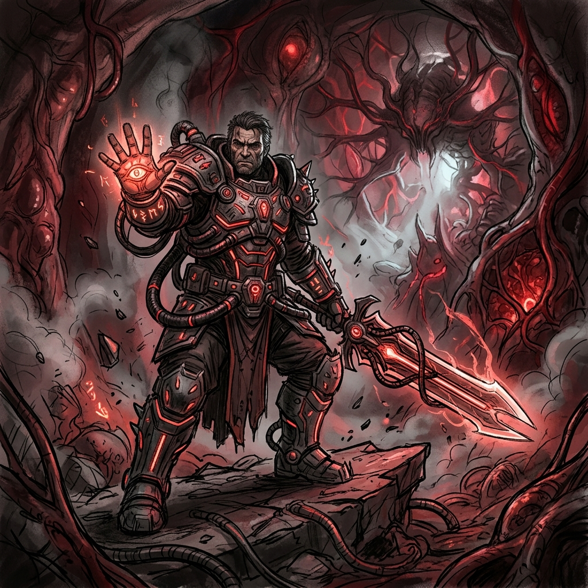
Final Boss Jamerson
Trong các pha, mỗi mảnh thần dùng một dạng tấn công:
Mắt tạo ảo giác từ ham muốn.
Tai phản đòn theo lệnh người chơi và tiếng động.
Lưỡi gọi tên để làm nhân vật khựng lại.
Tim khuếch đại sát thương mỗi khi nhân vật đánh trong giận dữ.
Dây Rốn kéo cả đấu trường vào giấc mơ của Thần Sơ Sinh.
Khi Jamerson gần thắng, Heniana thật sự tỉnh dậy trong vài phút ngắn. Không phải vì nghi lễ thành công, mà vì tất cả mảnh thần cùng hướng về một nhịp sống nhỏ.
Cô bé không hiểu hết những gì đã xảy ra. Cô thấy cha mình già đi, mặt đầy máu, tay phải không còn là tay người. Cô thấy những người lạ đang chảy máu vì cô. Cô thấy Heni, một đứa trẻ có khuôn mặt giống mình, đang sợ hãi nhưng vẫn đứng chắn giữa cô và nghi lễ.
Khoảnh khắc đó làm Heniana hiểu điều Jamerson không chịu nhìn: cô không chỉ được cứu, cô đã bị biến thành lý do để người khác bị bắt, bị cắt mở, bị quên tên. Còn Heni hiểu điều ngược lại: cô không cần biến mất để trả lại chỗ cho Heniana. Hai đứa trẻ nhìn nhau như hai con người riêng, không phải bản gốc và bản sao.
Heniana nói nhỏ:
"Cha ơi, nếu con phải tỉnh dậy bằng cách làm mọi người ngủ mãi, con không muốn."
Jamerson vỡ tung. Trong một khoảnh khắc, người cha trở lại. Nhưng Con Mắt không cần người cha nữa. Nó chỉ cần cơ thể và Dây Rốn. Nó mở rộng, chiếm lấy Jamerson, và biến ông thành pha cuối: The Father-Eye, một cơ thể bị điều khiển bởi mong muốn đã quá mức con người.
Trận cuối kết thúc khi Ghost cắt liên kết giữa các mảnh thần và cơ thể Jamerson. Jamerson rơi xuống bên buồng ngủ đông, không được tha thứ, nhưng lần đầu tiên không còn ra lệnh. Ông đặt bàn tay trái lên kính và nói với Heniana: "Cha đã không để con được sợ cha. Cha chỉ sợ mất con."
Không ai trong nhóm đáp lại bằng lời tha thứ. Henry hạ súng nhưng không cúi đầu. Deep chỉ kéo những người bị thương ra xa khỏi Dây Rốn. Solei đứng cạnh Heni. Tulas kiểm tra nhịp thở của những nạn nhân còn sống. Block giữ cánh cổng đang sụp. Điều đúng cuối cùng của Jamerson không xóa Bastonne, Marseille, tàu ngầm hay tất cả những cái tên đã mất.
Nhóm hiểu rằng có ba cách kết thúc, nhưng đây không nên là một lựa chọn xuất hiện trống rỗng ở phút cuối. Ba cách này là kết quả tự nhiên của toàn bộ hành trình:
Giết lại Thần Sơ Sinh bằng cách phá hủy các mảnh thần. Cách này chỉ lặp lại tội ác cũ và có thể khiến lời nguyền bùng nổ mạnh hơn.
Hồi sinh Thần Sơ Sinh. Cách này có thể chấm dứt bệnh dịch, nhưng đổi lại thế giới sẽ trở thành giấc mơ của một sinh thể ngoài nhân tính.
Trả các mảnh thần về qua Dây Rốn, không phải để hồi sinh nó trên thế giới này, mà để gửi nó về nơi nó thuộc về.
Kết thúc chính tuyến là cách thứ ba. Đó không phải là thỏa hiệp mềm yếu, mà là hành động khó nhất: từ chối cả quyền phá hủy lẫn quyền sở hữu.
Heni là người bước lên đầu tiên, vì cô mang tế bào Heniana, từng là bản sao, từng là vật thí nghiệm, nhưng bây giờ cô tự chọn hành động của mình. Cô đặt tay lên Dây Rốn và nói: "Em không phải chỉ là phần còn lại của chị ấy. Nhưng nếu em được sinh ra từ sai lầm, em vẫn có thể dùng sai lầm đó để kết thúc nó."
Đoạn cuối hoạt động như một nghi lễ ngược. Thay vì ghép các mảnh thần vào một cơ thể mới, nhóm tháo từng mảnh ra khỏi ham muốn của con người.
Ghost cắt Con Mắt vì anh là lỗi sai mà hệ thống không đọc được. Anh không cần tên cũ để chứng minh mình có quyền tồn tại.
Solei giữ Heni bằng chính cái tên Heni đã chọn, không gọi cô là bản sao, em gái thay thế, hay bằng chứng huyết thống.
Henry dùng mệnh lệnh cuối cùng để cấm vật tế: không ai được chết chỉ để một phép màu có vẻ sạch sẽ hơn.
Deep không đứng ở trung tâm như biểu tượng chiến thắng. Anh giữ đường rút, đỡ những người còn sống ra khỏi vùng mơ đang sụp.
Tulas dùng máu và chất lỏng để khóa vết thương, lọc độc, kéo người bị thương ra khỏi mạch thần, không dùng cơ thể ai làm chìa khóa.
Block giữ cổng cho cả kẻ từng là địch rút lui, vì lòng trung thành của anh cuối cùng không còn là phục tùng một phe mà là giữ chỗ cho người sống.
Heni và Heniana cùng chạm vào mạch sáng. Heniana không chết ngay, nhưng trạng thái ngủ đông không còn được thần lực giữ nữa. Cô bé chỉ còn một cơ hội mong manh như một người bình thường, không phải thần, không phải biểu tượng. Heni cũng không bị rút cạn hay thay thế Heniana. Cô rời nghi lễ với tư cách một con người riêng, không phải phần dư của người khác.
Dây Rốn mở ra. Không có vị thần huy hoàng nào xuất hiện. Chỉ có tiếng trẻ sơ sinh khóc, rất xa, rồi nhỏ dần. Các mảnh thần tan thành ánh sáng như những mạch máu được tháo nút. The Cradle ngừng mơ.
Jamerson dùng phần sức cuối giữ Con Mắt không bám vào Heniana. Đây là hành động đúng đầu tiên của ông sau rất nhiều tội ác, nhưng nó không xóa sạch những gì ông đã làm. Ông chết như một người cha thất bại, không phải như một anh hùng.
Đại Họa không biến mất trong một ngày. Nhưng ở các vùng đất phía đông, người ta bắt đầu thấy những con sông bớt đen, những cơn sốt đến chậm hơn, những đứa trẻ sinh ra không mang vết bệnh. Marseille mất đi bí mật lớn nhất của Jamerson và phải đối diện với bằng chứng về nhà tù Bastonne. Laundel không thành thiên đường, nhưng người ở đó có thêm một câu chuyện để kể: đã có lần những kẻ bị đẩy xuống dưới thành phố làm cả thành phố phải nhìn xuống.
Sakuri trở thành cảnh báo về việc biến trẻ em thành thánh nhân. Calvaria mất đi quyền năng giả mạo giọng người chết, nhưng những người sống lần đầu phải tự nói lời tạm biệt bằng giọng của mình. Akam Meskul vẫn là vùng đất nguy hiểm, nhưng hai phe không còn bảo vật để biến chiến tranh thành định mệnh.
Heniana còn sống hay không có thể để mở theo hướng vừa buồn vừa có hy vọng. Bản chính tuyến để lại cơ hội: cô bé thở được một mình trong thời gian ngắn, được Heni nắm tay, và được nghe lần đầu tiên không phải tiếng máy móc. Heni không thay thế Heniana. Heni sống tiếp như một con người riêng.
Ghost rời The Cradle cùng đồng đội. Khi Henry hỏi liệu anh có muốn tìm lại tên cũ không, Ghost đáp: "Nếu ngày nào đó tôi cần, tôi sẽ tìm. Hôm nay, tôi đã có người gọi."
Cảnh cuối là cả nhóm đi qua bộ xương rồng Akam Meskul lúc bình minh. Bên dưới, những người sống sót của hai phe đang cùng nhau mở đường cho trẻ em và người bị thương. Không ai chiến thắng trọn vẹn. Không có vị thần nào hiện xuống ban phước. Nhưng lần đầu tiên sau rất lâu, thế giới im lặng đủ để con người nghe thấy nhau.
Cái kết của Divergency không nói rằng đau khổ sẽ tự biến mất khi đánh bại boss cuối. Nó nói điều khó hơn: có những mất mát không thể đảo ngược, và chính việc chấp nhận điều đó mới ngăn con người biến tình yêu thành bạo lực.
Jamerson là hình ảnh của một người không chấp nhận mất mát. Sakuri là hình ảnh của một đứa trẻ bị biến thành công cụ rồi dùng quyền năng để đáp trả. Giáo hội Calvaria là nỗi đau buồn bị biến thành hàng hóa. Hai phe Akam Meskul là lịch sử bị biến thành lý do giết người. Thần Sơ Sinh là một tiếng khóc bị con người gọi nhầm thành thần linh, vũ khí, và lời nguyền.
Nhóm nhân vật chính thắng không phải vì họ mạnh hơn tất cả. Họ thắng vì đến cuối cùng, họ từ chối sử dụng cùng một cách nghĩ với kẻ thù: không biến Heniana thành lý do, không biến Heni thành bản sao, không biến Ghost thành vật được chọn, không biến người chết thành mệnh lệnh cho người sống.
Thông điệp đọng lại cho người chơi: cứu thế giới không phải lúc nào cũng là làm điều vĩ đại. Đôi khi, đó là đứng đúng lúc để nói "không" với một phép màu cần quá nhiều xác người.
Bản đồ ngủ mơ khi chết: đây có thể là không gian giữa giấc mơ của Thần Sơ Sinh và ý thức Ghost. Người chơi hồi sinh tại đây, đổi kỹ năng, đặt lại bộ trang bị, hoặc trả tiền để đổi kỹ năng. Về truyện, mỗi lần chết là mỗi lần Ghost nghe tiếng gọi của Dây Rốn rõ hơn.
Mở đầu bằng Solei: phần hướng dẫn nên diễn ra ở căn cứ của đội Deep. Deep kiểm tra Solei trước nhiệm vụ giải cứu Block, từ đó dạy di chuyển, combo, chưởng, né, phản đòn, cầm-ném vật thể, và phối hợp đồng đội.
Tulas và phối hợp đội hình: Tulas có thể là thành viên đội hoặc nhân vật hỗ trợ từ sớm. Năng lực máu/chất lỏng của anh nên dùng để tạo bệ, khiên, cầu tạm, màn chắn vật thể bay, hoặc khóa dòng nước/bẫy; hiệu quả nhất khi phối hợp với Deep, Solei, Henry, Block hoặc Ghost thay vì giải mọi thứ một mình.
Vật thể cầm-ném: dùng cho cả chiến đấu và giải đố. Người chơi có thể ném vật vào công tắc, khóa, chuông, bánh răng, bàn ép, hoặc dùng vật thể làm nguồn chất lỏng/điểm neo cho Tulas.
Block trong Bastonne: Block luôn được đội cứu theo chính tuyến, nhưng Stranger có thể giúp hoặc bỏ qua anh trong lúc nhà tù náo loạn. Lựa chọn này không quyết định Block sống chết, mà quyết định mức thương tích, lòng tin của Block, và mức nghi ngờ của Henry/Solei với Stranger.
COMMAND sau khi Block trở lại đội: không nên bắt Stranger ra lệnh cho Block ngay lần đầu gặp. COMMAND nên mở khi Block đã được cứu và người chơi dùng anh như một đồng đội thật sự.
Lựa chọn mua/phá ở Laundel: dùng để tạo câu hỏi đạo đức nhỏ trước khi vào các lựa chọn lớn hơn. Lợi trước mắt có thể làm hành trình về sau độc hơn.
GROGER: boss ẩn nên là sản phẩm phụ của Laundel và lời nguyền, không chỉ là quái vật. Nó có thể là một người nhập cư bị bỏ lại trong cống, ăn token, rác thải, và xác chết đến khi thành truyền thuyết.
Tuyến mất điện tàu ngầm: tuyến này khó hơn và thưởng tốt hơn, đồng thời cho người chơi cảm giác mình chủ động phá cơ sở Jamerson thay vì chỉ trốn chạy.
Mỗi nhân vật có một câu hỏi riêng: Ghost là "tôi là ai nếu quá khứ bị xóa?", Solei là "tôi thuộc về đâu?", Deep là "sức mạnh của tôi có phải chỉ để người khác dùng?", Henry là "tôi có thể chiến đấu mà không biến thành kẻ mình ghét?", Tulas là "sức mạnh đáng sợ có thể cứu người mà không biến tôi thành quái vật không?", Block là "lòng trung thành khác gì phục tùng?"
Design translation
Gameplay & Level Design
Stage-by-stage gameplay plan covering mechanics, puzzles, encounters, bosses, enemy families, and skill pacing.
Read
76 min
Sections
41
Tables
6
Visual Slots
Browse all images found in imgs/. Edit IMAGE_SLOTS to pin priority images first.
Tài liệu này bám Divergency_Complete_Story_VI.md làm canon chính. Một số chi tiết từ bản nháp cũ được đưa lại khi chúng giúp Stage 1 rõ hơn, nhưng đã được chỉnh để không phá canon mới.
Mục tiêu là chuyển cốt truyện hoàn chỉnh thành game design: nhân vật chơi được, cơ chế có thể dùng, puzzle, encounter, boss, nhịp học kỹ năng, và ý tưởng cho từng màn.
Divergency không nên mở như câu chuyện của một "người được chọn". Trục chính nên là đội của Deep, Solei, Henry và Block: họ đã có lịch sử, có căn cứ, có mục tiêu giải cứu, và có lý do để tin hoặc nghi ngờ nhau. Stranger/Ghost là biến số quan trọng bước vào câu chuyện ở Bastonne, nhưng không nên giành vị trí nhân vật chính ngay từ đầu.
Cơ chế nên phản ánh điều này:
COMMAND là lòng tin, không chỉ là điều khiển NPC.
Cứu người thường làm màn khó hơn ngay lúc đó, nhưng mở đường, thông tin, hoặc kết quả tốt hơn về sau.
Party không nên chỉ là nhiều skin đánh nhau; mỗi người có một cách giải quyết tình huống khác nhau.
Game vẫn có combat, nhưng nhiều encounter nên hỏi người chơi: "giết nhanh" có thật là cách tốt nhất không?
Ví dụ:
Bastonne: Block cuối cùng vẫn được đội cứu, nhưng việc Stranger có giúp Block trong lúc nhà tù loạn hay không sẽ đổi mức độ tin tưởng, thương tích, và một số encounter sau.
Laundel: cướp shop cho lợi tức thì nhưng mất lòng tin.
Tàu ngầm: phá máy phát mở Hard Mode và loot tốt hơn, nhưng làm tình hình nguy hiểm hơn.
Akam Meskul: đánh boss đồng thời phải cứu dân, phá loa tuyên truyền, không truy sát người đầu hàng.
The Cradle: mục tiêu là trả mảnh thần qua Dây Rốn, không hồi sinh cũng không giết lại thần.
Biến số trong Bastonne, playable ngắn lúc nhà tù loạn, linh hoạt nhưng không phải mở đầu
Dash/iframe, kháng gọi tên, tương tác Map Ngủ Mơ, đi qua máy nhận diện lỗi
Tôi là ai nếu quá khứ bị xóa?
Heni
Companion/puzzle key, không nên là DPS chính
Resonance với Heniana, nghe mạch Dây Rốn, mở ký ức, làm dịu nhiễu thần lực
Tôi là bản sao hay một người riêng?
Mở game nên để người chơi điều khiển Solei ở căn cứ của đội Deep. Deep yêu cầu cô khởi động/luyện tập trước nhiệm vụ giải cứu Block: "Ta muốn cháu chứng minh cháu có thể tham gia nhiệm vụ lần này." Đây là tutorial tự nhiên cho di chuyển, đánh thường, combo, chưởng, né, counter, cầm/nhặt/ném vật thể, và nhịp teamwork.
Deep, Henry và Tulas có thể có lịch sử chung từ một cuộc chiến rất xa Marseille. Họ từng được gọi là anh hùng vì đã giải cứu một vùng đất khỏi thế lực hắc ám; cuộc chiến đó đã thắng, nhưng mất mát khiến họ không còn muốn sống như biểu tượng. Khi Deep nhận nuôi Solei, anh đưa cô đến Marseille để sống kín đáo hơn: làm việc, tránh chính quyền, thỉnh thoảng va vào băng nhóm nhưng cố không kéo Solei vào rắc rối lớn. Henry thì tiếp tục con đường ẩn danh, thu thập thông tin và bảo vệ những gì tình cờ lọt vào tay mình.
Trong Bastonne, game có thể cắt sang Stranger ở một đoạn ngắn khi nhà tù náo loạn. Lúc này người chơi học sự khác biệt của Stranger: không mạnh như đội Deep, nhưng lạ với hệ thống, khó bị nhận diện, và có thể thoát khỏi các khóa của Jamerson.
Nếu game không có party swap đầy đủ, vẫn nên giữ cảm giác nhân vật chính là đội Deep/Solei. Stranger/Ghost là nhân vật playable theo đoạn hoặc party member đặc biệt sau Bastonne, không phải người mở đầu game.
Synergy nên là lớp phối hợp vật lý/kỹ năng giữa party, khác với COMMAND. COMMAND trả lời câu hỏi "ai giữ việc gì"; Synergy trả lời câu hỏi "hai nhân vật kết hợp để làm được hành động nào mà một người không làm được".
Các synergy chính:
Deep + Tulas: Deep bám vào bệ/chùm chất lỏng của Tulas để lao lên không trung, đánh enemy bay, vượt vực, hoặc đập xuống phá giáp diện rộng.
Solei + Tulas: Tulas tạo bệ/tay vịn tạm, Solei dùng speed/counter để chạy tường, nhảy qua bẫy, hoặc vào weakpoint trên cao.
Henry + Tulas: Tulas dựng màn nước làm lệch đạn hoặc tạo thấu kính chất lỏng; Henry bắn xuyên để đánh dấu weakpoint, kích công tắc xa, hoặc làm ricochet có kiểm soát.
Block + Tulas: Tulas gia cố khiên/đường chắn bằng chất lỏng đặc, Block giữ cửa, chặn dòng nước, chặn bẫy hoặc giữ tuyến trước projectile.
Ghost + Tulas: Ghost đi qua vùng máy nhận diện lỗi, Tulas giữ vật thể/cửa ở trạng thái lỏng để Ghost lách qua hoặc kéo cơ quan từ phía bên kia.
Tulas không nên giải mọi puzzle một mình. Năng lực của anh nên có giới hạn: cần nguồn chất lỏng, tốn thời gian giữ hình, bị điện/nhiệt làm yếu, và nếu dùng máu quá nhiều thì tăng rủi ro narrative hoặc combat.
Nhân vật có thể cầm vật thể nhỏ/vừa và ném theo hướng chỉ định. Đây nên là mechanic chung, không chỉ là vũ khí tạm:
Combat: ném ghế, chai, thùng kim loại, đá, bình gas để stun, phá guard, tạo tiếng động hoặc ép enemy đổi vị trí.
Puzzle: ném vật vào công tắc xa, làm kẹt bánh răng, phá khóa yếu, đặt vật lên pressure plate, hoặc ném qua khe cho đồng đội.
Synergy: Tulas có thể tạo vật thể/bệ tạm để nhân vật khác đứng lên, hoặc làm "tay" chất lỏng giữ một vật ở giữa không trung trước khi Deep/Solei/Henry tác động tiếp.
Rủi ro: vật nặng làm nhân vật chậm, dễ bị đánh rơi; ném sai có thể gây tiếng động, phá cover, hoặc kích bẫy sớm.
COMMAND không nên xuất hiện ngay khi Stranger gặp Block. Nếu làm vậy, cảnh này dễ bị cảm giác như người chơi đang điều khiển một NPC chưa có quan hệ gì với mình.
Flow hợp hơn:
Tutorial teamwork ở căn cứ: Deep hướng dẫn Solei phối hợp với đồng đội. Đây là nơi dạy assist/team cue cơ bản, chưa cần gọi là COMMAND đầy đủ.
Nhiệm vụ Bastonne: đội vào nhà tù để giải cứu Block, vì Block là người trong team hoặc đồng minh thân thiết đã bị Jamerson bắt.
Đoạn Stranger: Stranger tỉnh trong phòng biệt giam, nhớ lời Block dặn phải gây tiếng động. Prompt đầu tiên là nhặt/ném/đánh vật thể như Throw Cup, Kick Bed, Break Lamp, không phải "Command Block".
Henry mở nhầm phòng: đội đến vì tiếng động và tưởng Stranger là Block. Prompt kế tiếp mới là Point to Block, Help Block, Open restraint, hoặc Slow the gas.
Nếu Stranger giúp Block: Block thoát dễ hơn, ít bị thương hơn, và sau này là người đầu tiên trong đội nói rằng Stranger đã không bỏ mặc mình.
Nếu Stranger không giúp Block: Solei vẫn cứu Block trong route chính, nhưng Block bị thương hơn, đội mất thời gian hơn, và Henry/Solei có thêm lý do nghi Stranger.
COMMAND chính thức mở sau khi Block đã trở lại đội và người chơi dùng anh trong teamwork thật, không phải ngay khoảnh khắc Stranger gặp anh.
Cảm giác chính của COMMAND: đội không điều khiển nhau như công cụ, mà chia việc trong áp lực và tin người còn lại sẽ giữ phần của mình.
Với hệ thống command hiện có, nên xem COMMAND là RTS-lite theo ngữ cảnh, gần cảm giác ra lệnh nhanh trong AOE/Warcraft nhưng không biến Divergency thành game xây căn cứ hoặc micro quá dày. Người chơi vẫn điều khiển một nhân vật hành động chính; command chỉ mở một lớp chia việc ngắn, rõ, có mục tiêu trên màn.
Ba tầng dùng COMMAND:
Lệnh combat thời gian thực: dùng trong arena rộng, có nhiều phe ta/địch và nhiều mục tiêu cùng lúc. Đây là phần gần hệ thống command hiện có nhất: chọn General/đội, chọn hướng/formation/assist, rồi để AI giữ vai trò trong vài giây.
Lệnh ngữ cảnh: dùng khi đứng gần cửa, van, cầu, máy phát, loa tuyên truyền, thang máy, người bị thương. Người chơi không cần mở menu lớn; prompt ngắn như Break Door, Hold Bridge, Turn Valve, Protect Heni là đủ.
Quyết định hội thoại hoặc minigame nhỏ: dùng cho hành động có trọng lượng đạo đức hoặc nhịp cảnh, như không bắn người đầu hàng, thuyết phục dân chạy, hoặc giữ một công tắc trong lúc đồng đội đánh. Những việc này có thể là chọn thoại, giữ nút theo nhịp, hoặc mini objective, không nhất thiết là lệnh AI thuần.
Các dạng lệnh nên được hiểu theo vai trò thiết kế, không nhất thiết là enum riêng ngay từ đầu:
Hold: Block giữ cửa, giữ khiên, giữ cầu, giữ tuyến cho dân chạy.
Cơ chế này đã nằm trong ghi chú gameplay của bản Complete. Đây là không gian giữa giấc mơ của Thần Sơ Sinh và ý thức Ghost.
Không nên dùng Map Ngủ Mơ ngay trong tutorial Solei ở căn cứ. Cơ chế này nên mở sau đoạn Bastonne, khi Stranger/Ghost đã xuất hiện và người chơi bắt đầu hiểu anh có liên hệ bất thường với Dây Rốn.
Ghost nên là chủ thể chính của Map Ngủ Mơ. Đây không phải hub tinh thần chung cho cả đội, mà là nơi ý thức Ghost bị kéo vào mỗi lần cái chết, ký ức, hoặc Dây Rốn chạm đến anh.
Với nhân vật khác, hệ thống vẫn dùng được nhưng cách kể khác:
Ghost chết hoặc đoạn chơi Ghost: vào thẳng Map Ngủ Mơ, có thoại/tiếng gọi riêng, thấy ký ức và dấu hiệu Dây Rốn rõ nhất.
Solei/Deep/Henry/Block/Tulas bị hạ: không biến họ thành chủ thể của Map Ngủ Mơ. Camera/transition nên cho cảm giác Ghost nghe được "tiếng vọng" của họ rồi kéo cả party về checkpoint hoặc điểm nghỉ.
Đổi skill/loadout cho cả đội: vẫn có thể làm trong Map Ngủ Mơ sau Bastonne, nhưng mỗi nhân vật hiện như một echo, bóng ký ức, hoặc vật neo. Người chơi chỉnh build của họ qua Ghost, không phải vì họ tự mơ cùng một giấc mơ.
Heni: là ngoại lệ cảm nhận được Dây Rốn/Heniana rõ hơn người khác. Cô có thể ổn định đường đi hoặc mở ký ức trong Map Ngủ Mơ, nhưng không nên thay Ghost làm chủ thể của không gian này.
Trước Bastonne: Solei và đội Deep dùng căn cứ, trạm nghỉ, hoặc màn chuẩn bị bình thường. Không dùng Map Ngủ Mơ để tránh lộ Ghost quá sớm.
Trong The Cradle: ranh giới này vỡ ra. Lúc đó cả đội có thể bước vào không gian Ngủ Mơ thật, nhưng payoff vẫn xoay quanh Ghost và Dây Rốn.
Về hệ thống, dùng làm:
Respawn.
Đổi skill/loadout.
Reset kỹ năng bằng tài nguyên.
Xem lại mảnh ký ức.
Gợi dần tiếng gọi của Dây Rốn.
Tiến triển theo Stage:
Sau Bastonne: phòng trắng, loa tù nhân, tiếng khí mê.
Sau Marseille: nước cống, ánh Con Mắt trong bề mặt nước.
Sau Sakuri: âm thanh xa, tiếng ý nghĩ bị lặp.
Sau Calvaria: giọng người chết gọi tên cũ của Ghost.
Sau Akam Meskul: nhịp tim làm méo menu.
Trong The Cradle: Map Ngủ Mơ không còn là menu riêng, mà thành một phần thật của level.
Không cần morality meter to. Divergency không nên nói người chơi là "thiện" hay "ác" bằng một thanh điểm chung. Cách hợp hơn là để từng khu nhớ những việc cụ thể người chơi đã làm: đã giúp ai, đã phá gì, đã nói thật hay im lặng, đã cứu người trong lúc trận khó hơn hay chọn đường nhanh hơn.
Người chơi không cần thấy một UI Good/Evil. Họ chỉ thấy hậu quả qua phản ứng của NPC, độ khó của route, assist nhỏ, câu thoại khác, hoặc một chi tiết epilogue. Về kỹ thuật, đây là các flag/counter/state nhỏ được lưu trong save.
Có ba loại biến:
Flag: sự kiện đã xảy ra hay chưa, ví dụ BlockHelped, GrogerUnlocked.
State: trạng thái hiện tại, ví dụ BlockInjuryState = Stable/Wounded/Critical.
Counter/trust nhỏ: điểm cục bộ trong một khu, ví dụ LaundelTrust = -2..+2, Heat = 0..5, GrogerClues = 0..4, HeniTrust = 0..3, CalvariaTruthsFound = 0..5.
Nguyên tắc dùng:
Một biến chỉ nên ảnh hưởng khu của nó và 1-2 payoff về sau, không kéo thành nhánh truyện khổng lồ.
Reward tốt nhất là hữu ích nhưng không bắt buộc: shortcut, giảm phục kích, assist trong boss, item riêng, hoặc thêm lựa chọn thoại.
Hậu quả xấu không nên khóa canon chính. Ví dụ Block vẫn được cứu, Heni vẫn có arc riêng, Jamerson vẫn bị đánh bại; khác biệt nằm ở chi phí, lòng tin, và giọng kể.
Payoff nên đến nhanh trong 10-20 phút sau lựa chọn, rồi có một echo nhỏ ở cuối game để người chơi nhớ mình đã làm gì.
Biến
Loại
Tăng/đổi khi nào
Payoff gần
Payoff xa
BlockHelped
Flag
Ghost gây tiếng động để đội tìm thấy mình, rồi chỉ vị trí Block/mở restraint/làm chậm khí/phá chốt cửa cho Block trong Bastonne.
Block tỉnh hơn trong mini-boss Lockdown Unit, có thể giữ cửa/đỡ một đòn. Henry và Solei bớt nghi ngờ Ghost ở vài câu đầu.
Mở thoại Ghost-Block về chuyện "lòng trung thành không phải phục tùng". COMMAND với Block có cảm giác tự nhiên hơn sau khi anh trở lại đội.
BlockInjuryState
State
Bị ảnh hưởng bởi việc Stranger giúp hay bỏ qua, đội bảo vệ Block tốt hay tệ trong trận cứu, và cách người chơi xử lý Armorlite.
Stable: Block assist sớm. Wounded: assist có cooldown lâu hơn. Critical: đội phải bảo vệ Block trong một encounter phụ.
Ảnh hưởng vài cảnh Block giữ cầu/evac route. Không làm Block chết ngoài canon, chỉ đổi mức tổn thương và lòng tin.
LaundelTrust
Counter -2..+2
Tăng khi mua công bằng, cất vũ khí, giữ lời với phe yếu, bảo vệ shop. Giảm khi cướp, phản bội, rút vũ khí trong chợ, hoặc lấy token của dân nghèo.
Giá shop, tin đồn, shortcut, số phục kích trong cống.
Nếu cao, NPC Laundel thả đèn/chỉ weakpoint khi gặp GROGER. Epilogue nói Laundel có thêm một tuyến tự quản thay vì chỉ là ổ tội phạm.
Heat
Counter 0..5
Tăng khi phá quán/shop, đánh quá lâu, để cảnh sát báo động, hoặc chọn route ồn ào. Giảm khi hỏi đúng Jacques, dùng shortcut, giữ dân thường khỏi báo động.
Cảnh sát đến sớm hơn, Marius gọi reinforcement nhiều hơn, một số đường mặt đất bị khóa.
Echo nhỏ trong epilogue Marseille: thành phố có nhớ nhóm như tội phạm phá hoại hay như người phơi bày Bastonne.
GrogerClues
Counter 0..4
Tăng khi tìm graffiti, phòng ẩn, tin đồn Áo Ghi, hoặc hỏi ông già ở chòi trước cống cuối.
Đủ clue mở lựa chọn truy GROGER chủ động; thiếu clue thì chỉ còn route bẫy nếu trust thấp.
Nếu đủ clue, hồ sơ GROGER được kể như bi kịch người bị bỏ lại, không chỉ là loot boss.
GrogerUnlocked
Flag
Bật khi GrogerClues đủ ngưỡng hoặc khi LaundelTrust quá thấp khiến phe khác đẩy nhóm vào bẫy GROGER.
Mở boss ẩn GROGER. Trust cao biến trận thành điều tra-horror có NPC hỗ trợ; trust thấp biến thành phục kích bẩn và thiếu ánh sáng.
Nếu xử lý tốt, Laundel có tin đồn mới: GROGER từng là người bị bỏ lại, không chỉ là quái. Nếu chỉ giết lấy loot, epilogue lạnh hơn.
SubmarinePowerRoute
State
Stable nếu người chơi dùng terminal để giữ điện; Sabotage nếu phá hai máy phát phụ.
Stable: tàu sáng hơn, terminal/log dùng được. Sabotage: Hard Mode, arena tối, ít telegraph, SheMal nguy hiểm hơn, nhưng loot/skill tốt hơn và một số thí nghiệm bị ngắt.
Epilogue Marseille ghi nhận phòng thí nghiệm mất dữ liệu sống nếu sabotage. Không nên đổi ending chính; chỉ đổi bằng chứng, độ khó, và giọng nói về cái giá của sabotage.
HeniTrust
Counter 0..3
Tăng khi trả giá tử tế, không coi Heni như key item, hỏi consent trước khi dùng ký ức/resonance, giúp người bệnh quanh làng. Giảm khi ép cô, mặc cả tàn nhẫn, nói dối về Heniana, hoặc chỉ dùng cô như công cụ.
Heni bán/vừa tặng vật nhỏ, chỉ lối phụ, kể giấc mơ phòng trắng rõ hơn.
Resonance trong The Cradle ổn định hơn. Trong final, Heni có thêm câu tự chọn tên mình; trust thấp không phá canon nhưng cô ít chủ động mở lòng.
CalvariaTruthsFound
Counter 0..5
Sửa tên người chết, tìm bằng chứng giáo hội làm giả lời tha thứ, giúp NPC nghèo nghe sự thật, phá khế ước giọng nói.
Ít skeleton hơn trong Dàn Hợp Xướng, giảm số lần Cái Lưỡi dùng giọng người thân để khóa nhân vật.
Dùng làm bằng chứng ở Stage 5 để thuyết phục một nhóm rút khỏi cổng vật tế. Epilogue Calvaria nói người sống tự nói lời tạm biệt.
SlayerJungleStealth
State
Bật khi vượt qua rừng mà không kích hoạt chuông báo động quá 3 lần ở 3-2.
Nếu thành công (Stealth), đội tuần tra Pháo đài Linh hồn (3-3) bị bất ngờ, làm giảm 30% lượng máu của đợt phòng thủ đầu tiên.
Giảm mức độ truy đuổi đô thị (Heat) cho toàn bộ Stage 3.
SpiritFortressChoice
State
Destroy nếu phá hủy các bình năng lượng linh hồn; Purify nếu giải phóng họ an toàn.
Destroy: Vách pháo đài sụp đổ nhanh, nổ lan dọn bớt lính xung quanh, nhưng tăng oán hận. Purify: Chống đỡ các đợt lính gác phản kích lâu hơn, nhưng giải phóng được linh hồn.
Nếu Purify, các linh hồn sẽ xuất hiện tạo lá chắn âm thanh bảo vệ đội trước chiêu cuối của boss Dàn Hợp Xướng (3-9). Nếu Destroy, linh hồn oán giận hóa thành quái cận chiến hỗ trợ boss.
AkamCiviliansSaved
Counter
Cứu người bị ép cải đạo, mở evac route, phá loa tuyên truyền, không đánh người đầu hàng.
Rage của Titan giảm, ít reinforcement, weakpoint mở lâu hơn.
Ở cảnh cuối, số dân hai phe cùng mở đường cho trẻ em/người bị thương thay đổi theo counter này.
FinalMercyActions
Counter
Trong The Cradle/final: Hold Fire, Disable Weapon thay vì giết, Protect Civilians, từ chối dùng Heniana/Heni như vật tế, không xử tử kẻ đã đầu hàng.
Phase Trái Tim trong final bớt sạc Rage, đồng đội có thêm assist bảo vệ.
Không tạo "good ending" riêng. Nó đổi tone epilogue: thắng bằng cách ít biến người khác thành chi phí hơn, hoặc thắng nhưng thế giới còn cay đắng hơn.
Ví dụ kết hợp biến:
LaundelTrust cao + GrogerUnlocked: dân Laundel hỗ trợ bằng đèn, tiếng gọi weakpoint, hoặc mở đường thoát sau boss.
LaundelTrust thấp + GrogerUnlocked: GROGER xuất hiện trong tối, nhiều token mồi hơn, NPC khóa cửa vì sợ nhóm.
HeniTrust cao + CalvariaTruthsFound cao: người chơi dễ nhận ra Cái Lưỡi đang giả giọng Heni/Heniana vì Heni từng kể chi tiết thật.
AkamCiviliansSaved cao + FinalMercyActions cao: final boss vẫn khó, nhưng phase Trái Tim có nhiều khoảng thở hơn và epilogue bớt tuyệt vọng.
Điểm quan trọng: biến trust không phải để thưởng người chơi "ngoan". Nó làm thế giới nhớ các chi phí nhỏ mà người chơi đã chấp nhận hoặc né tránh.
UI của Divergency nên đi cùng ngôn ngữ thị giác đã có trong các mockup hiện tại: nền tối, kim loại cũ, viền đồng/brass, điểm chọn màu vàng cũ, banner tím, xích, bánh răng, họa tiết góc và footer prompt cho tay cầm/bàn phím. Tránh cảm giác sci-fi neon sạch hoặc menu mobile quá phẳng. UI phải đọc được ở canvas nhỏ 805x456, vì phần lớn asset hiện tại đã có preview theo tỷ lệ này.
Các asset UI hiện có nên được xem là reference chính:
imgs/UI/main_menu_sprites/: main menu, logo, background, button và icon.
imgs/UI/Pause_menu_options_spritesheet.json và imgs/UI/pause_menu_options_sprites/: pause/options overlay.
imgs/UI/settings_menu_sections/ và imgs/UI/settings_menu_sprites/: Settings theo tab Video/Audio/Controls/Gameplay/Misc.
imgs/UI/Character_selected_story_spritesheet.json và imgs/UI/character_selected_story_sprites/: chọn nhân vật, map campaign, stage card, skill panel.
imgs/UI/in_game_hud_ui_skill_set/: HUD trong gameplay, command wheel, skill hotbar, objective marker.
imgs/UI/Relay_IP_Room_design_notes.md và imgs/UI/relay_ip_room_sprites/: phòng Relay/IP nếu Story có co-op hoặc lobby.
Màn hình chính dùng background main_menu_background_805x456.png làm cảnh nền tĩnh/animated nhẹ. Logo Divergency ở trên/trái hoặc trên/giữa, không che nhân vật chính trong nền. Menu chính không cần giải thích dài; người chơi phải vào game nhanh.
Các nút chính:
Continue: hiện khi có save gần nhất. Dòng phụ nhỏ ghi Stage/Act, ví dụ Stage 1-2 Laundel.
Start Story: vào flow chọn slot hoặc Relay/IP room tùy chế độ chơi.
Heroes: mở màn hình nhân vật/kỹ năng ngoài campaign. Nếu chưa mở đủ nhân vật, hiển thị silhouette hoặc locked card, không spoil Ghost/Heni quá sớm.
PvP / Relay: chỉ bật nếu mode này thật sự có gameplay. Nếu chưa làm, đổi thành Extras hoặc ẩn để tránh hứa quá sớm.
Settings: mở Settings overlay.
Quit: thoát game, có confirm đơn giản.
Flow đề xuất:
Continue -> load autosave gần nhất.
Start Story -> chọn save slot.
Nếu chọn chơi online/co-op -> mở Relay/IP Room.
Nếu chơi single-player -> vào Stage 0 tutorial ở căn cứ Deep Team.
Màn Relay/IP chỉ dùng khi cần kết nối người chơi. Nó không nên thay thế main menu campaign nếu bản chơi hiện tại là single-player. Màn này giữ nền main menu đã dim, mở modal đồng/brass ở giữa, đúng hướng trong Relay_IP_Room_design_notes.md.
Nội dung chính:
Tab Relay và IP Local ở trên.
Danh sách phòng bên trái, 5 dòng là đủ cho canvas nhỏ.
Khu host/join bên phải: region, slot, route, room code/host IP, nút Host Room, Join Selected, Connect.
Hàng tên người chơi ở đáy modal.
Nút settings và close ở góc phải, dùng cùng sprite với pause/settings.
Màn character select không nên là "shop" nếu dùng trong campaign. Nó nên là màn Story Party: chọn nhân vật đang điều khiển, assist, reserve, skill loadout và Stage map.
Layout dùng asset Character_selected_story hiện có:
Tab trái/phải: Character và Map.
Cột trái: card nhân vật gồm Deep, Solei, Henry, Tulas, Block. Ghost chỉ mở sau Bastonne; Heni là companion/puzzle key, không đặt như DPS chính nếu story chưa cho phép.
Trung tâm: nhân vật đang chọn, nameplate, class/role, chỉ số HP/ATK/DEF/SPD, skill slots.
Dưới: Current Fighter, Assist, Reserve, nút Ready.
Bên Map: các card Stage 1-1, 1-2, 1-3, 1-4, progression node và branch marker.
Luật mở khóa:
Stage 0 đầu game: chỉ Solei trong tutorial, Deep/Henry/Tulas là assist theo cảnh.
Sau Bastonne: Deep/Solei/Henry/Block có thể vào party tùy hệ thống swap; Ghost mở như special member hoặc route-specific playable.
Stage 2: Heni xuất hiện như companion; UI phải gọi cô là Heni, không dùng nhãn kiểu Clone, Copy, Key Item.
Khi nhân vật bị thương theo state như BlockInjuryState, card hiển thị trạng thái bằng icon nhỏ và mô tả gameplay, không khóa nhân vật một cách khó hiểu.
Pause menu là overlay lên gameplay đã làm tối, không đưa người chơi ra màn hình riêng trừ khi chọn map/settings. Asset hiện tại đã có hướng đúng với title P1 PAUSED, chain frame, purple banner và option buttons.
Các lựa chọn chính:
Resume: quay lại gameplay.
Change Character: mở Story Party/Character Select ở trạng thái gọn, chỉ cho đổi nhân vật hợp lệ trong party hiện tại.
Command List: xem COMMAND đã mở, synergy, input, cooldown và ví dụ ngữ cảnh.
Options: mở Settings trên cùng overlay pause.
Restart Map: xác nhận trước khi restart checkpoint/map hiện tại.
Quit: lựa chọn Quit to Main Menu và Quit Game, luôn có confirm nếu có tiến trình chưa save.
Quy tắc:
Pause trong combat thường dừng game. Nếu có co-op/online, pause chuyển thành menu không dừng thời gian và cần label rõ.
Trong cutscene, nút pause chỉ mở Resume, Skip, Settings, Quit to Main Menu.
Nếu người chơi chết sau Bastonne, ưu tiên đưa về Map Ngủ Mơ/respawn flow thay vì pause menu thường.
HUD phải giữ nguyên triết lý: không biến mọi lựa chọn thành morality meter. Không hiển thị thanh Good/Evil, không hiển thị Trust +1 kiểu game hệ thống lộ liễu. Hậu quả thể hiện qua NPC, route, giá shop, encounter và epilogue.
HUD chính:
Góc trên trái: portrait, tên nhân vật, HP, mana/energy, level, status icon.
Góc trên phải: objective ngắn, icon map/skull/star nếu cần, không quá nhiều text.
Đáy giữa/phải: skill hotbar Q/W/E/R hoặc gamepad equivalent.
COMMAND: command wheel chỉ hiện khi giữ nút, có segment Hold, Come, Free, Focus hoặc lệnh ngữ cảnh.
Scene marker: enemy guard HP/marker, ally nameplate, objective marker; chỉ hiện khi cần đọc combat.
Stage-specific UI:
Con Mắt: UI có thể sai lệch nhẹ, hiện đồ giả hoặc objective mơ hồ, nhưng không được lừa người chơi bằng nút hệ thống nguy hiểm.
Divergency UI concept, dark fantasy sci-fi action RPG, old brass frame, worn dark metal panels, muted gold active selection, purple hanging banners, chain and gear ornaments, readable 805x456 game UI layout, controller prompt footer, cinematic but functional, no neon futuristic HUD, no mobile-game clutter.
Training ở căn cứ: Deep kiểm tra Solei bằng sparring, dummy, bài né đòn, bài combo, bài chưởng, và bài counter.
Team cue cơ bản: Deep hoặc Henry hô nhịp để Solei học assist, đổi mục tiêu, phá giáp, né đòn lớn.
Tulas synergy drill: Tulas tạo bệ chất lỏng, khiên nước, hoặc vật thể tạm để Solei/Deep học nhảy qua vật cản, chặn projectile, và đánh mục tiêu trên cao.
Cầm và ném: nhặt thùng, ghế, chai, tạ tập hoặc lõi máy để ném vào công tắc, dummy có giáp, hoặc vùng tạo tiếng động.
Mission briefing: mục tiêu rõ ràng là giải cứu Block khỏi Bastonne và lấy bằng chứng về thí nghiệm của Jamerson.
Khí mê: giảm tầm nhìn/stamina theo chu kỳ, nhưng Stranger không ngủ như người khác.
Máy nhận diện tù nhân: cửa/camera không biết xử lý Stranger vì anh không khớp hồ sơ.
Loa đọc mã số: tạo nhịp đóng mở cửa và áp lực thời gian.
Lockdown: cửa tự khóa, guard chuyển sang đội hình khẩn cấp.
Noise objective trong phòng giam: Stranger phải tạo đủ tiếng động bằng cách đánh/nhặt/ném vật thể để Henry tìm đến.
Vật thể phòng giam: đèn, hai cốc sứ, bàn kim loại nhẹ, giường sắt, bình vệ sinh đêm. Đánh giường có thể rơi mảnh kim loại; ném vỡ bình có thể rơi Stimpack cũ và mở UI máu lần đầu.
Solei khởi động ở căn cứ: Deep tạo bài kiểm tra ngắn. Người chơi học đi, nhảy/né, đánh thường, combo, chưởng, counter, nhặt/ném vật thể và synergy đơn giản với Tulas. Bài cuối là một sparring nhỏ chứng minh Solei đủ khả năng tham gia nhiệm vụ giải cứu Block.
Đột nhập Bastonne: người chơi điều khiển Solei hoặc đội Deep trong đoạn đầu, học teamwork thật trong môi trường nguy hiểm.
Nhà tù náo loạn: sau khi lockdown/gas/Con Mắt gây nhiễu, game cắt sang Stranger tỉnh dậy trong phòng biệt giam. Anh không có combo mạnh; bài chơi là sống sót, nhặt/ném đồ, và tạo tiếng động.
Gây tiếng động gọi đội: người chơi phải tương tác với ít nhất 2-3 vật thể hoặc đạt ngưỡng noise. Càng ít vật thể bị phá, càng ít guard bị kéo đến; phá hết phòng có thể tăng Heat nhưng cho thêm vũ khí tạm.
Henry mở nhầm phòng: đội phá cửa vì tưởng đó là Block. Cutscene ngắn: Henry hỏi về Block, Locke nghi kế hoạch lộ, Daniel báo guard đang tới. Người chơi có thể chỉ phòng Block hoặc chạy theo đội.
Cửa không nhận Stranger: sau khi ra khỏi phòng, người chơi phải đứng trong vùng nhiễu hoặc dùng mã tù nhân để đánh lừa cửa.
Stranger gặp Block: Block bị kẹt sau cửa thủy lực hoặc trong buồng đang bị bơm khí. Stranger có thể giúp bằng cách mở restraint, làm chậm khí, hoặc phá một chốt cửa. Đây là lựa chọn phụ trong lúc Stranger đang tìm đường thoát, không phải nhiệm vụ chính của anh.
Nếu Stranger không giúp: cảnh cắt về Solei. Solei và đội vẫn cứu Block, nhưng phải đánh thêm một encounter, Block bị thương hơn, hoặc mất một shortcut.
Nếu Stranger giúp: khi Solei tới nơi, Block đã có cơ hội chống đỡ hoặc tự bò ra khỏi vùng khí. Đội vẫn là người đưa Block ra ngoài, nhưng Block nhớ Stranger đã không bỏ mặc anh.
Hỏi tin Jacques: chọn chủ đề về bến cảng, đường cống, cảnh sát mật, băng đua xe, hoặc người bị đưa ra ngoài khơi. Hỏi đủ ý mở shortcut hoặc giảm phục kích.
Chuẩn bị ở garage/safehouse: kiểm tra Block bị thương, đổi loadout, nghe Henry/Deep thống nhất mục tiêu trước khi xuống phố. Đây là màn chọn nhân vật ngắn sau chase.
Vật thể quán bar: chai, cốc, ghế, bàn bi-da, đèn neon, cửa kính, thùng đá. Nhân vật đang được chọn sẽ xin lỗi Jacques rồi ném vật đang cầm để mở combat.
Heat đô thị: phá quá nhiều hoặc đánh quá lâu làm cảnh sát đến sớm.
Block bị thương: Block luôn được cứu khỏi Bastonne, nhưng nếu Stranger không giúp ở đoạn nhà tù loạn thì Block bắt đầu Stage 1 với thương tích nặng hơn hoặc Max HP thấp hơn, buộc người chơi chú ý bảo vệ.
Mâu thuẫn có sẵn: băng đua xe đã ghét đội Deep/Henry từ trước vì nhóm từng phá tuyến vận chuyển người, xăng và thuốc của chúng. Chúng bám theo đội đến Armorlite, không phải tự nhiên xuất hiện chỉ vì một cuộc nói chuyện.
Moto telegraph: mũi tên cảnh báo hướng xe lao vào, thời gian tăng tốc ban đầu chậm hơn người chơi để dạy né/nhảy đánh, sau đó mới nhanh dần.
Moto rider state: đánh sau lưng chỉ hất người ngồi sau nếu có passenger; đánh trực diện hoặc dùng vũ khí ném đúng lúc có thể hất cả xe.
Nói chuyện với Jacques: hỏi đủ thông tin mở đường cống thuận lợi hơn; hỏi thiếu thì vẫn đi tiếp được nhưng bị dẫn qua đoạn đông địch hơn.
Quán bar thành arena: bàn ghế bị phá sẽ đổi đường đi, có thể tạo cover hoặc tự chặn đường.
Băng đua xe ngoài phố: cuộc phục kích bắt đầu ngoài quán sau khi chúng nhận ra nhóm. Ba kẻ đầu tiên bị văng ra phố; một tên gục ngay, hai tên còn nửa máu. Dạy né đòn lao nhanh và vùng lửa, đồng thời cho thấy Marseille đã có nhiều món nợ cũ với đội.
Vũ khí đường phố: nắp thùng rác, tuýp nước, chai thủy tinh, thanh gỗ, vũ khí rơi từ enemy. Vật ném là cách tốt để hất rider khỏi xe trước khi chúng tăng tốc.
Phase 1A: cưỡi moto lớn, lao ngang, quay xe, để lại vạch lửa. Cần đánh trúng từ phía sau hoặc dùng vũ khí ném đúng timing để làm hắn ngã; mỗi lần ngã chỉ mở cửa sổ gây tối đa khoảng 25% HP.
Phase 1B: khi đi bộ tạm thời, dùng chém dọc, chém ngang, chém hất chống jump spam, rồi lao nhanh áp sát trước khi leo lại moto.
Phase 2: dưới 50% HP, rút kiếm gia truyền. Không còn dễ bị hất khỏi xe, gọi đàn em chạy cắt màn hình khoảng 20 giây, tăng tốc nhanh hơn và có combo 3 nhịp khi lướt qua người chơi.
Special: cắm mũi kiếm xuống đường khi tăng tốc, tạo tia lửa và vệt lửa tồn tại ngắn. Nếu người chơi đứng gần quá lâu khi boss nổ máy, boss quay vòng tại chỗ gây sát thương diện rộng.
Henry có thể đánh dấu lúc boss quay xe; Solei có cửa sổ counter tốt; Deep phá giáp khi boss đi bộ; Block nếu bị thương nặng chỉ nên assist phòng thủ.
Token economy: mua, mặc cả, làm việc cho phe, hoặc cướp.
Luật chợ: cất vũ khí thì đi qua được; rút vũ khí biến hub thành combat zone.
Faction route: Áo Đen của Jamerson, Xanh Dương bảo kê người nhập cư/thương nhân, Áo Ghi buôn tin và đưa đường.
Nước cống: van nước, dòng chảy, phòng ngập, quái phục kích. Enemy spawn ở trạng thái bơi bị tăng sát thương/stun khi trúng đòn đầu, nhưng mất debuff nếu nhảy lên bờ.
Shop specialization: Áo Đen bán vũ khí cận chiến/thuốc tăng damage; Xanh Dương bán hồi máu, vũ khí tầm xa và bẫy; Áo Ghi bán tin, đổi token, mở shortcut.
Enemy shopping: một số enemy có thể chạy vào shop để mua buff. Nếu người chơi không chặn, encounter khó hơn nhưng shop không bị phá.
Laundel layout: map chính khoảng 4-5 màn hình x 2 tầng; đường ray thấp có nhiều hồi máu/buff, bến ga cao có nhiều vũ khí và shop.
Mua hay phá shop: mua mở trust, item hiếm, đường dẫn; phá cho lợi nhanh nhưng tăng phục kích.
Graffiti GROGER: tìm đủ graffiti, hỏi Áo Ghi và ông già trước cửa cống cuối để mở boss ẩn.
Van nước nhiều người: Block giữ cần, Solei chạy qua cửa, Henry bắn khóa van từ xa.
Lời mời Áo Đen: đầu Laundel có cutscene một nhóm Áo Đen đến "mời" đội gặp thủ lĩnh. Số người quá đông cho một lời mời nên chuyển thành combat tutorial token.
Shop đầu tiên: Xanh Dương bán hồi máu/vũ khí tầm xa và giải thích luật chợ. Nếu người chơi tấn công shop này, LaundelTrust tụt mạnh và chợ spawn thêm quái từ kiosk xung quanh.
GROGER nên là sản phẩm của Laundel, không chỉ là quái. Ý tưởng mạnh nhất: một người nhập cư bị bỏ lại trong cống, ăn token, rác, xác chết và lời đồn đến khi thành truyền thuyết.
Cơ chế:
Arena có token rơi. Nhặt token giúp người chơi mua/đổi sau trận, nhưng làm GROGER hung hãn hơn.
GROGER lặn trong nước, chỉ lộ khi người chơi tạo tiếng động hoặc bật đèn.
Nếu LaundelTrust cao, NPC có thể thả đèn/chỉ điểm weakpoint.
Pack leader: quái đầu đàn buff đàn nhỏ; giết đầu đàn làm đàn nhỏ chậm/dễ stun.
Nước sâu tăng dần: đầu màn còn nhiều lối gạch khô; về cuối nước chiếm phần lớn arena, làm người chơi chậm nếu đi thấp nhưng cho cơ hội đánh quái khi chúng còn bơi.
Phòng ẩn/safe room: cửa bảo trì, vách nứt, dấu phấn hoặc graffiti dẫn vào phòng của người tị nạn cũ, tàn dư Áo Đen, hoặc clue GROGER.
Sniper laser: buộc di chuyển liên tục, dùng cover.
Cận chiến có tín hiệu rút súng: enemy đổi từ dao sang súng, có audio/visual cue.
Container cover: có thể đẩy/kéo để chặn laser.
Command RTS-lite ở bến cảng: người chơi vẫn đánh trực tiếp, nhưng có thể ra lệnh ngắn cho đội giữ cầu, phá khóa container, bảo vệ thuyền, hoặc focus sniper/pack leader. Chỉ nên có 2-3 objective active cùng lúc để không quá tải.
Target marker: Henry đánh dấu mục tiêu ưu tiên; Block/Deep/Solei nhận lệnh theo vai trò thay vì cần người chơi micro từng bước.
Heat reinforcement:Heat từ 1-1/1-2 quyết định số đợt cảnh sát mật và thời điểm sniper xuất hiện ở bến cảng.
Phòng sơ tán thất bại: phòng ẩn chứa vali, giấy nhập thành, đồ chơi. Dùng để thưởng lore và tài nguyên.
Cầu cống rộng: Block giữ tuyến cho NPC/đội chạy qua, Deep phá mảng tường chặn lối, Henry focus pack leader. Đây là bài test đầu tiên cho Hold/Break/Focus theo ngữ cảnh.
Khoảng lặng hoàng hôn: sau khi ra khỏi cống, khóa combat khoảng 30 giây nhưng vẫn để người chơi tự đi. Nhạc nhẹ, hội thoại ngắn về việc rời Marseille, rồi điểm hẹn thuyền trống phá vỡ hy vọng đó.
Autopilot boat: sau phục kích, không chỉ giết hết địch; phải giữ vị trí đủ lâu để thuyền khóa đường đến tàu ngầm. Người chơi có thể giao một đồng đội giữ bảng điều khiển trong lúc nhân vật chính xử lý sniper.
Áp suất tàu: mở một cửa khóa cửa khác; phải chia vai.
Bình chứa thí nghiệm: đánh bừa làm vỡ, thả quái phụ.
Con Mắt: tạo loot giả, cửa giả, bóng Jamerson/Heniana.
Ba terminal: phòng trưởng lính gác, kho dữ liệu thí nghiệm, phòng kiểm soát áp suất. Dùng đủ ba terminal mở lò phản ứng trung tâm theo route ổn định.
Hai máy phát phụ: phá đủ hai máy phát đặt SubmarinePowerRoute = Sabotage, mở cửa boss sớm nhưng làm nhiều phòng mất điện.
Logic ánh sáng: vật thí nghiệm thất bại sợ ánh sáng thường và còn bị guard điều khiển phần nào. Khi phòng mất điện/chuyển đèn đỏ, guard bị giết, quái tăng tốc và tăng sát thương.
Wall-bounce tàu ngầm: đòn đánh bay mạnh vào vách/ống khí có thể bật enemy lại thành projectile gây sát thương cho mục tiêu đầu tiên va phải; mỗi enemy có cooldown để tránh lạm dụng.
Route mất điện: phá máy phát làm Hard Mode, loot/skill tốt hơn.
Cứu tù nhân thí nghiệm: mở khóa từng buồng làm timer khó hơn, nhưng tăng bằng chứng về Jamerson.
Hồ sơ Heniana: đọc đủ log giảm một phase ảo giác trong boss hoặc mở thoại riêng.
Nguồn điện phụ: người chơi chọn giữ điện ổn định để dễ đi, hoặc phá để ngăn thí nghiệm và nhận reward mạnh hơn.
Map tàu: đầu màn cho người chơi sơ đồ phòng rõ tên. Nếu đi terminal route, map đánh dấu phòng cần tới; nếu sabotage, map hiển thị khu mất điện sau mỗi máy phát bị phá.
Cửa nhìn ra biển: vài đoạn không combat cho thấy tàu đang di chuyển, sinh vật biển lướt ngoài kính, và loa của Jamerson bắt đầu nói như đang thu dữ liệu từ chính trận đánh.
SheMal nghiêng về cận chiến như một fighter hạng nặng: kích thước ngang Deep, áp sát nhanh, dùng móng vuốt dài ở hai tay để cào, chém chéo, phản đòn và khóa khoảng cách.
Phase 1: cơ thể lai, grab, lao tường, wall bounce, combo móng vuốt ba nhịp. Người chơi phải đọc footwork thay vì chỉ né projectile.
Phase 2: liên kết Con Mắt, tạo ảo ảnh Heniana/Jamerson. Đánh nhầm ảo ảnh làm boss hồi hoặc đổi pattern.
Phase 3 nếu mất điện: ít telegraph hơn, arena tối hơn, nhưng weakpoint sáng rõ theo nhịp.
Phase transition: mỗi lần SheMal hấp thụ thêm năng lượng từ lò phản ứng, một số buồng thí nghiệm phụ mở ra và thả failed subjects. Nếu SubmarinePowerRoute = Sabotage, số buồng ít hơn nhưng quái dữ hơn.
Kết màn phải dẫn được sang Sakuri: SheMal có bản đồ bán đảo, ký hiệu Cái Tai, và ghi chú "nghe tiếng bệnh trong máu ngủ đông".
Sakuri nên đáng thương nhiều hơn là ác. Cô có lúc mất kiểm soát vì Cái Tai bắt cô nghe máu, nhịp bệnh, lời nói dối và ham muốn của người khác quá lâu.
Cơn khát máu có thể được trình bày như triệu chứng gần ma cà rồng: không phải cô thích giết người, mà cơ thể bị nhiều dòng máu/thần lực kéo lệch, khiến cô thèm tiếng mạch máu và dễ bùng nổ khi bị dồn.
Ryozan không nên chỉ là nạn nhân bị Sakuri ghét. Ông từng có tình cảm bảo hộ, thương xót, hoặc lời thề với Sakuri, rồi bị gia tộc/lãnh chúa hãm hại. Bi kịch là cả hai bị đẩy vào vai trò làm hại nhau.
Boss Ryozan nên xuất hiện trước trận Sakuri, ở rừng tre/thác nước/cầu núi, để 2-4 tập trung vào Sakuri và Cái Tai.
Phase 1: một thực thể lưỡng cư/non trẻ như nòng nọc đen, kéo lê phần đuôi linh hồn dưới mặt nước và bám vào chân cầu. Nó không phải hình dạng thật của Ryozan, mà là lời thề bảo vệ Sakuri bị yểm thành thứ chưa hoàn chỉnh.
Phase 2: hiện lại dáng tướng quân mặc giáp đỏ, cầm đao dài, đánh kỷ luật và nặng. Các đòn chính là chém ngang giữ cầu, đâm dài ép khoảng cách, và dậm cán đao tạo sóng âm qua ván cầu.
Cách thắng tốt không chỉ là đánh cạn máu. Người chơi có thể phá ba mũi yểm trên cầu để Ryozan nhớ lại rằng ông từng muốn cứu Sakuri, không phải canh tù cho cô.
Giấy thông hành/dấu gia tộc: disguise nhẹ, không biến thành stealth game hoàn toàn.
Tin đồn là resource: nghe đủ tin mở đường vào cung điện.
Cái Tai đọc thói quen: spam một hành động nhiều lần làm enemy đoán được.
DeceptiveDoorPuzzle: trong cung điện có cụm cửa đánh lừa bằng màu sắc. Đáp án đúng không phải màu người bình thường thấy, mà là cách người mù màu/nhìn lệch màu phân biệt độ sáng, biểu tượng phụ, vân gỗ và thứ tự cửa.
Búp bê mặt Heni: nếu điều tra thay vì phá shop, người chơi biết Heni đã bị bán thành biểu tượng.
Hồ sơ Ryozan: ghép chuyện Ryozan bị hãm hại để hiểu vì sao oan hồn của ông còn giữ cầu lên núi.
Chợ nghe lén: đứng cạnh nguồn ồn để che bước chân và nghe gia tộc nói chuyện.
Cửa nhìn sai: người chơi có thể dùng ghi chú của người hầu, tranh phai màu, hoặc góc nhìn của Heni/Ghost để chọn cửa theo logic mù màu. Chọn theo màu rực rỡ nhất sẽ vào phòng bẫy hoặc quay lại hành lang cũ.
Sakuri: sóng âm, ảo giác, đọc input, và những cơn bùng nổ khát máu ngắn khi cô nghe quá nhiều nhịp mạch quanh mình.
Nếu Ryozan được giải yểm ở 2-2B, trận Sakuri có ít add cận chiến hơn và có một cửa sổ cô dao động khi nghe lời thề cũ của ông. Nếu không, giáp đỏ của Ryozan chỉ còn như dư âm bảo vệ máy móc trong một số pattern.
Ghost gần như không có tiếng nội tâm, tạo khoảng trống làm Sakuri sợ. Đây có thể là cửa sổ burst.
Solei nên có moment từ chối để Sakuri/địa phương định nghĩa cô bằng dòng máu.
Kết màn: Cái Tai dẫn đến Calvaria và Cái Lưỡi; Heni quyết định đi cùng nhóm.
Sương mù dày đặc: giảm tầm nhìn của lính bắn tỉa và tầm bắn xa của Henry, buộc người chơi tiến sát hoặc dùng Solei do thám.
Bia mộ có thể tương tác: phá hủy bia mộ gỗ/đá để tìm mảnh hồi sinh stamina hoặc đạn nhẹ cho Henry.
Wandering Souls (Vong hồn lang thang): loại quái vật bay lơ lửng, lướt chéo qua màn hình theo nhịp bất định. Chúng không thể bị đánh bại bằng sát thương vật lý thường của Deep mà phải dùng chưởng/kỹ năng năng lượng của Solei hoặc bắn tỉa của Henry.
Lối đi sương mù: Solei phải chạy trước, dùng kỹ năng dò thám để đánh dấu các bia mộ ẩn chứa bẫy trước khi cả nhóm đi qua.
Tụ linh trận: một kết giới chắn ngang đường do Giáo hội thiết lập. Người chơi phải bảo vệ Henry trong 30 giây khi anh dùng COMMAND để định vị và phá hủy 3 viên linh đá ngụy trang ven đường.
Bẫy chông xương trồi: kích hoạt khi dẫm lên các bãi lá khô hoặc vùng đất mềm, gây sát thương lớn và làm chậm.
Kén độc (Thorn Pods): treo trên các thân cây hóa đá. Đánh hoặc bắn rụng chúng để tạo ra vùng sương độc ăn mòn giáp và gây choáng cho bất kỳ kẻ địch nào đứng bên trong.
Patrol "Slayer": lính gác đeo mặt nạ có khả năng ẩn thân trong bụi cỏ xương, có đòn chém lưỡi hái kéo ngã và ném bom khói gây mù.
Vượt rừng lén lút: người chơi phải di chuyển cẩn thận, dùng bẫy gai độc để hạ tuần tra. Nếu kích hoạt chuông báo động quá 3 lần, trạng thái SlayerJungleStealth sẽ chuyển thành Detected, ngược lại là Stealth.
Cơ quan kén gai: một lối đi bị chắn bởi gai nhọn khổng lồ. Tulas phải dùng năng lực chất lỏng để dẫn dòng nước đen ăn mòn rễ cây gai, mở đường cho nhóm đi qua.
Bình chứa Linh hồn (Spirit Batteries): các máy phát năng lượng cho lá chắn pháo đài. Phá hủy bình sẽ tiêu diệt linh hồn bên trong; giải thoát bình yêu cầu đứng yên bảo vệ vòng thanh tẩy.
Pháo linh hồn: bắn đạn năng lượng oán khí từ đỉnh tháp gác xuống.
COMMAND công thành: ra lệnh Block giương khiên thép che chắn đạn pháo, ra lệnh Deep đập cửa vách đá, và ra lệnh Solei leo ròng rọc tiếp cận tháp gác.
Tháp 1: Deep và Block kết hợp đột kích phá cổng bảo vệ lò năng lượng.
Tháp 2: Solei vượt rào và ngắt các cáp kết nối để lộ lò năng lượng từ trên cao.
Tháp 3: Cả nhóm chống đỡ các đợt phản kích của lính canh để lộ bình chứa.
Quyết định SpiritFortressChoice: Sau khi hạ gục chỉ huy pháo đài, người chơi quyết định phá hủy nhanh các bình linh hồn (Destroy) hoặc dùng Ghost/Tulas để thanh tẩy giải thoát họ (Purify).
#3-4. Lối đi bí mật dưới lòng đất (Under Secret Passage)
Cổng đá thủy lực: cổng nặng tự động sập xuống theo thời gian, cần người/vật giữ đòn bẩy.
Van xả khí gas nóng: phun khí theo chu kỳ gây sát thương lớn và đẩy lùi.
Glitched Light Sweep (Quét ánh sáng lỗi): hệ thống quét an ninh của Giáo hội. Ghost đi qua sẽ không kích hoạt bẫy vì cơ thể anh là một lỗi hệ thống, nhưng các nhân vật khác đi vào sẽ kích hoạt đá rơi lập tức.
Giải mã áp suất thủy lực: Tulas điều khiển dòng nước ngầm đổ vào ống áp suất để giữ cổng đá mở lâu hơn. Block gồng mình giữ cổng để Solei trượt qua cắt đứt van gas độc.
Đường đi quét an ninh: Người chơi điều khiển Ghost đi qua các luồng ánh sáng quét lỗi để tìm và phá hủy bộ máy phát bẫy từ phía bên kia, mở đường an toàn cho cả đội.
Đám đông hành hương: che line of sight, tạo hoảng loạn, cản đường.
Last Breath Token: token để mua lời nhắn/nghi thức, nhưng dùng nhiều là nuôi hệ thống giáo hội.
Người ghi tên: enemy/merchant thu phí từng cái chết.
Lời trong tim gan ruột: nếu người chơi dùng confession booth, nhận buff, hoặc nghe quá nhiều lời người chết, boss có thêm câu thoại/đòn đánh cá nhân hóa vào Deep hoặc Henry.
Set-piece xã hội: an ủi biến thành dịch vụ, dịch vụ thành quyền lực.
Đặt Mẹ Bề Trên Voro như đối thủ có niềm tin thật.
Cho Deep/Henry thấy mặt tối của việc dùng quá khứ làm mệnh lệnh: tượng anh hùng, lời tha thứ giả, và giọng người chết gọi người sống tiếp tục chiến đấu.
Nhiều giọng: mẹ Henry, đồng đội Deep, người thân Solei, Heniana, cuối cùng là giọng người chơi.
Với Henry: nhiễu COMMAND bằng tội lỗi cũ, biến lệnh bảo vệ thành lệnh truy sát nếu người chơi không phá nút khế ước.
Với Deep: gọi danh hiệu anh hùng cũ, buff Rage khi người chơi truy sát hoặc đứng đánh như một biểu tượng chiến tranh.
Với Ghost: chỉ mở thêm mảnh ký ức/tên cũ, không giải thích toàn bộ quá khứ ngay ở Stage 3.
Mỗi giọng tạo một kiểu đòn.
Hệ quả của SpiritFortressChoice:
Nếu đã thanh tẩy linh hồn (Purify): các linh hồn được giải phóng sẽ bay quanh đấu trường, định kỳ tạo ra một Lá chắn oán niệm màu lam nhạt bao quanh cả nhóm. Lá chắn này tự động hấp thụ toàn bộ sát thương và hiệu ứng choáng của 1 đòn sóng âm oán niệm cực đại từ boss trong mỗi phase.
Nếu đã phá hủy bình linh hồn (Destroy): các linh hồn oán giận hóa thành các quái vật cận chiến (Vong hồn thù hận) liên tục xuất hiện từ rìa màn hình. Chúng lao vào ôm chặt nhân vật, khóa hoàn toàn thanh COMMAND của Henry và tự phát nổ gây sát thương diện rộng.
Reward: nhóm giữ mảnh Cái Lưỡi bị cháy, biết Thần Sơ Sinh không nguyền rủa mà đang gọi mẹ. Mục tiêu chuyển sang tìm Dây Rốn.
#1. Cơ chế "Nhịp Đập Oán Hận" (Resonant Heartbeat)
Trái Tim của Thần Sơ Sinh khuếch đại cảm xúc cực đoan của vùng đất và phát ra nhịp đập oán oán theo chu kỳ (mỗi 5 giây một lần, thể hiện bằng hiệu ứng đỏ nhấp nháy trên viền màn hình và âm thanh thịch-thịch trầm đục).
Trong Chiến Đấu:
Resonant Strike (Đòn đánh cộng hưởng): Nhấp phím tấn công hoặc tung kỹ năng vào đúng khoảnh khắc nhịp tim đập (dung sai 0.3 giây) sẽ tăng 100% sát thương chí mạng và lập tức phá vỡ giáp bảo vệ (Guard Break) của địch.
Rage Build-up (Tích tụ Nộ khí): Tấn công liên tục và bị lệch nhịp sẽ tích lũy thanh Rage cục bộ của trận đấu. Khi thanh Rage đầy, kẻ địch xung quanh sẽ gầm lên và rơi vào trạng thái cuồng loạn (Frenzy) - tăng 50% tốc độ di chuyển và công kích nhưng giảm 30% phòng thủ.
Trong Di Chuyển (Traversal):
Một số cầu máu, chướng ngại vật chất lỏng hoặc các dải xương rồng sáp nhập chỉ cứng lại và đi qua được trong 1.5 giây trùng khớp với nhịp tim. Người chơi phải căn thời gian di chuyển để nhảy và lướt qua.
#2. Kỹ năng mở rộng của Tulas (Toxic Triage & Vascular Lock)
Akam Meskul đẩy kỹ năng kiểm soát dịch thể của Tulas lên cực hạn, chạm vào ranh giới của cấm thuật sinh học:
Màng Lọc Huyết Dịch (Toxic Filtration Aura): Tulas tạo một vòng hào quang nước bao bọc xung quanh, trung hòa hoàn toàn khí độc trong phạm vi nhỏ. Người chơi có thể dùng lệnh COMMAND bắt Tulas giữ vị trí tĩnh để che chắn cho Henry bắn tỉa hoặc bảo vệ nhóm NPC tị nạn. Kỹ năng này tiêu hao năng lượng từ các vũng nước hoặc bình thí nghiệm vỡ quanh map.
Khóa Huyết Quản (Vascular Lock): Cứu mạng đồng đội hoặc dân thường bị phơi nhiễm khí độc bằng cách đông cứng tạm thời độc tố trong huyết quản của họ. Kích hoạt kỹ năng này sẽ khóa 25% lượng Máu tối đa của Tulas cho đến khi quay về checkpoint, đòi hỏi người chơi phải quản lý tài nguyên máu cực kỳ cẩn thận.
#3. Kỹ năng mở rộng của Block: "Cực Hạn Chắn Đỡ" (Bastion Shield)
Block có thể nhặt các mảnh xương sườn rồng Akam Meskul khổng lồ nằm rải rác trên màn chơi để biến thành lá chắn di động hạng nặng. Kỹ năng này cho phép Block dựng một bức tường vững chắc, hấp thụ hoàn toàn các đợt bão oán niệm và tia lửa địa nhiệt, mở đường cho Solei và Ghost áp sát mục tiêu phía sau.
Thay vì tiêu diệt các chiến binh cuồng giáo bị Matriarch Vanya thao túng, Henry có thể ra lệnh Hold Fire. Solei hoặc Ghost sẽ sử dụng tốc độ cơ động để vượt qua hàng phòng thủ, phá hủy các "Vật Neo Nghi Lễ" (cột xương, đền thờ đá mini). Khi Vật Neo vỡ, các chiến binh sẽ thoát khỏi ảo giác, dừng chiến đấu và bỏ chạy, giúp giảm 50% thanh Rage oán niệm của khu vực và tăng chỉ số cứu dân.
Với hệ thần kinh kháng thôi miên độc lập, Ghost là nhân vật duy nhất nhìn thấy các điểm nứt gãy của ảo ảnh lịch sử Aramut. Trong Act 4-2, người chơi điều khiển Ghost chạm vào các ảo ảnh oán niệm để giải mã các cơ quan cổ xưa, làm biến đổi địa hình hoặc mở các con đường ẩn chứa tài liệu lore đặc biệt.
Địa nhiệt độc: Các vents phun khí độc theo chu kỳ. Block có thể dùng COMMAND để nhặt đá đè lên chặn lỗ phun, hoặc Tulas tạo màng lọc độc để nhóm đi qua.
Demon tamer: Kẻ địch gọi quái vật. Tiêu diệt tamer sẽ khiến quái quay sang cắn lính tuần tra.
Malaestro: Chỉ huy tế tự, buff sát thương và ép lính tập trung tấn công Solei.
Vượt Quỷ Huyệt: Sử dụng COMMAND phối hợp Block đè đá chặn khí độc, Solei leo vách đá tiêu diệt sniper của phe Con Cháu Chiếc Nôi.
Giải cải đạo: Gặp nhóm người tị nạn bị ép cải đạo làm lá chắn thịt. Người chơi phải dùng đòn phi sát thương của Henry và phá Vật Neo để cứu họ, mở lối đi tắt.
Buồng Phổi: Các luồng gió độc thổi mạnh theo nhịp, có thể thổi bay nhân vật xuống vực. Block phải dựng Bastion Shield chắn gió để cả đội đi sau lưng.
Buồng Tim (Organ Chamber): Trọng lực đảo lộn liên tục theo nhịp tim. Người chơi phải thực hiện các cú nhảy platform đồng bộ với nhịp đập để đi qua bể axit bên dưới.
Ghost và các vết nứt oán niệm: Ghost tương tác với ảo ảnh Aramut bị phản bội để mở các rương báu cổ xưa chứa vật phẩm nâng cấp kỹ năng.
---
#4-3. Phân tranh lưỡng cực (Thành phố kính & Ca động tế lễ)
Stage 4-3 playable map - Glass City and Ritual Cave
Cơn sốt của Heni: Heni bị sốt cao do cộng hưởng. Tulas phải dùng Vascular Lock để ổn định mạch máu cho cô bé, giảm 25% HP tối đa của anh suốt Act.
Tuyến Tàn Dư (Eldar Kaelen): Thành phố kính đầy rẫy camera quét lỗi và drone an ninh. Người chơi dùng Ghost lẻn vào hack terminal để giải cứu tù nhân.
Tuyến Con Cháu (Matriarch Vanya): Ca động rực lửa với bẫy hiến tế. Lối chơi combat dồn dập, Solei dùng phản đòn và Tulas dùng chất lỏng dập lửa tế để cứu trẻ em.
Lực lượng hỗ trợ: Cứu được tù nhân ở tuyến Tàn dư sẽ mở khóa ụ súng máy hỗ trợ trong trận Titan; cứu trẻ em tuyến Con Cháu sẽ được các tế sư phục hồi lượng máu bị khóa của Tulas.
Titan Trái Tim (Boss Sinh Học): Một thực thể khổng lồ làm từ xương rồng cổ đại, cơ thịt đan xen ống thép rỉ sét, lồng ngực để lộ Trái Tim rực sáng quấn quanh bởi các rễ cây thần.
Rage oán niệm: Giết lính rút lui hoặc để dân thường chết sẽ tăng Rage của boss, khiến boss tung chiêu quét đấu trường bằng oán niệm cực đại.
COMMAND phân việc cứu hộ: Bảo vệ dân thường trong lúc chiến đấu.
Phase 1: Đấu trường hỗn loạn: Hai phe lính của Kaelen và Vanya liên tục chém giết nhau và xả súng vào đấu trường. Người chơi phải dùng Henry ra lệnh Hold Fire và ra lệnh Block giương khiên bảo vệ nhóm dân thường tị nạn ở rìa sân đấu. Titan dùng tay xương khổng lồ đập quét sân khấu.
Phase 2: Rễ cây oán niệm: Titan cắm các mạch máu xương vào mặt đất, tạo ra các vũng máu độc phát nổ theo nhịp đập. Tulas phải liên tục di chuyển để dọn dẹp các vũng máu độc, trong khi Ghost dùng khả năng kháng ảo ảnh định vị điểm yếu thực sự của Titan.
Phase 3: Nhịp đập chí mạng: Titan để lộ lõi Trái Tim ở ngực. Người chơi phải căn đúng nhịp đập (Resonant Heartbeat) để tung đòn đánh cộng hưởng phá hủy lớp giáp xương bao bọc lõi.
Kết trận: Titan sụp đổ. Jamerson xuất hiện trên buồng ngủ đông của Heniana, cướp lấy Trái Tim thần và trốn thoát. Đấu trường sụp đổ hoàn toàn. Cả nhóm phải lựa chọn dừng lại cứu những người lính và người dân đang bị vùi lấp (phát triển tâm lý Tulas & Block về giá trị của sức mạnh bảo vệ) thay vì đuổi theo Jamerson ngay lập tức. Hai phe tàn quân dừng chiến đấu trước nghĩa cử của nhóm, chỉ cho họ đường tiến vào The Cradle.
Ghost nhìn thấy quá khứ mình là thí nghiệm thất bại, không phải vị cứu tinh.
Kiểm tra lại các lựa chọn đạo đức của người chơi: thoát một mình, dùng trẻ em làm công cụ, nghe lệnh người chết, hoặc để chiến tranh tự nuốt dân thường.
Làm rõ Heni không phải chìa khóa vô tri; cô là companion có quyền sợ và quyền từ chối.
Địa hình ký ức: Armorlite, Laundel, làng chài, Calvaria, xác rồng, phòng ngủ đông xuất hiện như mảnh ghép.
Không khí độc: buộc quản lý filter/điểm an toàn.
Heni Resonance: đứng gần Heni thấy đường thật hoặc ổn định vật thể.
Skill loadout thành vật thể: những skill người chơi chọn trong Map Ngủ Mơ có thể hiện thành cổng/đòn hỗ trợ trong level.
Ký ức cám dỗ: mỗi vùng ký ức đưa ra một lối giải dễ nhưng sai chủ đề, như bỏ tù nhân để mở đường nhanh, dùng Heni làm khóa, nghe giọng người chết để mở cổng, hoặc để hai phe tự giết nhau cho boss yếu đi.
Từ chối lối tắt: route tốt thường khó hơn ngay lúc đó nhưng giữ trust, giảm Rage cuối, mở assist hoặc giảm số nạn nhân trong epilogue.
Cơ chế Cộng hưởng nhịp tim (Heartbeat Resonance): Nhịp tim của Ghost và Heni hiển thị trực tiếp trên HUD. Nhịp tim tăng khi chạy nhanh, chiến đấu hoặc đứng trong vùng oán niệm quá lâu. Khi nhịp tim quá cao, màn hình bị nhiễu ảo giác nặng và sinh ra Shadow Echoes (quái vật bóng ma chỉ tập trung săn đuổi nhân vật có nhịp tim cao). Để giảm nhịp tim: Tulas sử dụng kỹ năng lọc/tuần hoàn máu, hoặc ra lệnh COMMAND cho Block giương khiên tạo vùng trú ẩn an toàn để Ghost/Heni đứng yên tĩnh tâm.
Phòng ngủ đông trắng: Heni nghe Heniana mơ; người chơi phải phân biệt ký ức của Heni, Heniana và Jamerson.
Cổng ký ức: mỗi cổng cần một luật đã học: nhìn qua Con Mắt, đi im lặng qua Cái Tai, từ chối tên của Cái Lưỡi, hạ Rage của Trái Tim.
Ghost không có hồ sơ: cổng chỉ mở cho kẻ "thất bại" ngoài dữ liệu. Đây là payoff cho Bastonne.
Lối thoát Marseille giả: mở ra nếu bỏ lại các bóng tù nhân. Cách đúng là quay lại cứu họ, làm route dài hơn nhưng giảm áp lực encounter 5-2.
Lời hứa im lặng của Sakuri: Heni có thể mở cổng nhanh bằng cộng hưởng đau đớn. Cách đúng là để Solei giữ cô lại và tìm đường khác bằng stealth/âm thanh.
Bàn thờ Calvaria: giọng người chết chỉ đường rất ngắn. Cách đúng là dùng Cái Lưỡi để nhận ra lời giả và chọn đường không có phần thưởng tức thì.
Giải đố Phản chiếu Không gian (Space Inversion Puzzle): Vùng Mơ chứa các mảng không gian lơ lửng đại diện cho ký ức cũ. Người chơi phải hoán đổi vị trí của các nhân vật nằm ở các vùng ký ức khác nhau (ví dụ: Solei ở Marseille, Ghost ở Bastonne) để họ cùng đẩy vật thể, kéo cần hoặc kích hoạt công tắc đồng bộ ở hai chiều không gian để mở cổng tiếp theo.
Ba thế lực: Con Cháu Chiếc Nôi, Tàn Dư Sáu Vương Quốc, Jamerson.
Mục tiêu phi sát thương: mở evac route, tắt vũ khí, phá tế đàn phụ, ngăn vật tế.
COMMAND cấp cuối: Hold Fire, Protect Civilians, Disable Weapon, Open Route.
Faction pressure: mỗi phe có thanh áp lực riêng. Giết nhiều quân của một phe làm phe đó cực đoan hơn; cứu dân/thả tù binh/đưa bằng chứng làm thanh áp lực giảm.
Bằng chứng từ các Stage trước: tài liệu Bastonne, lời khai Laundel, tên thật ở Calvaria, dữ kiện Aramut/Akam có thể dùng để buộc một số nhóm rút khỏi cổng vật tế mà không cần giết họ.
Cổng vật tế: cần năng lượng từ nhiều phe. Có thể cướp bằng bạo lực, nhưng cách tốt hơn là làm từng phe rút khỏi cổng bằng bằng chứng/sự thật đã thu được.
Không ai được dùng xác người làm phí: sau câu Henry nói với Ghost, mở lệnh bảo vệ diện rộng hoặc objective "không để dân thường chết".
Ba lối sai hiện hình: game cho người chơi thấy kết quả nhanh của từng phe: hồi sinh thần để thanh tẩy, dùng thần như vũ khí, dùng Heniana làm cửa. Người chơi không chọn một trong ba để thắng; mục tiêu là phá logic của cả ba.
Sau The Father-Eye, không nên cắt thẳng sang cinematic dài. Người chơi sẽ bước vào một chế độ chơi phòng thủ chiến thuật thời gian thực thu nhỏ (Inverse Ritual Mode), nơi cả 6 thành viên trong đội đều xuất hiện trên đấu trường và người chơi phải phân chia vai trò để bảo vệ lõi Dây Rốn và Heni/Heniana trong khi tiến trình ngắt kết nối diễn ra.
Mục tiêu chiến thuật:
Keep Links Severed (Solei & Ghost): Các liên kết năng lượng từ các mảnh cổ vật cố gắng tái kết nối vào Heniana hoặc xác Jamerson. Người chơi điều khiển Solei chạy tường cơ động để chém đứt các liên kết oán niệm (Corruption Links), trong khi Ghost tiếp cận trực tiếp lõi Dây Rốn để đồng bộ và ngắt kết nối an toàn.
Evac & Defense (Block & Deep): Các quái vật oán niệm (Relic Distortions) liên tục trào ra từ các vết nứt không gian để phá vỡ nghi lễ. Block phải giương khiên đặc chặn hướng tấn công chính, trong khi Deep dùng đao nặng cản phá các đợt quái lớn và hỗ trợ giữ đường rút lui cho những người sống sót (bao gồm cả tàn quân hai phe).
Triage & Life Support (Tulas): Dòng năng lượng Dây Rốn rút cạn sinh lực của hai cô bé. Người chơi điều khiển Tulas sử dụng kỹ năng tuần hoàn máu để ổn định thể trạng của Heni và Heniana, ngăn không cho thanh sinh lực của họ tụt xuống mức nguy kịch.
Command Control (Henry): Cái Lưỡi phát ra các lệnh giả làm nhiễu loạn hành vi của đồng đội. Henry phải sử dụng COMMAND cấp cuối (Hold Fire / Protect / Focus) để triệt tiêu các lệnh gây nhiễu và phối hợp hành động của cả đội.
Vai trò payoff cụ thể:
Ghost: Cắt Con Mắt vì hệ thống sinh học lỗi không nhận diện được anh.
Solei: Giữ Heni bằng tên riêng (Heni), không để UI chuyển thành "Clone Core" hay "Heniana Copy".
Henry: Dùng COMMAND lần cuối để cấm tuyệt đối việc sử dụng vật tế người, bất kể điều đó làm nhịp phòng thủ khó hơn.
Deep: Từ chối tung đòn kết liễu tàn quân; tập trung kéo những người bị thương ra xa khỏi vùng sụp đổ.
Tulas: Lọc độc tố và cứu người bị nối vào mạch thần mà không dùng cơ thể ai làm công cụ mở khóa.
Block: Giữ cánh cổng ngầm mở đủ lâu để toàn bộ người sống rút lui an toàn.
Heni: Tự tay chạm vào Dây Rốn thông qua một prompt xác nhận ý chí tự do (agency prompt) của chính cô bé khi người chơi đã tạo ra đủ khoảng an toàn, chấm dứt hoàn toàn nghi lễ.
Kết quả tốt nhất không phải "perfect victory". Nó là ending bittersweet: Đại Họa giảm dần, Heniana chỉ còn cơ hội mong manh như người thường, Heni sống tiếp như một người riêng, và Jamerson không được tôn vinh.
Dùng ở Bastonne, Calvaria, The Cradle. Ghost bị gọi bằng mã tù, tên cũ, hoặc danh xưng vật chứa. Đáp án không phải luôn là tìm tên thật; nhiều lúc là từ chối cái tên dùng để điều khiển mình.
Stage 0: Solei tutorial ở căn cứ, combo/chưởng/counter, cầm-ném vật thể, synergy Tulas cơ bản, nhiệm vụ giải cứu Block, đoạn Stranger gây tiếng động trong phòng giam, state BlockHelped.
Stage 1: party combat, môi trường, vật thể ném, synergy trong không gian đô thị, faction choice, route mất điện.